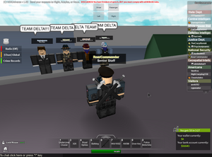
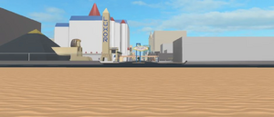
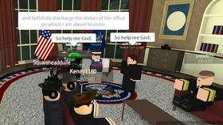
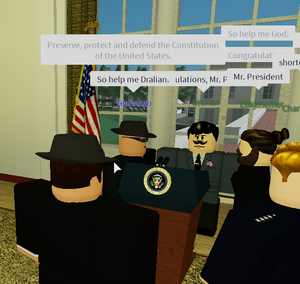
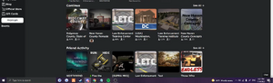
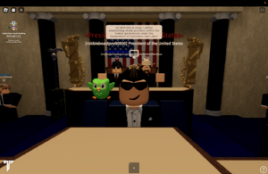
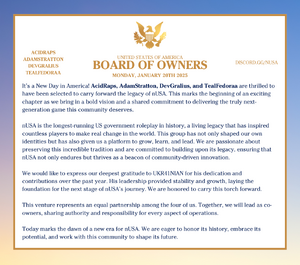
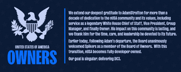

History of the United States
The history of the United States dates from the foundation of nUSA by Nightgaladeld on 26 November 2012. The country developed a presidency, Congress, courts and public-service agencies alongside a succession of cities and changing ownership arrangements. National life initially centered on Washington, D.C., while Las Vegas became an important center of employment, commerce, municipal elections and news coverage. The later rebuilding of Washington and the development of Boulder County changed the settings in which citizens worked, voted and participated in government.[1][2][3]
An ownership crisis in July and August 2013 produced competing claims to presidential authority before Nightgaladeld recovered the group and an election brought Marinio and Lumidas to office. Subsequent governments developed recruitment and electoral procedures, reorganized agencies and contested the limits of executive, legislative and judicial power. The attempted State of Columbia in 2019 tested federal authority over municipalities, while Procursive's impeachment produced a major dispute over judicial review of removal from office.[4][5][6][7][8]
The early 2020s combined political turnover, external conflicts, rival United States groups and uneven participation. Municipal government was discontinued in 2021 amid declining activity and voting, before new reconstruction efforts and Boulder provided further settings for public institutions. The July 2023 legal reset nullified the earlier federal legal framework and was followed by a new Constitution and management-supervised archival procedures. Management resignations and the shutdown of several administrative services late that year preceded Pauljkl's transfer of ownership to UKR41NIAN and Dilliuss in January 2024.[9][10][11][12][13]
The 2024 rebuilding was followed by a four-person ownership partnership in January 2025 and further constitutional and electoral disputes, including Rathuzen's impeachment trial and conflicting presidential results in March 2026. Spikers replaced AdamStratton on the ownership board in February 2026. DC3 opened in paid early access in July and free beta in September, adding integrated electoral, training and employment systems while development continued. By September 2026, the country's elected institutions, administrative ownership and public activity operated within another generation of the capital.[14][15][16][17][18][19][20][21]
Chronological overview
| Period | Principal developments |
|---|---|
| 2012–early 2013 | Foundation; Constitution and Bill of Rights; original Washington; early elections and recruitment.[22][23][2] |
| 2013 | Ownership and presidential crisis; recovery of the group; Marinio–Lumidas election and reconstruction.[5][6] |
| 2014–2017 | Agency and electoral development; Las Vegas civic life; executive reorganization; Washington rebuild.[24][3] |
| 2018–2019 | Impeachments; State of Columbia; Procursive's removal and judicial challenge; more elaborate election administration.[25][7][8] |
| 2020–2021 | Reset4K's disqualification and removal; HUSA/BUSA sanctions; municipal-government discontinuation.[26][27][9][10] |
| 2022–2023 | Executive reconstruction and Boulder; Jtport's acquittal; legal reset; late-2023 service and management crisis.[28][29][11][13] |
| 2024 | Ownership transfer and rebuilding; municipal consolidation; executive and congressional disputes; judicial reset.[30][31][32] |
| 2025–September 2026 | Collective ownership; constitutional readoption and Rathuzen crisis; election disputes; developer-board transition; DC3 beta and integrated civic systems.[14][33][15][17][19] |
Foundation and the first capital, 2012–2013
Foundation and constitutional design
Nightgaladeld founded the United States on 26 November 2012. During the following month, the government developed a constitutional framework, a statement of rights and a capital in Washington, D.C.. The first arrangements combined a national administration with proposed state and territorial institutions. From the outset, the presidency, the legislature and the judiciary were distinct offices, while the group's owner exercised practical control over the community in which those institutions operated.[1]
The Constitution published on 26 December outlined a bicameral Congress, a presidency and a Supreme Court. Congress could legislate and participate in decisions concerning war and treaties; constitutional amendments required agreement by both chambers and approval involving the president and the Court. The House's representation was tied to the size of the states, at one representative for each fifty members, while each state was to have two senators. The proposed terms were considerably longer than those used in later electoral arrangements: representatives would serve ten months, with a review or election in the fifth month, and senators twelve months, with a review in the sixth. The extent to which all these arrangements operated is uncertain.[22]
Statehood was defined partly through membership and partly through the existence of a functioning civic setting. The Constitution specified membership thresholds for states and territories, provided for a return to territorial status if membership fell below forty, and required a place with more than one hundred visits. A legislature's meeting place and a federal court building were among the expected facilities. The prescribed balance between citizens' shops or buildings and government offices favored civilian construction: five citizen buildings were required for each office building. These provisions connected representation to the development of inhabited places and attempted to give businesses and ordinary residents space alongside government.[22]
The Bill of Rights, published the same day, addressed speech, assembly and the press; possession of arms and self-defense; protection of property and businesses; searches and warrants; due process and jury trial; and voting. These rights came with qualifications and could be changed subsequently. In particular, the initial voting provision allowed a voter to take back a vote, whereas the January 2013 vice-presidential poll prohibited changing one. The developing constitutional order therefore included both a statement of general rights and rules for particular electoral procedures, which did not remain identical across successive announcements.[23]
Washington and public employment
Washington became the center of national administration and public recruitment. On 20 January 2013, Nightgaladeld publicly presented the city and linked its original place. In a recruitment notice later that day, he identified Washington as the official city of the United States and advertised jobs in the Secret Service, Homeland Security, the Central Intelligence Agency, Capitol Police and White House staff. Taxi driving appeared alongside these public offices. The capital thus offered civilian employment as well as a setting for security agencies and political officials.[2]
The early capital brought together several different forms of participation. Citizens could seek an agency position, join the political institutions or perform a service within the city. The recruitment notice presented these activities as parts of the same national community, rather than restricting membership to election participation or military service. Its mixture of protective, intelligence, legislative-security and civilian work anticipated the later importance of agency recruitment, transport and public employment in both Washington and Las Vegas.[2]
The first electoral procedures
Early elections combined citizen participation with approval by national officeholders. A January 2013 vice-presidential selection began with a citizen poll to choose five finalists. The posted intermediate tallies changed as voting continued: jbn011 led the reported count, followed by Sk8terdude545, while Baxterknite and 97tomtom were among the other finalists. A subsequent posting replaced the initial fifth finalist with hithop3000. These announcements described successive stages of the selection rather than a completed appointment.[35]
The second poll, opened on 26 January, listed those five candidates and prohibited alternate-account votes, duplicate votes, self-voting and changes to a submitted vote. The winner of the citizen poll would then be considered by Congress, White House staff and the founders. Selection therefore involved more than a single national ballot: popular support provided an initial result, but the announced process retained a further institutional vote. The original procedure also shows that account eligibility and repeat voting were concerns well before the later development of the Federal Election Commission's filtering systems.[36]
The ownership and presidential crisis of 2013
Account compromise and temporary custody
In July 2013, a dispute over the ownership of the national group developed into a conflict over presidential authority. On 27 July, Nightgaladeld reported that his account had been compromised and that he was seeking assistance from Roblox moderators. A separate post announced that Katie would hold the United States until his account was safe. This was an announced temporary custodial arrangement; the subsequent transfer and retention of the group became the central issues in the crisis.[37]
The following day, the Emergency Defence and Advisory Council issued a statement saying that government and law-enforcement functions remained operational. The statement cautioned that a full explanation of the incident had not yet been established and promised further information. It was signed by Lumidas in his national-security capacity, Nick00788 in his intelligence capacity and Moolah as president. Their intervention sought to maintain administrative continuity while the group's ownership was uncertain.[38]
By the end of July, the group was under Moolah60's control. Nightgaladeld alleged that his compromised account had left the group, Katie had claimed it and TheEvidence had transferred it to Moolah. Marinio later published an account containing purported conversations from 27 July. In that account, Nightgaladeld initially asked Katie to hold the group and subsequently directed that it be transferred to Moolah. Marinio denied personally making the transfer and said that TheEvidence had used the account to do so. The participants disagreed over the meaning and legitimacy of the transfer; the accusation that the account compromise was deliberately arranged was not established by an independent finding.[39]
Competing claims to leadership
The dispute widened when gmf34 assumed the presidency. In a statement on 30 July, he said that Moolah had taken custody after the previous owner left and had permitted him to become president as the next official in command. He credited Moolah with work on the capital, scripts, interfaces and group ranks. Nightgaladeld, in a separate statement that evening, objected that no election had occurred and criticized Moolah's continuing possession of the group. The disagreement concerned both the legitimacy of presidential succession and whether ownership would return to the founder.[4]
Gmf34's program promised clearer constitutional arrangements, departmental organization, a functioning Congress and reinvestment of national funds. It also proposed more cities, business lots and housing, together with the removal of car licenses and restrictions he considered unlawful. The program presented development and administrative reform as a response to the change of leadership. Implementation of the program is uncertain.[4]
The crisis also prompted resignations and public argument. The chief of staff resigned on 30 July, questioned the retention of the group and discussed earlier conversations about eventual Moolah ownership. The statement expressly left uncertain whether the breach had been deliberately arranged. In August, a Citizens Voice post demanded elected leaders, trained officials, freedom of expression and the removal of the group-holder rank. A response defended the existence of voting and institutions under the current administration and noted that Moolah had previously been elected. These exchanges exposed competing understandings of legitimate government without providing a reliable measure of support for either side.[40]
Development discussion continued during the political dispute. On 9 August, Moolah announced plans for a Dunkin' Donuts building in Washington and invited suggestions for its features. An accompanying reply referred to custom animations. The proposal concerned the same capital around which the dispute over ownership and access was unfolding, but the opening date is uncertain. The capital remained an object of competing administrative and development programs throughout the crisis.[41]
Nightgaladeld continued to pursue recovery through customer support. In an 8 August post, he described supplying the group link and waiting beyond an expected response period. He also announced plans for reform, a separate holder and presidential election, and the exclusion of officials whom he accused of disloyalty. These were his intended measures while ownership was still contested, rather than evidence that every threatened expulsion had occurred.[42]
Restoration and the August election
On 15 August, Nightgaladeld publicly acknowledged that the United States had been returned and thanked customer service. His statement promised a return to democracy and elections, while excluding those he regarded as responsible for the dispute. The precise moment of restoration is uncertain. On 16 August, Gmf34 resigned all his offices and announced his departure, citing the turn of events and an inability to remain sufficiently active.[5]
Restoration did not immediately end disagreement over the administration of the capital. Nightgaladeld said that he intended to clear arrest records and locate scripts which, he alleged, Moolah had used to interrupt access to his Washington and direct players elsewhere. The statement linked the political controversy to the practical question of which capital citizens could use. The claimed interference remained an accusation, rather than a technical finding establishing the operation or removal of the scripts.[43]
The new presidential contest was organized through Democratic and Republican party groups. Instructions published on 16 August called for party membership, meetings and debates, neutral moderators and the selection of three candidates from each party. Candidates were also required to provide running-mate information. The process sought to restore a structured election after the competing presidential claims of July, with parties serving as the mechanism for choosing a field of candidates.[44]
The results announced on 26 August gave the Marinio–Lumidas ticket 163 votes, ahead of Brian987987–RodgerDodger with 63. The remaining tickets received much smaller totals. Nightgaladeld identified Marinio and Lumidas as the winners and said further instructions would follow. The result announcement was followed the same day by a first-week agenda signed by Marinio as president and Lumidas as vice president. The precise date of the oath ceremony is uncertain.[6]
Reconstruction under Marinio, August–December 2013
Government recruitment and congressional elections
Marinio's reconstruction program emphasized staffing, elections and the relationship between agencies and the capital. His campaign had promised regular congressional elections, constitutional judicial appointments, a complete cabinet, stronger enforcement of rights and additional cities. It also proposed applications across government and a work-permit system for police. Marinio defended his conduct during the ownership crisis by saying that he and other officials had remained to preserve institutions. That explanation was part of his campaign account; his subsequent administration placed recruitment and reorganization at the center of its announced agenda.[45]
The first-week agenda proposed a police education and work-permit scheme involving Labor and Education. It concentrated the active Washington agencies on the Secret Service, Homeland Security and Capitol Police and called for officer testing. The proposed division between recruitment, training and field service sought to make agency employment more systematic. It was an announced program, and its full implementation across the agencies is uncertain.[46]
Congressional elections followed. Applications announced on 31 August distinguished Democratic and Republican affiliation, restricted alternate accounts and specified campaign conduct. The procedure also addressed eligibility for directors and deputies and directed submissions to a designated election account. For that contest, one senator and four representatives were to be elected. The ballot published the same day permitted one Senate vote and one House vote and set a closing time for the following day. [47]
Transport, businesses and access to employment
The administration's plans extended beyond office appointments. During the August campaign, Marinio described inspecting Washington with Lumidas and considering a Department of Transportation station. Subsequent planning mentioned buses, the restoration of transport activity, bail and the use of money within the city. These proposals treated the capital as a place requiring services and circulation as well as government headquarters. The proposed station and bus network awaited implementation.[48]
Affordability became another issue in government recruitment. In November, Marinio proposed protection for applicants who could not afford required uniforms. The proposal was explicitly linked to Roblox's clothing price floor and differences in the income available to paid and unpaid members. It sought to prevent inability to buy a uniform from becoming sufficient grounds for refusing employment. The proposal addressed a material barrier to agency employment; its passage is uncertain.[49]
In his half-term report on 1 November, Marinio presented reconstruction, an operating Congress and checks and balances as achievements of the administration. He also referred to an alliance with Italy and departmental reform, while announcing further work concerning the military, businesses, the United Nations, the judiciary and the Constitution. His estimate that reconstruction was largely complete was an assessment of his own administration, rather than a measured national indicator. The breadth of the report nevertheless reflected an agenda that joined institutional recovery to public commerce, diplomacy and military organization.[50]
Departmental reform and limits on presidential authority
Departmental reform brought the president into disagreement with those controlling the capital's development. On 4 November, Marinio said that his Federal Department Reform had been cancelled after developers and Nightgaladeld opposed changes to Washington's teams. The dispute concerned the extent to which reorganizing government departments also required changing the way agencies were represented within the city.[51]
A second-reading proposal later that day separated administrative departments from the field agencies represented by teams. It allowed academies and tryouts for agency recruitment, dropped the original education scheme and proposed removing a Secret Police group which the president regarded as unofficial. The revised proposal attempted to accommodate the practical distinction between a government's organizational chart and the agencies available in Washington. Its publication after the cancellation statement leaves the final extent of the reform uncertain.[52]
Contested removal and Lumidas's succession
Marinio's presidency ended in a contested removal on 30 December. In a statement that day, he identified himself as a former president, said that he had been impeached and criticized Congress's conduct and the Chief Justice's absence. He also announced another presidential campaign. His statement supplies the date of the removal dispute, while the precise congressional instrument and grounds are uncertain.[53]
On 2 January 2014, Marinio argued that the trial had violated the Constitution because the Chief Justice had not presided. He said that Nightgaladeld had declined to restore him because Lumidas had already been sworn in, and claimed that he was entitled to resume office. Lumidas's separate statement the same day recognized his own succession from the vice presidency and the selection of former Speaker Aerium as vice president. The dispute continued over the validity of the removal.[54]
Government and cities, 2014–2015

By early 2014, nUSA's federal administration was combining elections and public-service recruitment with development of multiple cities. Lumidas's January transition announcement marked the beginning of a new administration. He established academy-based recruitment for agencies and a Commission of Academies, while allowing agency directors to approve exceptions. A contemporary employment directory listed law enforcement, intelligence, Congress, C-SPAN, NASA, military, labor, commerce, treasury and technology offices, with entry routes including academies, interviews and tryouts.[24]
The administration also sought to establish civilian and military institutions. Congressional notices in January listed a bill on Defense Logistics Agency organization, but later executive action ordered that agency closed, citing the approval of two competing groups and uncertainty over director authority. The sequence illustrates the difference between legislative approval notices and an agency's continued operation. In February, election instructions issued by Federal Election Commission chairman Marinio described voter registration, one unchangeable vote, restrictions on alternate accounts, and a forum ballot.[55]
In February 2014, Nightgaladeld congratulated Zeyad and Suddenrush on winning an election, while also referring to unrest in the rebuilt Washington and police-abuse reports in Washington and New York. By July, White House rules specified Secret Service escort authority and conditions for visitors holding access passes, reflecting the development of access and security procedures around executive settings.[56]
Aerium's administration and the January 2015 transition
The later 2014 administration of Aerium addressed the limits of intelligence collection, the organization of protective services, and electioneering by federal employees. One order allowed citizens and foreign nationals to withdraw consent for agencies to retain their information, requiring removal within seven days. It exempted anonymous analytical programs, targeted programs personally approved by the President and Vice President, and surveillance legally authorized by a federal judge. The distinction between general recordkeeping and specifically authorized surveillance became part of the administration's stated privacy policy.[57]
Aerium also ordered the Federal Protective Service recognized as an official agency within Homeland Security following the shutdown of Special Forces. The order directed the transfer of non-abusive Special Forces personnel under the National Security Advisor's supervision. Its preamble acknowledged disagreement over whether Congress had approved the service, and Aerium cited a statement by Speaker Jcmand supporting executive recognition of agencies. The reorganization therefore involved both personnel and a dispute about the respective authority of the President, Congress and judiciary.[58]
On 9 November 2014, Aerium imposed stricter restrictions on campaign advertising through federal agency walls and agency teams. The order prescribed dismissal for prohibited advertising, while limiting who could impose the punishment and requiring evidence to be available for review. An official unable to supply that evidence could face dismissal and the reinstatement of the affected employee. Private requests for political support remained permissible; government Skype rooms and unsolicited mass campaign chats received separate rules. Vice President Pathwaysbball and Speaker Jcmand endorsed the order. These provisions show that campaigning, workplace discipline and communication platforms were already closely connected before Discord became a principal national archive.[59]
Pathwaysbball subsequently became President. His January 2015 reelection campaign ended in withdrawal rather than a renewed term. In a statement on 19 January, he acknowledged reduced activity during his final weeks, explained that outside commitments prevented him from sustaining the required participation, and endorsed Jcmand. He also praised his military administration's reconstruction work. The statement is an early example of a President explicitly connecting withdrawal to the time demands of office, even while elections and other government institutions continued to operate.[60]
Development of Washington and Las Vegas
Las Vegas emerged as a separate city setting before its main group-associated asset was created. Roblox metadata dates a Pauljkl-authored predecessor place to 17 September 2013 and the main group-associated place to 28 June 2014. A June 2014 police guide identified Pauljkl as city creator and police chief and described ranks, internal affairs and specialized divisions. The next day, moderator Verbero announced a planned removal of Pauljkl and the Las Vegas place, citing alleged misconduct; Pauljkl disputed the explanation, and other members objected to separating the city from nUSA. The notice set 4 July as a proposed removal date, but that outcome is uncertain. The date of the city's public opening is uncertain.[61]
Washington underwent a rebuild in early 2014. A March petition asked for the former city to return, citing broken purchased passes and dissatisfaction with the replacement. Nightgaladeld replied that the new Washington was a beta and that earlier features were being transferred. In June, the founder announced planned in-game-money car and gun shops in the new city, while a July post reported that Las Vegas purchases were failing after a platform update and that the product had been disabled. Washington and Las Vegas continued to develop as separate cities; the date of the earlier Washington rebuild is uncertain.[62]
Las Vegas and Washington developed as connected but distinct civic settings. A March 2015 statement described Las Vegas and Washington as already existing and Miami and New York as under development, without documenting the completion of the latter two. Game passes, in-game purchases and city-specific services linked municipal life to Roblox commerce.[3]
Nightgaladeld announced Jcmand and Lumidas as winners after excluding invalid ballots: Jcmand received 298 valid votes, SuddenRush 280, and Smoothie71 227. Pathwaysbball withdrew and endorsed Jcmand. In a separate dispute, Nightgaladeld said that Jcmand and Economic would not face fraud charges for promoting immigrants contrary to an election rule; affected ballots were excluded and ranks reverted. The notice records a decision not to charge the candidates, rather than a finding of fraud.[63]
The new administration reorganized federal offices through executive orders. Jcmand's first order abolished several departments and agencies, placed Special Forces in domestic law enforcement, and assigned the Office of Management and Budget to the Executive Office of the President. A subsequent order described executive and employment authority for the Vice President. The orders changed the departments and agencies named in the federal structure.[64]

Municipal lawmaking and everyday services
The Las Vegas City Council made local services and access rules subjects of lawmaking. Its process treated development as a second stage after a bill's vote: measures could enter an update queue managed by the city's developer, while the Development Council held separate approval and veto authority. In 2015, proposals and completed development records addressed housing customization, ATMs for deposits and withdrawals, and police entry to the casino for enforcement. The casino measure allowed officers carrying enforcement equipment to enter without a pass while barring them from gambling. The city process took ideas through a bill and council vote; approved developments entered an update queue and were moved to a finished list when built. These measures tied everyday infrastructure and policing to the elected municipal government.[65]
The council's authority also faced a proposed federal reorganization. In May, the Senate Advancement Caucus proposed dissolving it and replacing it with a Nevada government. Pauljkl and municipal representatives opposed the change, while KOTwarrior noted that the proposal had not passed the House. A September debate then addressed the council's combined legislative and development role: Pauljkl said agencies seeking teams first went to Congress for approval, while critics questioned developers' influence over municipal decisions. The disputes exposed a recurring separation between elected authorization and control of implementation.[66]
Mayoral elections supplied another measure of local participation. Bailey552 won 289 of 554 votes in August 2015, and Flammus won 217 of 471 votes in November. The campaigns preceded the city's more detailed 2018 charter and show that municipal offices were contested before the later charter standardized terms and appointments.[67]
See also: Las Vegas City Council
Private enterprise and the boundary between government and founder management also entered public debate. Nightgaladeld announced a Founders Private Intelligence Agency in March 2015, describing it as a private organization outside government reporting requirements and planning a Washington team.[68]
-
Emperorlol01 with a City Council title, in a screenshot he identifies as taken in 2015. Screenshot credited to and uploaded by Emperorlol01 on 22 August 2025 at 7:09 p.m.[69]
-
Washington in an image identified by J_B as dating from 2015. Uploaded by J_B on 16 February 2021 at 4:55 p.m.[70]
Federal reorganization under SuddenRush12G, 2016–2017

SuddenRush12G's presidency, which began in January 2016, brought a broad reorganization of the executive branch, security services and public employment. Before his inauguration, the State Department had described ambassador appointments, reporting and normalization with the United Kingdom and Russia. In April, an executive order regulated private businesses through Commerce and the Small Business Administration; a separate courthouse hub and national-security council appeared as proposals, but their opening and passage were not confirmed.[71] His opening executive order abolished the Department of Education, its academies and universities commissions, the Securities and Exchange Commission, and the Department of Housing and Urban Development. A second order, the “One USA Order,” barred executive employees from holding citizenship in another United States government and gave current staff 24 hours to renounce such affiliation or face dismissal. Both measures sought to consolidate federal service under a single national government.[72]
In February, SuddenRush12G nominated NorthFuze to the Supreme Court; the President announced Senate confirmation on 27 February. In March he nominated TimGeithner, describing him as a constitutionalist with political experience, but that announcement did not confirm Senate action. By May, he said that he had appointed five justices and again called on Congress to replace inactive judges. The appointments and vacancies made judicial staffing part of the administration's early program.[73]
The administration imposed detailed controls on sensitive offices and facilities. A 26 January prison-clearance order divided access among Justice officials, investigators, local emergency services, intelligence agencies and protective details, with visitor, road and airspace restrictions around the federal prison. In February, SuddenRush12G dissolved the Federal Intelligence Agency, citing repeated misconduct, and required presidential access to executive branch communication rooms, documents and boards. The order dissolving the FIA presented misconduct as the administration's reason for the action; it was not a judicial finding against individual members.[74]
An attempt to expand the White House chief of staff's powers lasted two days. An order of 20 February authorized the chief of staff to supervise and discipline executive personnel, demand reports, audit departments and impose employment blacklists, while keeping the office outside presidential succession and subject to presidential removal. On 22 February SuddenRush12G revoked the order after opposition that it concentrated too much authority in one official. He described the proposal as an effort to maintain continuity during his absences, acknowledged public resistance and appointed a new chief of staff. The reversal became a visible instance of executive policy being withdrawn after public criticism.[75]
Executive employment became a prominent area of policy. A March order permitted citizens with six months' standing to petition for the removal of an executive officer; a petition with 75 qualifying signatures could lead to removal with presidential approval. Agency heads were also required to explain an employee's dismissal upon request. A separate order directed executive officers to carry out court arrest orders, while limiting the use of arrest teams bearing that designation in nUSA cities. These rules connected public petitions and judicial directives to executive personnel practice.[76]
A separate March statement invited public comment on the Special Forces' leadership after SuddenRush12G cited petitions and complaints about its direction. He asked whether its commanders should be replaced but did not announce a dismissal in that statement.[77] The administration also created the Diplomatic Security Service within the State Department in March to protect diplomats, foreign delegates and senior department officials. In April, its private-sector order placed the Small Business Administration under Commerce and created an International Trade Administration with business registration and regulatory functions. A May order established separate intelligence and Justice Department clearance systems, including Confidential, Secret and Top Secret levels and senior-official access decisions. These successive orders developed both external protection and internal information controls.[78]
National-security coordination and military staffing were debated alongside these administrative measures. The April Enhancement to National Security Act proposed a council chaired by the President, with the Vice President, the state and defense secretaries, the attorney general and additional presidential appointees. Its duties would include reviewing intelligence requirements, coordinating policy and overseeing intelligence blacklists. Final passage is unconfirmed. SuddenRush12G separately ordered creation of the National Security Medal for distinguished service or courage; the order established nomination procedures, but did not identify recipients. His May address described a military reorganization and reported just under 300 active-duty enlisted personnel, a figure given by the President rather than an independently audited count.[79]

Foreign policy included a February 2016 alert prompted by reported threats from the Union of Soviet Socialist Republics. SuddenRush12G ordered deployments to Washington and Las Vegas, issued a travel warning for member nations and changed the readiness level from DEFCON 5 to DEFCON 4. In April he said the National Security Agency had shut down the group PS-35, which the administration identified as a terrorist organization. These were executive accounts of security actions and did not amount to independent findings about the alleged threats or group.[80]
SuddenRush12G later won reelection in 2016; contemporary BBC coverage described him as the first nUSA President to serve consecutive terms. TimGeithner managed the campaign, drafted its announcement speech and joined the ticket as vice-presidential candidate. Five people served as vice president at different points during the presidency, a turnover that accompanied executive restructuring but did not interrupt the presidential term. Contemporary coverage reported 427 votes in SuddenRush12G's contest with YouTube910.[81]
In February 2016, SuddenRush12G apologized to Italy after a breakdown in relations and a war between the two governments. He said unauthorized citizens and military personnel had violated Italian sovereignty, credited State Department negotiations with securing a peace agreement, and promised closer oversight. In May he reported more than 50 foreign state visits during his first term. These were the administration's accounts of diplomacy and activity abroad.[82]
In the second term, the administration re-established an Internal Affairs Bureau to investigate executive-branch corruption and abuse. SuddenRush12G said it had handled more than 20 cases and terminated two employees by 1 August; those figures were reported by his office. An August ordinance barred executive employees from harassing or disparaging agencies and colleagues in public or private communications and allowed dismissal after investigation. A separate October employment order restricted federal hiring based on arrest records, reasoning that an arrest did not establish guilt and that paid expungement could disadvantage applicants. A November order standardized resignation notice periods for employees and senior officials. It gave ordinary employees three days to notify their agency head and department or agency heads one week to notify the President, while allowing a limited period to retract a notice. The administration said notice periods would help track departures and maintain continuity. In December, SuddenRush12G also encouraged officials and citizens to use Twitter for information about elections, agencies, jobs, and businesses, describing direct contact as a way to increase transparency. The measures expanded internal employment rules and public communication, though their effects varied as later administrations reorganized agencies.[83][84]
The administration also revised its military organization after a conflict with the United Kingdom. In an October report to the National Security Council, SuddenRush12G argued for smaller combat units and branch-specific training. The plan proposed caps of 150 Army, 75 Marine Corps and 300 each for Navy and Air Force personnel, following a two-day common basic-training program. It described policy recommendations rather than a completed reorganization. TimGeithner separately argued that continued nUSA membership in the United Nations was important to diplomatic recognition, amid a dispute over whether to withdraw.[85]
See also: SuddenRush12G
Las Vegas municipal government continued to shape services during SuddenRush12G's presidency. In March 2016, the city replaced federal Department of Health and Human Services provision with local emergency medical service. Pauljkl said the change followed a two-week opportunity for DHHS to improve its activity, while other participants disputed the department's performance; the EMS team was later marked complete. In September, Technozo won the mayoral election with 350 of 733 votes. An airport-destination measure connected Las Vegas with the development test area and election locations, and its development card marked the build complete. A Department of Transportation bus proposal followed in October.[86]
See also: Las Vegas (nUSA)
-
An Air Force training formation identified by TacticalLoud as his basic military training in 2017. Uploaded by TacticalLoud on 26 January 2026 at 3:35 p.m.[87]
-
A group photograph featuring Department of Homeland Security personnel, identified by VetExellus as 2017. Uploaded by VetExellus on 13 January 2026 at 8:09 p.m.[88]
-
SWAT personnel and a helicopter in Las Vegas, identified by melancholy as a TPR–SWAT encounter around 2017. Uploaded by melancholy on 10 September 2020 at 12:54 p.m.[89]
Electoral government and institutional conflict, 2017
The Plutocratic revival and congressional competition
The rise of the Plutocratic Party in 2016–2017 followed an earlier organization called Plutocracy. It was already a subject of congressional restrictions in January 2015: Jcmand published a resolution suspending the party's recognition on that senatorial ballot and treating its candidates as independents. His accompanying Senate proceedings recorded the ballot suspension passing with five ayes and one abstention. A separate Plutocracy removal bill passed the Senate but was still awaiting the House. The two actions had different procedural statuses and did not establish a permanent disappearance of the movement.[91]
SurpriseParty and SheldonParty became central organizers of its later revival. In a joint departure statement dated 13 February 2017, SurpriseParty recalled beginning discussions to revive the party a little over a year earlier. SurpriseParty described being its first senator and claimed that within months it had obtained supermajorities in both houses of Congress, breaking a period of Democratic predominance. The statement was signed by SurpriseParty as former chairwoman and representative, Stellaric as former vice chairman and Senate President pro tempore, and SheldonParty as former national campaign manager and senator. Their account identifies the leadership of the revival, while the January 2015 records establish that Plutocracy itself predated that effort.[92]
The party's gains were also acknowledged outside its leadership. In June 2016, Republican chairmanship candidate FallenBrute complained that the Republicans had fallen behind both the Democrats and the Plutocrats, and called for renewed Republican organization. Although written as a campaign appeal, his statement provides a contemporary indication that the Plutocrats had become a substantial competitor to the established parties.[93]
Plutocratic campaigns combined employee rights, executive accountability and private enterprise. Twittered's January 2017 Senate campaign proposed closer scrutiny of executive performance, stronger employment protections, attention to the Justice Department's case backlog, and easier business registration. Both SurpriseParty and SheldonParty publicly endorsed the candidacy. The campaign also exposed differences within the party: Twittered said the party favored leaving the United Nations, but personally preferred renegotiating the United States' relationship with it. A party position and an individual candidate's diplomatic preference therefore did not always coincide.[94]
The February departure statement cited repetitive political activity, declining enjoyment and competing commitments, and stressed that the signatories were leaving party and congressional posts rather than nUSA altogether. SurpriseParty soon returned to parliamentary leadership. The Court of Election Review's certified March Class I Senate results listed SurpriseParty under the Isocracy label with 51 votes, alongside LukeHefner with 50. On 25 April, Vice President Blastatack announced SurpriseParty’s election as Senate Majority Leader and Apolloqi's as Minority Leader. These records show both the organizers' continued participation and the changing party labels under which they served.[92][95]
TheySinned's presidency and the British confrontation
TheySinned succeeded SuddenRush12G in January 2017 after a campaign emphasizing access to employment, training and opportunities for working citizens. Timothy Geithner's December endorsement presented the contest against former President Jcmand as a choice between continuity and change. Once in office, TheySinned promoted more direct communication through Twitter and publicized accounts for the White House, intelligence community, Senate and Supreme Court, together with several news organizations. This communications policy accompanied, rather than replaced, the continued publication of orders and political debate on the Roblox forums.[96]
The new administration confronted renewed conflict with Britain. In an address dated 28 January, TheySinned said that Congress had overridden SuddenRush12G's veto of the Sovereignty Act on 22 January, undoing an earlier peace arrangement negotiated by SuddenRush, TimGeithner and Lumidas. He reported a British declaration of war and coalition preparations, criticized the congressional decision, and announced higher military readiness, intelligence restrictions and negotiations over war terms. These were the President's explanation of the crisis and his allocation of responsibility for it.[97]
A separate executive order, dated 22 January and published the following day, created a War Commission comprising the President, Vice President, senior security and diplomatic officials, and designated military commanders. Legislative leaders and other officials held advisory places. The commission was assigned military planning, intelligence coordination, deployment advice and recommendations to Congress; the order also described the Vice President as co-commander-in-chief. The war preparations demonstrate that TheySinned's brief presidency extended beyond domestic employment policy. A final settlement of this January confrontation has not been established by the surviving records reviewed here.[98]
On 30 January, TheySinned ordered an executive employment blacklist for abusive or judicially designated rogue employees, required reporting of substantiated abuse, and exposed officials who knowingly hired blacklisted personnel to dismissal. The policy prompted a public argument over evidence and due process. Conservative Party chairman TZW123 argued that its definitions could punish wrongly dismissed employees and concentrate excessive power in the presidency. Chief of Staff devTools replied that the administration intended to target serious abuse, required evidence or a court order, and distinguished an employment exclusion from a criminal conviction. He also stated that the policy would not be used to blacklist employees for conduct in earlier administrations.[99]
TheySinned's second employment order, issued on 20 February, limited most executive employees to jobs in two departments or agencies, with defined exceptions. It directed leaders to review staffing and remove employees still in breach after a transition period. He resigned on 25 February for personal reasons, and Vice President PurgeSabre also left office. Rapidaax succeeded him. A subsequent Homeland Security report described the loss of the President, Vice President and White House chief of staff as disruptive to departmental work.[100]
Rapidaax's employment reforms and the spring succession
Rapidaax's administration made access to jobs and protection against wrongful dismissal central subjects of executive policy. On 27 February, the iWork order established a six-member Board of Appeals led by the Secretary of Commerce and Labor. It authorized review of dismissal complaints and votes on reinstatement, with protections covering whistleblowing, retaliation, written employment promises and political activity. Cabinet members, agency directors and the press secretary were excluded from the board's reinstatement power. Appeals were to be submitted through a game linked to a Trello board, connecting a citizen-facing service to the government's records system.[101]
The HIRE order of 1 March aimed to connect unemployed citizens with agency representatives. It required applicants to be actively seeking employment and to pass a background check, while participating agency representatives needed authority to accept applicants and conduct hiring. Federal departments and agencies were directed to hold at least one tryout or interview each week, subject to presidential exceptions. The order's preamble complained that the same established members repeatedly obtained jobs while newer citizens struggled to enter public employment.[102]
Other orders redefined Task Force Kilo as a presidential protection unit under Homeland Security on 8 March and established a Veterans Relations Council and Veteran Reemployment Program on 5 April. The latter called for identifying veterans' employment interests, providing training and seeking placements with federal agencies, municipal services or private employers. Together, these measures connected presidential security, veterans' affairs and the wider employment system.[103]
Sufferpoop followed Rapidaax in April. Near the end of his short administration, the Senate confirmed his nominations of TimGeithner and SuddenRush12G to the Supreme Court, both by votes of 9–0 on 19 May; both were sworn in the next day. His resignation on 21 May brought Vice President Blastatack to the presidency. The summer transition likewise carried judicial business between administrations: Blastatack nominated Ryan_Revan on 20 July, the Senate confirmed the nomination 7–0–1 on 21 July, and incoming President SurpriseParty completed the appointment that day.[104]
SurpriseParty's administration
SurpriseParty entered the presidency in July with JustYourDailyNoob as Vice President. The 27 July hiring order assigned agencies recurring days for tryouts or interviews, beginning on 1 August, and prescribed minimum recruitment numbers. Existing employment caps were abolished unless the President approved a justified replacement. Intelligence agencies still had to conduct recruitment events, but did not have to hire from each one. The order also required routine review of pending join requests and employee eligibility. It framed irregular hiring as a loss of opportunities for ordinary citizens.[105]
A companion order centralized agency uniform sales in the United States Federal Exchange. Departments were to remove their own uniforms from sale once the Exchange carried them, while disbursements required congressional appropriations and a congressional auditor was to monitor the audit logs. The order anticipated the pending New Age for America Act, but treated centralizing uniform sales as an executive action that could begin before that bill's enactment. Hiring and public finance thus formed linked parts of the administration's program.[106]
On 25 August, a further order required leaders to give employees reasons for dismissal and a week's notice of proposed mass employment reforms. It provided for an anonymous complaints system overseen by the White House chief of staff and prohibited retaliation when a complainant's identity became known. On 28 October, another order required merit-based advancement through lower and middle ranks and prohibited favoritism in hiring, while allowing discretionary appointments to senior ranks for agency needs. These directives sought to constrain leadership discretion without removing all appointment powers.[107]
The administration also reorganized presidential protection as Task Force Party within the Secret Service, with a nominal cap of 25 active personnel and oversight from the Secret Service director and Homeland Security secretary. Another order placed prosecutorial decisions to drop charges under Attorney General review, including scrutiny for political or personal favoritism. The archived copies of these two orders do not preserve their issuance dates, but place them among SurpriseParty's presidential documents.[108]
Foreign policy included a renewed application to the United Nations. SurpriseParty publicized the application on 14 October. The next day a national update announced passage through the General Assembly pending a Security Council vote; later that afternoon SurpriseParty announced that the United States had been readmitted, crediting allied assistance. The sequence marks a diplomatic change from the withdrawal arguments visible in the January Plutocratic campaign.[109]
Las Vegas government, businesses and housing
The Las Vegas City Council's March 2017 Bus Service measure passed 5–0. It called for a bus to be developed and stops planned with the mayor; the development card later marked the service team complete. The measure followed a 2016 Department of Transportation bus project and showed how the city tied council votes to a separate development queue.[110]
In February 2017, a completed measure removed vehicle fuel, after its sponsor argued the feature was little used and costly to maintain. In May, President Sufferpoop resigned and Blasatack was sworn in minutes later. In June, Las Vegas held separate mayoral and council elections. Mayoral candidates needed a petition thread supported by 30 signatures; voting opened for mayor on 17 June and for council on 26 June, using a dedicated municipal election place.[111]
In August, developers polled residents on WASD driving controls. The federal constitution was announced as ratified on 8 September; a notice that day also referred to saved car-customization features. In September, a Las Vegas charter set out municipal rights and powers reserved to the city; Congress later provided for its admission as a municipality on equal terms with others, referring to the charter resolution of 10 September. The framework retained a distinction between elected lawmaking and separate development authority.[112] In October, President SurpriseParty and Vice President JustYourDailyNoob announced resignations effective 1 November; a notice that day described the successor's accession and plans to resume government activity. Group Management described Las Vegas as nUSA's primary city, praising Pauljkl's maintenance and development, and warned members against recreating the recent mass shooting in the real Las Vegas.[113]
Las Vegas's civilian economy included two prominent private banking employers, GNC Bank and Bank of America, alongside federal and municipal jobs. Later recollections by former employees identify GNC as an entry point into employment and distinguish it from Bank of America. In a retrospective account of his July 2017–January 2018 mayorship, Mr_Barron credited collaboration with developers on the mall and GNC Bank, and listed an expansion of business and government teams among his administration's accomplishments.[114]
Residents could buy and furnish homes, with middle-class houses near Bank of America, upper-class homes, and trailer homes at the edge of the map. Together with the casino, car ownership, businesses and policing, housing gave Las Vegas an everyday civilian setting beyond federal officeholding. Later players recalled both buying furniture and exploiting a casino glitch to acquire millions in city currency. A participant account describes the opportunity as brief and ending with a developer patch; its date and the precise exploit remain unconfirmed.[115]
Sheldon's succession and the rebuilt capital
The House's November 2017 decision on North Korea demonstrated legislative control over a proposed war. A presidential notice said North Korea had declared war and promised a forceful response. The next day the President said the House had rejected a war declaration after threats against the Capitol and Las Vegas, and announced that he would suspend U.S. war efforts in deference to its vote. The President's account of North Korean conduct was not independently adjudicated in the announcement; the House's rejection and executive suspension were explicit.[116]
-
A city map shared by Pauljkl for planning patrol routes in September 2017. Uploaded by pauljkl on 9 September 2017 at 11:59 a.m.[117]
-
A Washington street scene posted by Squareheaddude in December 2017, shortly after the capital was rebuilt. Uploaded by Squareheaddude on 13 December 2017 at 2:28 p.m.[118]
Washington received a major rebuild on 1 December 2017. Developer recruitment preceded an announcement that the new Washington, District of Columbia, would open on that date. A 30 November release notice described the city as “reborn”; the next day's announcement repeated the scheduled release, and the developer solicited bug reports after launch.[119]
On 4 December 2017, Nightgaladeld announced that he was transferring nUSA's Roblox group to Pauljkl. Paul had developed Las Vegas years before the transfer, but his city-building role and group ownership were distinct. The handover placed the community's group under Paul's control while officeholders and institutions continued to change.[120]
On 9 December, the Federal Election Commission published a guide for congressional candidates that set a 15-supporter threshold for new candidacies, 48-hour registration windows, and commission authority to disqualify candidates.[121]
The two cities maintained separate in-game economies. On 14 December, Pauljkl said that money was not shared between Las Vegas and Washington because the Las Vegas casino made a common currency incompatible with Roblox rules, as he understood them. The explanation linked the city economy to the casino rather than to federal administration.[122]
By December 2017, the nUSA C-SPAN team served both Las Vegas and Washington. The role connected reporting and security to the two active city settings.[123]
Administrative reform, war and political turnover, 2018
The United States entered 2018 with Pauljkl holding the national group and with separate municipal governments and development programs in Las Vegas and the rebuilt Washington. Five presidents held office during the year. SheldonParty resigned in January; Timothy Geithner governed until July, followed by BernardCaldwell's brief presidency and the successive administrations of Lordsights and Frosty_TheSn0wman. Changes in executive organization accompanied disputes over appointments, foreign policy, electoral eligibility and the limits of presidential accountability.[124]
Geithner's succession and administrative reforms
On 30 January, Management thanked President Sheldon Carpenter and the officials who resigned with him, and welcomed Timothy Geithner as president. Geithner's early orders addressed the continuity of government records. His 31 January order created a Federal Register under the White House Chief of Staff, with a separate volume for each president, and scheduled the repeal of existing executive orders on 20 February while requiring a review of provisions necessary for the executive's functioning. A 2 February order required senior officials to preserve their official documents and transfer them through the Chief of Staff and President to the National Archives when leaving office. It also required clear titles, dates and identification of the officials responsible for documents.[125]
Geithner reorganized the National Security Council on 5 February. The President chaired the council, with the Vice President and Secretaries of State and Defense as required attendees, and other executive officials and military and intelligence advisers participating according to their responsibilities. The order required deliberations at least once every two weeks and established a Principals Committee to consider security policy at Cabinet level. The council could adopt written resolutions with presidential approval, while the President retained authority to direct their implementation without a council vote.[126]
Employment oversight formed another part of the administration's program. An order of 7 February established an Office of Government Ethics to investigate complaints about unlawful treatment by supervisors. The office was to report its findings and recommend dismissal of a complaint, suspension or a final employment determination to the President. Either party could appeal to a federal district court after the President's decision. On 11 March, Geithner imposed a general limit of two executive agencies or departments per employee, with a stricter restriction on holders of civil offices and presidential appointments and exceptions for specified military and representative roles. Employees violating the rule were to receive a warning before termination if the violation continued for twenty-four hours.[127]
The intelligence establishment underwent two substantial reorganizations. On 14 February, Geithner placed the Central Intelligence Agency and National Security Agency under the Director of National Intelligence, retained the Federal Bureau of Investigation under the Attorney General with joint intelligence oversight, and ordered the dissolution of several departmental intelligence bodies, including the Defense Intelligence Agency and Bureau of Intelligence and Research. The order also defined classification levels, compartmented access and rules for storing classified material. On 20 May, he revised that arrangement: the NSA would operate under Defense, the CIA would report directly to the President, and the National Security Council would review proposed covert actions. The revised order required attention to civil liberties and privacy and placed the recently established National Background Investigations Bureau under the NSA.[128]
Military administration also changed. On 27 March, Geithner dissolved the Department of Veterans' Affairs and transferred its personnel and functions to a Veterans' Affairs Administration under the Department of Defense. An April order allowed registered veterans to hold employment in three executive agencies, waive combat-related academy phases and take seven days of absence each month. On 6 May, he dissolved the U.S. Special Forces and offered its personnel transfers to other uniformed services. At the end of his presidency, he directed a working group to examine a proposed Space Force and prepare options and draft legislation by 1 August; the order authorized a study rather than establishing the service.[129]
Geithner's final archival directive linked the presidential transition to preservation of the outgoing administration's public work. On 20 July, he ordered executive Trello boards and Twitter accounts to be locked and archived at noon the following day and made available to NARA, with exceptions for the Intelligence Community and National Security Council staff. The directive extended his earlier document requirements to the online services through which departments published appointments, orders and announcements.[130]
The summer campaign and BernardCaldwell's accession
The summer presidential campaign involved a changing field of candidates. A 5 May debate poll named BernardCaldwell, Dralian and Jtdaler. Later polls recorded HHPrinceGeorge's return to the race, paired Bernard with Technozo on 23 May, and again paired Bernard with HHPrinceGeorge on 27 May after announcing Technozo's withdrawal. The repeated changes made campaign participation distinct from qualification for the final ballot; the public polls did not constitute election results.[131]
The Federal Election Commission introduced a registration requirement under the National Voter Registration Act of 2018. National Elections Administrator David announced voting for 16–17 June and directed citizens to register through a dedicated place, with applications tracked on a Trello board. Applicants could challenge a denial through an appeals channel. Federal prisoners, immigrants and accounts outside nUSA were listed as ineligible under the election rules. The requirement created a separate eligibility process before access to the ballot.[132]
Bernard faced congressional opposition before taking office. On 22 June, Sam4219 introduced a resolution proposing that he be held in contempt for failing to provide material requested by the Senate Judiciary Committee; the resolution called for referral to the district attorney and custody by the U.S. Marshals. On 19 July, SheldonParty and Sam4219 introduced a concurrent resolution proposing censure of the president-elect for allegedly promising appointments on five occasions and urging him to resign on 21 July. The subsequent disposition of these proposals is uncertain.[133]
On 21 July, Management congratulated BernardCaldwell and Lordsights as the new President and Vice President. C-SPAN reported that Bernard, using the account MrCaldwellRBX, had taken his oath on Discord. He succeeded Geithner after the summer campaign, although the certified vote totals and final opposing ticket remain uncertain. C-SPAN's coverage also placed the transition within a public news environment in which presidential ceremonies and disputes were reported alongside the government's own announcements.[134]
The British war and the July presidential crisis
The new administration became embroiled in a conflict with the United Kingdom almost immediately. The later impeachment articles described a closed Senate briefing by the Commander of Special Operations Command on 22 July, followed by an emergency joint session over alleged British infiltration. They stated that a war resolution initially passed the Senate, failed in the House and then failed on Senate reconsideration. The articles accused Bernard of presenting faulty evidence and negotiating in bad faith while privately encouraging war. Those accusations were part of the House's case against him.[135]
On 24 July, Bernard issued a statement about a British ultimatum and asked citizens in a public poll whether the United States should go to war. The following day PatrickCoyne introduced H.J. Res. 2, a proposed declaration authorizing use of the armed forces against Britain. Its preamble asserted that Britain had already declared war. The proposal was distinct from the failed resolution described for 22 July; its final passage is uncertain. Fighting nevertheless took place, and an official update on 25 July reported a U.S. defeat in the first raid by a score of 101–35.[136]
Lordsights publicly broke with the President that evening, declaring that the war had begun on false pretenses and that he could not support either the conflict or Bernard. On 26 July, DanielMarston circulated a BBC report announcing that the United States had surrendered after a second British victory and that the two countries had signed the Treaty of Windsor. The report described terms including the closure of Special Operations Command, an admission of U.S. responsibility for starting the war and future cooperation in the United Nations. It also announced an intention to restore relations. The precise treaty text and the extent to which its provisions were implemented are uncertain.[137]
The war intensified an existing dispute over Bernard's conduct. The impeachment resolution introduced on 26 July contained three articles: promises of appointment, misconduct in foreign affairs, and conduct concerning a prospective judicial nominee. The first alleged that Bernard had promised positions to at least six people, and described a committee investigation involving messages, hearings and nomination documents. The third concerned CursedUniverse, whom Bernard allegedly proposed for a judgeship while knowing of his membership in another United States group. That group was not identified in the articles.[138]
The House Judiciary Committee approved impeachment that afternoon, and the full House passed it and referred the case to the Senate. Bernard resigned on 26 July, ending a presidency of five days; by that evening a national update identified Lordsights as President and announced his choice of Chief of Staff. Bernard later acknowledged his resignation and blamed his Vice President for abandoning him. The resignation, House impeachment and later dispute over eligibility were separate events; a final Senate conviction in this proceeding is uncertain.[25]
Lordsights's government, employment and military policy
Lordsights's administration pursued centralized training and recruitment. His first executive order, signed on 1 August, created the Federal Law Enforcement Training Center under Homeland Security and abolished separate executive law-enforcement academies. It assigned the center a curriculum covering legal procedures, rights and security matters and directed the Secretary of Homeland Security to support its operation. Lordsights justified the change by criticizing unfair hiring practices and ineffective academies. Later that month, a public update described the center's facility as almost complete.[139]
An order of 8 August established a Federal Employment Center, with most executive agencies required to receive applications through Terabyte Services. Intelligence agencies, SWAT, Special Forces and the Secret Service were exempted. Agency heads were directed to submit application questions and review applicants, while the Chief of Staff was to examine rejected applications weekly for patterns of overlooking qualified people. The order did not impose an acceptance quota. Lordsights presented application-based recruitment as an answer to lengthy tryouts with large numbers of participants; national announcements promoted the center later in August.[140]
Business policy received a new advisory institution on 5 August. The National Business Advisory Council, placed within the Executive Office of the President, brought business owners and chief executives together with the Secretary of Commerce and Labor to advise on policy. The President chaired it, with the Vice President able to act in his absence. In the legal profession, Attorney General Sam4219's dissatisfaction with certification practices led to the nullification of existing bar certifications and dissolution of the Board of Law Examiners on 3 August. On 9 August, a new announcement offered a first-edition bar examination and study guide.[141]
Military activity continued after the British defeat. On 19 August, the United States announced a victory in its first defense against Malta, with a score of 1,000–243. The battle was livestreamed, and Lordsights marked the result as a 1–0 lead. This established a reported battle victory rather than the outcome of an entire war. The same day he directed agencies to develop training facilities and uniforms closer to their real-life counterparts, arguing that the changes would strengthen the country's standing abroad.[142]
The administration used inspections and new facilities to promote federal and military participation. Lordsights reported an executive inspection attended by more than 150 people in early September and a military inspection attended by more than 95 later that month. A 17 September notice announced an order establishing a National Guard. On 22 September, he pledged 15,000 Robux of his own funds toward a training base, and the next day's announcement said that funding would support both military and executive-branch use. These initiatives combined organizational changes with investment in places where agencies could train together.[143]
Municipal government and the two cities
Las Vegas began the year with a close mayoral election. On 15 January, Pauljkl announced that CalSwagDistrict had won by 254 votes to 244, a margin of ten. Washington's first council election after the capital's rebuilding followed in February. The mayoral election fell through, and Management appointed Technozo mayor while opening council nominations to eligible citizens. On 25 February, eight council winners were announced: AdamCarpenterJr, IBreakingNewsI, Robbyiscrazy, ADVlCE, Dariel_Powell, LilWill_OG, SevMacLeod and DevGralius. Their reported totals ranged from 36 to 16 votes.[144][145]
Development capacity affected the operation of municipal government. On 18 April, Pauljkl suspended the Las Vegas City Council for a single term to allow developers to catch up with the backlog of bills, with elections expected to resume around July. The suspension interrupted elected lawmaking in response to a problem of implementation, illustrating the practical dependence of council measures on the city's developers.[146]
Washington's summer municipal election produced a disputed mayoral result. After filtering the vote with help from the elections authorities, shayne announced eight council winners on 1 August. KiariOffset had initially led the mayoral count with 87 votes, but shayne disqualified him on a finding of electoral fraud and announced blacklists against several involved accounts. The runner-up, TheySinned, became mayor with 27 votes. The council winners included vinblob242, Nuinik, YungeenCaldwell, DUCKSLAPMAN, KYLELUONG2004, tail2060, TobiasGardinerss and Risen_Orbs.[147]
Las Vegas elected Tacus_NOT mayor in August. Pauljkl announced the result on 21 August, and finalized the council election on 30 August, naming DirectorPoke, TargetList, Joaoboris, Turbidknave5305, azahid1, FallenBrute and rtrn as winners. The city's fourth charter, adopted on 30 September under Tacus_NOT, set three-month terms and vested local legislation in the elected council while retaining a separate Development Council with veto and implementation authority. It required council consent for mayoral appointments, provided for investigation and impeachment, and established succession through the deputy mayor. A sheriff appointed by the mayor with council consent administered municipal police.[148][149]
Washington continued to develop its electoral and civic procedures in the autumn. October notices set out a primary and final municipal ballot, with the new term scheduled for 1 November, and prohibited currency or Robux rewards for votes. On 29 October, the City Council invited residents to an open-microphone session at City Hall. Local administration therefore continued alongside the national disputes over presidential impeachment and the autumn ballot.[150]
Party realignment, impeachment and the autumn election
Lordsights faced impeachment proceedings in September. Public updates on 29 September linked H. Res. 23 and the House vote; the following day shayne announced that impeachment had passed the House and expressly stated that the President had not been removed. The case proceeded to the Senate. Lordsights remained president afterward and resigned in November; the final Senate disposition of the September proceeding is uncertain.[151]
Bernard's political eligibility also remained contested. On 6 October, a national update announced that the Senate had removed a bar on his future officeholding. On 7 October, kyle announced the merger of the Constitution Party into the Republican Party and presented the change as a move toward competition between Republicans and Democrats. Public polls later that month promoted a prospective Frosty–Bernard ticket, showing Bernard's continued involvement in national campaigning after his departure from the presidency.[152]
Management sanctions and election eligibility operated through separate procedures. AcidRaps was blacklisted in mid-October; on 20 October, Clan Managers reversed that blacklist after six days of debate while reaffirming their opposition to disclosure of personal information. The reversal did not settle his eligibility for the presidential election. The FEC Presidential Committee subsequently disqualified both AcidRaps and BernardCaldwell. In its memorandum dated 28 October, National Elections Administrator David E. Racine III gave the same stated ground for both decisions: collusion and treason-like conduct involving Russian officials. These were the committee's grounds for disqualification, rather than a criminal judgment.[153][154]
The commission postponed presidential voting from 3 November to 9–10 November, citing the disqualifications and failures to follow procedure. Its revised announcement required ballot registration and letters identifying running mates by midnight EST on 1 November. The accompanying plan scheduled the election from 7 p.m. EST on 9 November to the same time the next day, with an inauguration on 21 November. Voting was announced as open on 9 November. Lordsights resigned on 13 November, and Frosty succeeded him before the publicly advertised inauguration on 21 November. The exact certified totals of the fall presidential ballot remain uncertain.[155]
Employment rights and Frosty's late-year reorganization
The courts intervened in the organization of employment oversight. In Benda v. United States, decided on 21 October, the Supreme Court invalidated section 401(g) of the August appropriations legislation, which required federal employees to bring employment complaints to the National Labor Authority before going to court. The authority had subsequently been renamed the Office of the Federal Inspector General. The Court found that the requirement imposed compulsory administrative adjudication over a broad range of employment disputes with effectively inadequate judicial review. It invalidated that procedural barrier, allowing employees to take complaints directly to court, while declining to decide the validity of the entire appropriations act.[156]
Frosty's November orders addressed crime, employee complaints and the intelligence system. On 15 November, he ordered the creation of a Joint Crime Reduction Task Force, effective the next day, chaired by the Attorney General and Secretary of Homeland Security. It was intended to coordinate federal agencies with willing municipal police forces against gang violence and killings around spawn areas, improve communication during raids, organize patrols and support evidence collection. The order requested a report after thirty days, but the task force's measured effect is uncertain.[157]
On 16 November, Frosty established a Federal Abuse Reporting Center, effective 21 November. The center was to receive complaints about executive personnel, review termination appeals and matters involving executive blacklists, and investigate through the Assistant Chief of Staff for Internal Affairs. It could recommend action to the President or responsible agency heads. Its executive remit was distinct from the Coalition Against Abuse's community-management role. A further order on 20 November required most federal law-enforcement agencies to hold at least three tryouts each week, with specified intelligence exceptions and presidential exemptions, adding a recruitment requirement to the year's application and training reforms.[158]
Frosty also reversed parts of the earlier consolidation of intelligence bodies. Executive Order 9907, dated 20 November, established or reorganized Cyber Command, Special Source Operations, the Defense Intelligence Agency, National Reconnaissance Office and Bureau of Intelligence and Research. It assigned separate responsibilities for cyberspace operations, covert work, military intelligence, mapping and monitoring international events. Special Source Operations existed as an NSA sub-agency but reported to the President and Director of National Intelligence rather than the NSA director. The order also defined national-security and homeland-security advisory duties and established a Homeland Security Council to coordinate domestic security policy.[159]
Turnover continued in the vice presidency. On 8 December, Vice President Aescia announced that an effort to impeach him had failed in the House by 2–9. Frosty congratulated a new vice president on 17 December. On 22 December, AdamStratton announced his immediate resignation, apologizing for his conduct during the week and stating that he had accepted the post because he supported Frosty's program. These changes left the administration pursuing organizational reforms amid continuing disputes over senior officeholders.[160]
Development, public communication and community management
Washington and Las Vegas both remained subjects of active development. In May and June, broken tools affected features such as vehicles and doors, and Pauljkl announced repairs in both cities. A July notice reported that a tool-deletion issue in Las Vegas had been resolved with assistance from Roblox administrator Convext_Hero. In September, Washington invited public testing of a performance update, particularly from players using less powerful computers. Such work addressed the reliability and accessibility of the cities alongside the development of new features.[161]
Late-year Washington updates added legal delivery work using box trucks, headquarters for State, SWAT and Special Forces units, and a shared headquarters for the Metropolitan Police Department and Capitol Police. Subsequent repairs addressed delivery repetition and refunds for lost trucks. Las Vegas received airport and military-base builds in December. The additions expanded opportunities for legal work and provided new agency facilities in both cities.[162]
Political organization depended increasingly on services outside the cities. Pauljkl promoted the national forums as a place for electoral nomination threads, while council legislation, applications and voter registration used Trello boards. Presidential announcements and news reports circulated through Twitter and Discord; C-SPAN covered Bernard's oath, and military battles and November's inauguration were advertised through livestreams. Management also explored recurring community game nights, initially polling residents about events in Las Vegas and Washington and later hosting sessions in other games.[163]
Community Management retained an administrative structure separate from the elected government. In June, ikiled explained the respective duties of Discord, ban and blacklist moderators, Clan Managers and Senior Clan Managers, with complaints about managers directed to senior managers or Paul. The Coalition Against Abuse handled reports of exploits, rule violations and appeals. In August, Management cleared several national group ranks and directed eligible employees and business owners to a promotion center to restore them. These measures concerned group administration and community enforcement rather than the appointment of a new presidential administration. In September, azahid1 announced that nUSA had recently passed 200,000 group members.[164]
Bernard and HHPrinceGeorge's relationship also changed after the summer campaign. During a September discussion, DirectorPoke remarked on the unexpected cooperation between the former rivals, and Bernard stated that they had reconciled. Their association later became part of the HUSA controversy, but the precise founding date of that rival project is uncertain.[165]
See also: TimGeithner, BernardCaldwell, Lordsights, Frosty_TheSn0wman, June 2018 Presidential Election (nUSA), Las Vegas City Council, Washington, D.C. (nUSA)
Constitutional disputes and city reorganization, 2019
The British confrontation continued into January 2019. On 13 January, a national announcement linked a proposed Treaty of Washington framed as an American surrender to Britain. Later that day, the same channel announced that the Senate had rejected the treaty, and President Frosty's accompanying statement said the military remained prepared to fight. The first surrender announcement therefore cannot be treated as a ratified settlement: the later vote notice explicitly left the war continuing.[166]
The presidency also experienced repeated transitions and arguments over the scope of impeachment. President Frosty resigned on 15 January after criticizing repeated removals from office. In March, Dralian declined another term and Procursive was sworn in on 21 March; Procursive's oath called him the twenty-third president, while NARA's succession record lists him as the twenty-fourth. The sequence of officeholders is clearer than the contemporaneous ordinal numbering.[167]
A proposed merger of Washington and Las Vegas tested the limits of federal authority over local government. On 2 March, Congress's S. 127 proposed joining both municipalities as a State of Columbia, with a provisional government and a new court system. A public announcement described Columbia as created that day. The Supreme Court invalidated the merger the next day, finding no clear consent by either city council as required by the Constitution. It also struck down provisions dependent on the proposed union, including the provisional government and agency transfers. A separate dissolution announcement followed. Columbia therefore existed only briefly as a proclaimed project, and the court's decision left the two cities separate.[7]

Procursive's brief administration became the subject of a constitutional confrontation. The House adopted four impeachment articles on 31 March, alleging false arrest, withholding information from Congress, nepotism, and a national-security risk arising from a staff appointment. The Senate convicted and removed him. Procursive had announced a resignation effective at midnight but withdrew it before it took effect; in Psychodynamic v. Procursive, the Supreme Court declined review and issued a statement that a resignation could be recalled before becoming effective. The Court thus considered the attempted resignation separately from the congressional removal.[169]
In Cursive v. United States, the Court invalidated three of the four impeachment articles, ruling that they did not allege legitimate criminal offenses under its applicable standard; one charge survived. The Court rejected Procursive's oath and due-process challenges and denied reinstatement. The decision combined judicial review of congressional impeachment with a limit on the remedy: Procursive won a partial challenge to the articles, but remained removed from office.[8]
Election administration became more elaborate during the year, although the records show that certification could coexist with eligibility disputes. The summer presidential result letter reported 753 votes, of which 362 were disqualified, and certified SpeakerJosh as winner and President-elect. In the fall contest, the result letter reported 653 votes, with 30 disqualified as alternate accounts. It listed JamesMontagu as the winner but also declared him ineligible pending an injunction; under the letter's reading of the Constitution, Vice President-elect TomFoley became acting President-elect until a qualified president could take office.[170]
Leadership notices from the summer identify further uncertainty in the succession record. June announcements identified SpeakerJosh as president-elect for a July–November term. In July, notices described President Bakedgoods as resigning, Vice President SmallCho as interim president, and Josh as expected to take office; other notices from the same period describe wack man as president during a leave and return. The exact sequence between the notices is uncertain.[171]
The United States and Russia entered a war in July 2019. The United States announced martial law and deployment to a test area, followed by a state-of-war notice and a 27 July victory announcement. A Russian presidential message said Russia withdrew from the war in pursuit of peace, while a U.S. letter described negotiations over terms. The two governments issued competing accounts of the conflict and its end; the final terms remain unclear.[172]
Records and public communication were also changing. A July 2019 Senate report discussed the proposed National Archives Reformation Act and described the National Archives as a reboot of an earlier inactive program. On 2 August, a channel notice said NARA maintained a Public Law Database tracking passed laws and marking amendments and repeals. The bill is catalogued on Trello as a public law, but its enactment and implementation are unconfirmed. The database provided a published index for federal legislation.[173]
In October 2019, C-SPAN advertised a live interview with Washington Mayor Profine; the notice documented the scheduled interview, not its broadcast.[174]
By the end of the decade, Las Vegas and Washington overlapped as active city settings, but their relative use was changing. A December 2019 discussion described the shift from Las Vegas to Washington as having occurred “a couple months” earlier. In a 2025 recollection, red65560 placed the period when Las Vegas had been most active through late 2018 or early 2019. The accounts suggest a gradual transition, without establishing an exact date or a measured crossover in activity.[175]
HUSA and competition for membership
In early January 2019, members discussed HHPrinceGeorge's creation of another United States group and circulated a link to group 3332363. BernardCaldwell and HHPrinceGeorge had publicly reconciled the previous September, after competing during the summer campaign. The date at which their political cooperation became a joint rival-USA project remains uncertain.[176]
During 2019, another United States group, HUSA, became a source of conflict over membership and recruitment. In April, Real_CoolAid identified BernardCaldwell as its president. PatrioticCross described Bernard's association with HHPrinceGeorge and accused the project of drawing developers away from nUSA while failing to deliver promised games. Other members complained that HUSA was taking activity from the community. These were participants' assessments of a rival group, rather than formal findings about its development or membership.[177]
On 10 May, DevGralius announced six-month bans and blacklists against HHPrinceGeorge, BernardCaldwell, Joyiscold, Helleoh and ApolloKnowles, with appeals allowed after three months. Members interpreted the action as a response to HUSA. The explanatory letter's full grounds remain uncertain, although Management's October 2020 BUSA notice expressly referred to an earlier HUSA blacklist. The May sanctions and the later BUSA order were distinct actions, with different announced durations and scope.[178]
By August, Nobilitys described HUSA as inactive. Contemporary complaints about promised games support an account of development difficulties and loss of participation, but HUSA's exact founding, release and closure dates remain uncertain. The rivalry illustrates how competition for developers and active citizens could become a management concern independently of disputes within the elected government.[179]
Political turnover, municipal decline and Boulder, 2020–2023
Elections and succession in 2020
At the start of 2020, JamesMontagu was president and BernardCaldwell vice president. A winter election returned Reset4K, also identified as Reset3634643, as president with Technozo as vice president. The Federal Election Commission certified the ticket on 17 February; the inauguration took place on 21 March.[180]
Reset4K's administration issued orders on agency conduct, transition planning, homeland security, law-enforcement training, employment and clemency. An early order established religious-liberty guidance for executive agencies, while another proposed a White House Transition Coordinating Council and a Federal Transition Coordinator to organize briefings and transfer of responsibilities. A Homeland Security Council was also created as an advisory body. Later orders called for a law-enforcement training center, a job-matching initiative and a clemency board.[181]
The Plutocrats again became a significant congressional force during Reset4K's presidency, with SurpriseParty returning to Senate leadership and SheldonParty active in the same political circle. Cooperation was publicly visible in April. On 19 April, Reset announced a meeting with the Plutocratic Senate caucus on a legislative agenda and promised to work with the party to reduce military bureaucracy. On 21 April, he linked the temporary Federal Law Enforcement Training Center to prospective work with the Plutocratic caucus on a permanent institution. On 30 April, GeorgeGodsent announced a planned Congressional Petitions Center in agreement with Senate Majority Leader SurpriseParty.[182]
By June, public discussion reflected a break between Reset and the older party leadership. On 25 June, BernardCaldwell predicted that SurpriseParty and SheldonParty would take the presidency from him, while other participants described opposition within the Plutocratic Senate. These statements show how the confrontation was understood by contemporaries; the formal causes and result of removal were recorded separately in the election ruling and impeachment proceedings. Earlier cooperation with the caucus did not ensure continued support through those proceedings.[183]
On 25 June 2020, the Federal Election Commission disqualified Reset4K following a campaign complaint. Its letter found violations of rules governing expenditures intended to influence voting and advocacy in exchange for money, government employment, appointment, contracts or other benefits. It did not disclose the transaction, amount, recipient or evidence underlying the finding, and it allowed an appeal through the Commission.[26]

The election ruling and impeachment were separate proceedings. On the same day as the disqualification, the House announced that it had approved three articles of impeachment, including charges described as bribery and high crimes and misdemeanors. On 27 June, Aerium announced a Senate conviction on Article I. Technozo was sworn in as president immediately afterward.[27]
Technozo served until the next presidential transition. BernardCaldwell won the summer election as the Constitutionalist candidate, with Lacryma as running mate; the FEC-certified results gave Bernard 280 votes, while reporting 569 ballots received and 101 manually disqualified. The certificate was dated 5 July, and an inauguration announcement placed the transition on 21 July.[184]
Bernard's administration continued a program of executive reorganization. August orders proposed a joint task force to protect the Washington spawn area and World War II memorial, created an Internal Affairs Institute to investigate executive employees, directed agencies to establish crime-reporting channels and training standards, and called for work on a federal employment center. The Institute's remit excluded violations of Clan Management's community guidelines. In August, Management separately suspended Bernard for a week, alleging harassment and assistance to a blacklisted person's alternate account; the notice said the vice president would exercise presidential powers during the suspension.[185]
ArnieVinick was inaugurated on 21 November 2020. White House notices invited citizens to attend and linked a broadcast of the inauguration of ArnieVinick and LordDeath.[186]
-
ArnieVinick taking the presidential oath. Uploaded by Aerium on 21 November 2020 at 10:03 a.m.; photographer unidentified.[187]
-
Officials in the Cabinet Room. Uploaded by ghostz on 20 December 2020 at 2:28 p.m.; event, capture date and photographer unidentified.[188]
Foreign conflicts and rival groups
During the April 2020 conflict with the United Kingdom, President Reset4K wrote on 11 April that peace talks were expected to produce a treaty declaring a stalemate. A 2025 United States Military “Heritage Series” later called the settlement the Hillsborough Accords and described it as securing American sovereignty. In August, President BernardCaldwell signed a joint ultimatum with Zimbabwe demanding apologies, parliamentary recognition, United Nations cooperation and restored diplomatic channels; it threatened a state of war if Britain did not comply by 7 August. Caldwell announced on 7 August that both houses had approved a declaration, and later that day said the United States had entered a state of war with Britain. The announcements do not record how long the August conflict continued or how it ended.[189]
On 14 January, President JamesMontagu declared a state of war against Russia after alleging that two U.S. states had been taken hostage. On 22 January, he announced that Russia had agreed to return California and Alaska and that a peace treaty would end the war once ratified by the Senate. In September, President Lacryma announced signing H.J. Res. 17, declaring war on Iraq. The House rejected a proposed war against Hawaii on 20 November. On 1 January 2021, Secretary of State ghostz announced that the United States and three partners had issued Iraq an ultimatum threatening troop deployment if it failed to meet their demands.[190]
Factional rivalry also shaped the limits of nUSA membership. On 21 October, Clan Management announced what it called “The new United States [BUSA] Insurrection,” describing BUSA as a new iteration of the HUSA remake. A signed letter identified Bernard and other named participants as organizers of a new United States group and imposed permanent bans and loss of nUSA citizenship without appeal. Management exempted ordinary BUSA citizens unless they advertised or recruited nUSA members. These labels reflected Management's characterization of the split.[9]
BUSA's activity and lifespan remain uncertain. On 28 October, Pauljkl said its games had “died on day 1,” blaming their developers; Bancachuli described BUSA as dead in November. Neither participant announced a formal closure.[191]
Archival governance was also being reshaped. In March, Clan Manager DevGralius announced his retirement and linked a letter relinquishing custody of “the Archives” and the official Constitution version to Archivist LargeTitanic2. The April Archivist Act prescribed a workflow for attaching signed bills to Trello records and adding copies or links to a NARA database.[192]
Washington and Las Vegas remained official nUSA games, but management described Las Vegas as less active and less fully operational than Washington. Nostalgia start-ups and revival proposals followed, with no permanent closure announced.[193]
ArnieVinick's administration and resignation
ArnieVinick pursued reforms of hiring, agency oversight and military employment. His inaugural order of 21 November 2020 prohibited most executive agencies from relying on combat tryouts for recruitment, while allowing exemptions and permanently exempting the military. Its stated rationale included concerns about scarce attendance and the need to consider skills beyond combat. In November, his administration revoked the order establishing the Internal Affairs Institute; in December, he placed SWAT under the Department of Justice.[194]
Two orders dated 5 January 2021 linked military service to civilian employment. The Veterans' Assistance Program was to track veterans' employment and assist eligible veterans and active-duty personnel in obtaining federal jobs. A companion order directed designated agencies to offer promotions or promotional points after at least 30 days of honorable military service, subject to agency rules and limits on senior positions.[194]
Arnie resigned effective at 5:00 p.m. EST on 9 January. In his farewell, he admitted initiating a proposed bribery arrangement, accepted responsibility and apologized for undermining officials who had served honestly. He also described the presidency as burdensome and increasingly unenjoyable, regretted losing friends and leaving parts of his agenda unfinished, and warned that political toxicity had drawn the community away from its earlier peak. He praised his appointees and the still-developing veterans' program and expressed confidence in LordDeathTheReaper as his successor.[195][196]
Ridgeway's establishment and public launch
Ridgeway was established under a county charter adopted on 4 July 2020. H.R. 67, introduced that day and preserved as Public Law 80-11, provided for the admission of Ridgeway County within the State of Ridgeway, authorized local defense forces and allowed appeals to the United States Supreme Court. The charter explicitly defined the county as a political subdivision of the United States, while granting its elected local government substantial autonomy and reserving extensive technical and administrative powers to Developer Oversight.[197][198]
The original developers were Squareheaddude, Pauljkl and devGralius. They designed the county around local institutions and an expanded policing experience. A public development stream was advertised in September, and the game opened on 21 November 2020 with an initial access price of 1,000 Robux. The developers subsequently reduced the price to 500 Robux in December and 100 Robux in January 2021. Ridgeway's local agencies and community offered a further center of activity alongside Washington and Las Vegas.[199][200][201]
Declining municipal participation and turnover in 2021
On 27 June 2021, Management announced that municipal government would be discontinued effective 1 July, citing declines in game activity and voting participation. Team-bearing municipal agencies were to join the federal government, while the City Council and Mayor's Office would become defunct. Management also asked Congress to provide a law for the change.[10]
The FEC scheduled a summer term from 21 July to 21 November and certified LeoVinick with TimidSoul as vice president-elect. A November FEC letter certified TacticalRock101's fall election, followed by a public inauguration notice. Cyxlinder signed an order numbered 41-005, although the NARA roster lists him as the 42nd president; TacticalRock101's orders also use a different ordinal from his roster entry. The roster sequence does not settle every intermediate service date or reason for departure.[202]
President N_ightmarre created an advisory Homeland Security Council in February and, the next day, established the N_ightmarre Freedom Initiative after abolishing the Internal Affairs Institute. The new agency was assigned executive-branch investigative and review functions. A Supreme Court roster later recorded an appointment by Cyxlinder; the 2021 presidential and judicial records continued to develop despite turnover in executive office.[203]
A separate 2021 dispute involved two conflicts on the Korean peninsula. On 7 March, Makaveli announced that the United States was at war with South Korea; a vote on a congressional declaration followed on 8 March. In April, Jamal Abu Farouk reported that Congress had unanimously declared war on North Korea. The fighting was streamed on 18 April, when Jamal announced a temporary U.S. withdrawal and proposed renegotiating terms after alleging administrator abuse. No later settlement for either conflict appears in these notices.[204]
GuggenPierre's five-day presidency and LeoVinick's departure
GuggenPierre succeeded RalphFoley on 16 July 2021 after the latter resigned shortly after midnight Eastern time. The FEC had certified Guggen as vice president-elect in March. His five-day presidency completed the preceding administration's remaining term and ended with the already-scheduled inauguration of LeoVinick on 21 July; its short duration was therefore a late-term succession, rather than the collapse of a newly elected administration.[205]
Despite the limited time remaining, Guggen's administration made a series of appointments and nominations. Kind_Yada and Yiddished were confirmed and sworn in as Supreme Court justices on 16 July. White House notices also nominated a vice president and several agency heads. LeoVinick issued his own executive nomination list on taking office, declaring nominees acting officers pending Senate confirmation. Leadership turnover thus involved staffing changes as well as changes in the presidency.[206]
LeoVinick's presidency soon faced an impeachment proceeding. The Senate trial began on 14 August. GeorgeGodsent separately announced a House investigation into claims of retaliatory dismissals and restrictions on government access. On 15 August, the Senate acquitted Leo after all articles failed to receive the required two-thirds affirmative vote. In a statement that evening, he thanked supporters and promised renewed efforts to improve national activity.[207][208]
On 29 August, Leo announced his resignation effective 1 September. He said real-life responsibilities had interfered with his participation, that his initial motivation had faded and that he could no longer give the presidency adequate attention. He presented stepping aside as a decision intended to serve the country's recovery and maintained that reviving the group had been his administration's central aim. TimidSoul was sworn in as his successor on 1 September.[209][210]
His farewell also disputed a single explanation for the decline. Leo acknowledged that Washington required management involvement, but argued that limited Clan Manager engagement and Ridgeway did not fully account for the difficulties. He believed persistent assumptions that the country was inactive further discouraged participation and urged critics to contribute to its revival.[209]
D.C.'s player loss and public sentiment
Washington's weakening activity became a recurring subject of public debate during 2021. Complaints preceded the abolition of municipal government. On 5 January, CoastBreeze described the capital as “dead” but also reported 15–30 players per server. In the same discussion, 2_4 argued that designating criminal groups as terrorist organizations could drive away a substantial part of the player base and leave law-enforcement officers with little to do. GuestRequest similarly criticized the treatment of participants engaging in criminal scenarios. The debate concerned the balance between policing and the activities that brought citizens into the city, as well as the number of people present.[211]
By late June, criticism extended to government initiatives, recruitment and election interest. GeorgeGodsent complained on 30 June that cabinet members had produced few relevant initiatives and that a job fair had been cancelled. He described the FBI as an exception to wider inactivity and argued that Ridgeway players sometimes sustained federal agency employment. Redzalio said longstanding members remained in the community without actively participating, and criticized the attention given to development and advertising for Washington and Las Vegas. George attributed the loss of appeal to nepotism, spawn killing and administrator abuse. These were participants' criticisms of the country's direction, rather than agreed findings about individual officials.[212]
Ridgeway's appeal did not produce a consensus about how to rebuild Washington. In June discussions, some members welcomed its more structured policing, while others doubted that its gameplay suited the capital's existing audience. GeorgeGodsent praised Ridgeway's law-enforcement training as a safeguard against false arrests; Redzalio favored its longer prison sentences. In a separate discussion, chuddestroyer2 argued that many Washington players disliked Ridgeway's style. Aerium referred to a proposal to bring similar gameplay to Washington and Las Vegas, but said he had heard no subsequent update. The proposed transfer of features was therefore a subject of expectation and disagreement, rather than a completed remedy for the older cities.[213]
The capital still attracted intermittent activity. On 18 July, a White House notice advertised 44 players in Washington. That same day, Management announced the clearance of five municipal groups pending their incorporation into the federal government. On 21 July, Speaker GeorgeGodsent described Congress as slow and troubled by low approval and toxicity, and called for better legislation, job opportunities and cooperation with management on development. Attendance at a particular session and the capacity of public institutions thus followed different trajectories.[214]
LeoVinick's farewell offered a different explanation for the loss of momentum. He recalled Washington consistently having about 30 daytime players during 2020 despite little major development, and argued that expectations of inactivity could discourage people from returning. He acknowledged the need for management involvement while rejecting Ridgeway or Clan Managers as a complete explanation. His recollection provided a benchmark for the earlier capital, but his emphasis was on restoring participation rather than assigning responsibility to a single project.[209]
The disagreement continued on 29 August. TimidSoul said Washington was “dead” and linked that condition to the municipal government's closure, while maintaining that parts of the federal government were still doing well. BlueKillerForever challenged that assessment, alleging inactivity in Congress and agencies and a lack of prosecutions. TimidSoul responded that continuing a cycle of inactivity would solve nothing. Their exchange distinguished the condition of the city from the condition of national institutions, while showing disagreement about both.[215]
By November and December, some members described their roles and the older cities in increasingly pessimistic terms. On 6 November, moderator Valuize said that Washington's inactivity had made his moderation job feel pointless, contrasting it with the opportunities he believed he would have had when the city was active. On 3 December, AugmentedReaper characterized Washington and Las Vegas as “dead” and Ridgeway as slowly declining; mefus agreed. The latter exchange expressed broader dissatisfaction rather than a uniformly optimistic view of Ridgeway as Washington's replacement.[216]
Leadership departures accompanied these difficulties but occurred for different reasons. Arnie's resignation combined an admission of misconduct with complaints about political strain; Guggen completed the final days of an existing term; Leo cited fading motivation and real-life responsibilities after surviving impeachment. Alongside the municipal closures and the debates over employment, development and participation, they illustrate overlapping pressures during 2021 without establishing that any one presidency caused the wider decline.[196][205][209][10]
Ridgeway's developer separation and the January 2022 crisis
The relationship between Ridgeway and the federal community became a major issue during the activity crisis. On 9 January 2022, President TacticalRock101 described relations as a “Cold War.” He resigned the following day, alleging that management and developers had prioritized Ridgeway while nUSA's remaining city had become outdated and he lacked support to govern.[217][218]
On 14 January, Squareheaddude announced the dissolution of the original development partnership. He and Pauljkl published conflicting accounts of its deterioration, including disagreements about moderation, contributions and reconciliation. An edited recording uploaded on 15 January also preserves their dispute over revenue and separation. Squareheaddude described a proposed 20 percent revenue share for Paul; Paul's response said that proposed share was David's and advocated an equal division with a portion reserved for advertising. These were competing accounts, rather than an agreed financial settlement.[219][220][221]

Ridgeway continued independently under Squareheaddude and devGralius. The precise dates assigned to secession and recognition differ between the communities' later histories, but the political confrontation and developer separation occurred in January 2022. Its independent constitution bears a ratification date of 20 January.[222][223]
On 16 January, Speaker MasonRockefeller described nUSA as severely weakened and said colleagues had moved to Ridgeway, American Roleplay and other communities. He proposed consolidating resources and rebuilding federal institutions. His account connects the Ridgeway dispute to a wider crisis of participation that had already become visible in 2021.[224]
Executive reset and impeachment in 2022
The 2022 roster includes Bakedgoods as the 45th president, followed by Jtport as the 46th and TacticalRock101 as the 47th. Bakedgoods reorganized the executive branch through a series of orders. On 29 July, one order revoked most earlier executive orders, while another closed the Bureau of Internal Affairs and returned its powers to the relevant departments. A 30 July order restored security functions and directed the reopening of Special Forces and SWAT groups. The series combined deregulation with selective restoration of government capacity.[28]
An order dated 5 August created a Federal Combatant Coordinator to direct agencies during an invasion of Washington, D.C. It placed federal law-enforcement and combat groups under a coordinating structure, invoked martial law from 5 August until noon on the following Monday, and said the order would expire at the end of the war. The order does not identify the invaders or describe the outcome. All four Bakedgoods orders later carried a “Repealed” label, without a repeal date or explanation in the attached records.[225]
Boulder County and government reconstruction
In January 2022, Speaker MasonRockefeller announced a government reconstruction program assembled by owner Pauljkl. It contemplated closing or changing departments, revising the body of law and rebuilding public institutions as participation remained low. Over the spring, Congress adopted resolutions creating a constitutional convention, which was scheduled to continue through 31 May. The FEC later arranged temporary elections for sixteen representatives and ten senators, with future in-game elections planned for Boulder's release. In November, President TacticalRock101 furloughed agencies whose responsibilities could be absorbed elsewhere, citing limited personnel and resources. Reconstruction tied the reorganization of government to preparations for Boulder County.[227]
Pauljkl's October development update described the planned institutions of Boulder County. Two municipal police departments were to exercise city jurisdiction, the sheriff's office county-wide jurisdiction, and a transit service was to provide buses and towing. Interest forms sought the initial department leaders. Federal government teams were delayed so that their staff could complete Federal Law Enforcement Training Center (FLETC) training. The game was expected in late October or early November, subject to development delays; it opened on 26 November. Paul also advertised player-run businesses, team-independent jobs, a casino, vehicles and customizations, and a civilian haulage job. The plan made the county both a municipal setting and a platform for civilian employment and commerce, although each advertised feature did not necessarily launch at the same time.[228]
Boulder County opened on 26 November, during the group's tenth-anniversary events. Pauljkl thanked builders and quality-assurance testers and announced the release, noting that the new game might have glitches. At launch, he described a casino, vehicles, modifications and civilian haulage; he also said the game would remain a “crime free for all” until the first peace officers completed certification and training, with no laws in effect during that interval. Later that afternoon, developer SubstantialOOF attributed crashes to both a Roblox issue and the game's own API and resource constraints, and said server resources were being upgraded.[229]
Opening the game did not immediately put municipal government or police rules into effect. At 3:24 p.m. on 26 November, GameLab told players not to file cases because local government remained under development and Boulder had no criminal code in force. At 6:51 p.m., AustinBoBoston1 reiterated that municipal rules would begin only when local government and police became operational. On 27 November, Medina posted a first-intake application for BCTS on behalf of director nev, describing the service as ready to go and a secondary department that could later accommodate members joining police departments. The application noted that bus-route graphics were still to be completed. BCTS opened as a public-facing service while municipal law enforcement remained in development.[230]
Employment and money were part of the game's civic design. The transit service was a public-facing transportation provider and employer, while civilian haulage and player-run businesses offered work outside government departments. In June 2023, Management reminded members that registered alternate accounts could transfer money and receive the higher in-game salary associated with Boulder citizenship. Account registration thus connected participation in the local economy with group membership rules. In July, a BCTS–Department of Transportation motorsports league advertised organized races and a 5,000 Boulder Bux prize, showing that the transit agency also hosted public events.[231]
By June 2023, Group Management had issued a separate community-rules sheet for Boulder. It specified game-specific conduct rules, including the New Life Rule, unfair-play rules and detainment timers; moderators could suspend departments or revoke FLETC certification in specified cases. The courts were preparing a wider relaunch: Chief Judge RummyLeroux described pending Federal Bar Association licensing, automated case processes, paid civil filings and a shift from the older arrest-on-sight system toward warrants. On 5 June he said criminal trial procedures were ready while civil and expungement guides remained in progress; he expected the Federal Bar Association and examination to follow. In July, the FEC said it would postpone federal elections until a subsequent Boulder update because of a flaw in the election system. Local policing, courts and elections depended on operational readiness and further development.[232]
Jtport's presidency included a House impeachment proceeding in September and October. On 22 September, Speaker GameLab reported that the House had rejected an article concerning overthrow of government while adopting articles on perjury and bribery. On 22 October, Chief Justice aConArtist announced that the Senate had acquitted Jtport on all charges. The acquittal left him in office; the charges were not findings of guilt. Later that morning, Jtport said he expected to hand the presidency to TacticalRock101; on 30 October, Speaker MasonRockefeller welcomed TacticalRock101 and GameLab as the new administration.[29]
During the first half of 2023, public-service systems developed alongside the county game. On 29 June, SubstantialOOF asked players to test the live election system by registering candidates at polling booths in Dentsville and Canton city halls. The FEC closed registration on 2 July, but on 4 July announced that federal elections would be postponed until the next Boulder update because of a flaw. This sequence shows that election facilities had been placed in the game and tested, while the system was not yet reliable enough for the scheduled federal vote.[233]
Transport services also hosted civic events. In July, BCTS and the Department of Transportation organized a motorsports league with solo and team races, including relay and drag formats; organizers announced the top finishers after an event on 13 July. Management temporarily granted assisting departments broader jurisdiction for event security, suspended traffic rules along race routes, and allowed road closures and barriers. These exceptions were limited to event operations, distinguishing the event's temporary rules from ordinary policing authority. In October the DOT advertised a further race event and invited racing teams to register, extending the county's vehicle infrastructure into scheduled public recreation.[234]
On 31 July 2022, chief called on the Speaker to convene Congress to consider joining NATO's Battle of Rostov after describing a defeat of Russian and CSTO forces. The appeal invoked NATO's collective-defense commitment but did not itself declare war or announce a deployment.[235]
Low-activity complaints continued after Boulder's opening. On 24 December 2022, Laf described the new county as already “dead.” A reply from an account now displayed as Deleted User complained about the absence of police, while developer SubstantialOOF announced another update for the following day. On 30 December, Ky likewise described Washington as inactive. These comments reflected dissatisfaction during the reconstruction period; Boulder's release had not immediately ended complaints about the country's games.[236]
By 6 March 2023, President TacticalRock101 described Washington as significantly growing in activity and announced that the Metropolitan Police Department and D.C. Fire Department would fully reopen public recruitment. Applicants required no prior experience, training was to be provided, and citizens could serve in both departments. The initiative connected reported improvement in attendance to restoring accessible municipal employment. In December, Cephal described the community as thriving compared with its earlier inactivity, although his resignation came amid further management difficulties.[237]
A 31 March 2023 announcement promoted a “USA Premium Experience” with paid tiers. The next day, SubstantialOOF identified the promotion as an April Fools joke and said a participant who had paid to make the joke convincing would be refunded.[238]
The July 2023 legal reset
On 15 July 2023, Group Management declared federal laws, case law and precedent, and congressional resolutions, motions and awards null and void from 6 p.m. Eastern time. The announcement established a broad reset by management directive; it did not provide an itemized list of affected enactments.[11]
The announcement provided for a temporary legal basis while replacement rules were prepared: it said the community would rely on the Colorado Criminal Code and real-life U.S. Code in the interim. On 17 July, the accompanying update announced a revised Colorado criminal code, including new evidence-related and court-only offenses, and added civil torts with stated limits on financial restitution.[239]
Two days later, Group Management announced a new Constitution and directives creating archival requirements. The Constitution placed NARA under Management oversight and assigned it custody of public records from Congress, the judiciary and executive, with authority to establish retention procedures. Memorandum #001 described the agency as autonomous from the player government but required legislation to be filed in a prescribed form; NARA could reject nonconforming records, and an unaccepted bill would not become active law until reintroduced. Group Management announced new NARA and Congress boards and said Congress could resume business under the directives. The reset voided legal status without announcing deletion of the underlying files.[12]
Reconstruction of administration and late-2023 crisis
The post-reset archival system developed through a series of appointments. On 28 September, Group Management thanked goleros for heading the FEC and NARA and said it would decide on new leadership. On 4 October, it announced TacticalRummy's appointment as a probationary Group Manager.[240]
In November, NARA expanded historical preservation beyond the filing of official documents. TacticalRummy appointed Dearest as Assistant Archivist and Program Director of the National Wiki Archive Project. The project invited community members to contribute to documenting national history and was intended to improve record keeping and historical resources. It joined the public-law and presidential collections with a collaborative account of the community's past.[241]
In November 2023, SubstantialOOF said Boulder had gone offline after what he described as malicious and erroneous use of Roblox's copyright system, and that Group Management was seeking to restore access.[242]
In December, several management figures announced resignations, asset transfers or service shutdowns, creating an administrative crisis. Jetpackboy's resignation letter cited stalled development direction, lack of compensation, ignored concerns and grievances over moderation and quality assurance; it also credited a bank-robbery feature with a recent increase in activity. Cephal's resignation described the community as thriving compared with its earlier inactivity while criticizing leadership responsiveness and development practices.[243]
By 28 December, Jetpackboy said his operated services, including the website and Discord bots, had shut down permanently. Moderation and electoral databases were transferred to Paul, while some other databases were not handed over. TacticalRummy said he would remain in office and was working on a successor election system. The disruption exposed administrative dependence on services maintained by individual managers.[13]
Ownership transfer, revival and institutional conflict, 2024

Ownership transfer and recovery
On 17 January, owner Paul announced that he had agreed to transfer ownership to Dilliuss and UKR41NIAN as co-owners. He cited their commitment and roadmap and said the Boulder County games would be permanently discontinued after the transfer. The handover followed a December 2023 management crisis marked by resignations and the closure of several administrative services; the ownership notice framed the transfer as a renewal of leadership and development.[244]
The ownership transfer coincided with Pauljkl's return to Ridgeway. In an announcement on 17 January, Squareheaddude said that the disagreements which had divided the original developers in January 2022 were resolved and that Paul had left nUSA to rejoin Ridgeway's Developer Oversight full-time. Paul would lead scripting and backend development, Squareheaddude game design and graphics, and David web services and government. The announcement thus linked the nUSA handover to the restoration of Ridgeway's original development team.[245]
Squareheaddude's accompanying explanation said that nUSA would return to its original gameplay style, while Boulder would remain down indefinitely and no longer form part of nUSA. He planned to use suitable Boulder features and backend fixes to develop Ridgeway, alongside content intended before its downtime. He also announced that a request to reopen Ridgeway had been submitted and expected its return within a few business days. These statements set out the team's plans rather than confirming a reopening date or completed transfer of features.[245]
Management described an early return of participation after the handover. On 19 January, hankwim55 reported that many members had returned; two days later he said increased engagement was stretching moderation capacity. UKR41NIAN later identified American_Online as a shared account used by himself, Dilliuss and Hayden.[246]
The first visible recovery combined recruitment, elections, municipal play and development plans. A January announcement sought developers to rebuild Washington, D.C.; a later notice framed the Senate Class I registration as the first election of a “new era.” In April, UKR41NIAN credited Dilliuss and Hayden with restoring activity, creating a development team and rebuilding confidence in ownership. He announced a shift to a single leadership vision, continued upgrades to DC2, and a target of Q1 2025 for DC3. DC3 opened later, in July 2026.[30]
Municipal consolidation and game development
A municipal transition announced on 17 January moved Boulder County police personnel into Washington's municipal police service. AlexReign was named interim mayor pending council elections; MasonRockefeller became Metropolitan Police chief, with the Boulder sheriff as deputy chief and Capitol Police chief as assistant chief. Boulder deputy fire chief peep was named to lead the Fire Department, while Posiedon17 was designated for Emergency Medical Services, a service Boulder did not have. Police personnel were directed to transfer their ranks through the receiving department and wait for command organization and training before beginning operations.[31]
Rockefeller sought six to eight additional command staff, prioritizing experience in DPD, BCSO or CPD, and then FLETC-certified personnel with federal command service. He announced a DC Metro Academy to prepare prospective municipal officers, replacing FLETC in this transition. These staffing and training measures accompanied the new mayoral administration's reorganization of police, fire and EMS.[247]
In September, a “Get to Work” update connected the city game to government services. It added civilian jobs and legislative-voting integration, while public arrest records, civil-case filing and bar registration extended justice and professional services into the game. The update also introduced NUSA Pro gifting; a patch the next day corrected its purchase-flow scaling. These features followed development planning with player-facing systems across employment, elections, courts and legal practice.[248]
Changes in Group Management
On 28 April, Dilliuss and Hayden announced that they would leave Senior Group Management and move to Notable Figures. They attributed their departure to differences in management style, goals and vision, and said they would no longer hold ownership stakes or Group Manager influence. UKR41NIAN named liaisons for government, legal affairs, public outreach, trust and safety, and development, and said concentrated leadership would streamline decisions and align development with community needs.[249]
On 8 June, UKR41NIAN consolidated the Judicial, Executive and Legislative liaison positions into a single Government Group Manager post and appointed AdamStratton. TacticalRummy remained NARA Group Manager, keeping the NARA separate from the new liaison role. On 31 August, UKR41NIAN announced a review of management structure, policy and intervention, with goals including clearer branch authority, equal moderation and greater trust in government.[250]
The June consolidation followed a named April liaison roster: TacticalRummy for government, Josh for legal affairs, CephalGPT for trust and safety, Benda587 for development affairs and an unnamed appointee for outreach. The new Government GM arrangement shifted liaison across the three branches into one office, while the August review revisited the scope of Group Management's intervention and its relationship to government institutions.[251]
Andrew and the Cabinet dispute
In February, Vice President robbiebeastpro90000 said the Cabinet had unanimously invoked the Twenty-fifth Amendment against President Andrew after a Bureau of Internal Affairs investigation. The vice president alleged that Andrew accepted limited Roblox items in exchange for Secret Service command appointments. The same statement said the House failed to sustain the action and that Andrew would have remained president had he still been in the group. The BIA and vice president attributed the allegations to their investigation; the House did not sustain the Cabinet's action.[252]
The vice president's longer explanation described earlier disagreements with Andrew over appointments, suspensions, blacklists, nominations, international image and centralization of DOCAL. He said he had at first supported impeachment, later rejoined Andrew after losing confidence in the effort, and then again broke with the administration. His statement framed the amendment invocation as the culmination of a wider dispute over executive appointments and control of departments.[253]
Party bans and the new party framework
Political organization was repeatedly redesigned during the revival. An October 2023 Management roadmap had proposed restoring parties after a period of improved conduct, citing early resignations, political misuse of office and disputes with moderation among the problems to be addressed. In January 2024, an announcement allowed parties to form under new election regulations. An April referendum then reversed that position: the published tally reported 167 participants and 102 votes for removal, and Management ordered parties, political action committees and substitute organizations disbanded on 28 April.[254]
The June MultiBallot design introduced a different model, recognizing Forward, Pioneer and Plutocratic as three official parties, dissolving other existing or pending organizations, and linking party labels to individual congressional seat contests. The July presidential ballot included a Plutocratic candidate, GeorgeGodsent. On 10 October, Management and the FEC ordered Plutocratic temporarily merged into Forward, explaining that both minority parties were struggling to attract members while citizens joined the larger party in pursuit of congressional seats. The order provided four days for membership transfers, assigned new Forward leadership, and made sitting Plutocratic-caucused legislators independent. Later October notices identified Pioneer as the current-government party and Forward as the opposition. The merger was explicitly temporary, but the announcement supplied no end date.[255]
Presidential elections and succession
The Federal Election Commission certified GeorgeGodsent and Robbiebeastpro90000 as winners of the spring presidential election. Its result sheet reported GeorgeGodsent first with 330 votes, followed by AdamStratton with 227, and scheduled inauguration for March 21. The contest formed a spring transition after the January recovery effort and preceded the summer presidential race.[256]
The summer ballot listed the Pioneer candidate @blanket, Plutocratic nominee GeorgeGodsent and independent @24craft. The certified result named Teasoups as winner, with 388 votes to GeorgeGodsent's 379 and @24craft's 27. The July 22 election-administrator post acknowledged an error in the term dates and described possible transition dates; NARA's record and Teasoups's July 28 oath provide the resulting inauguration chronology.[257]
The November slate shifted the field to Pioneer, Forward and independent candidates. Teasoups and Rathuzen led the Pioneer ticket with 184 votes; Forward's ApolloKorman and MitsuoMochizuki received 82, independent Jtport 6, and independent adamsoups 3. The certificate lists withdrawals by Joobz2121/EmperorXD, TradeNato and Sheev_PalpatineTGR/AdremiCross and schedules inauguration for November 23. Teasoups's NARA record gives July 28 and November 23 inaugurations. The FEC used @blanket on the July ballot and November announcement, while the result certificates use Teasoups.[258]
The campaigns also coincided with changes to election administration. In June, the FEC removed Akacoolguy96GPT from the summer candidate list and said his campaign had merged into Teasoups's by agreement. In July, it announced MultiBallot's first use in the House Class II election after public testing. The move from testing to an election added a new voting method during the same season as the presidential ballot changes.[259]
During GeorgeGodsent's administration, executive orders changed employment and legal review. Order 51-001 ended executive-branch blacklists and directed misconduct matters toward agency internal-affairs investigations or courts. Order 51-002 created a commission to prepare a community-adapted U.S. Code, while Order 51-003 formed the Second Chance Commission to review clemency requests and advise the President. The orders created formal processes for employment sanctions, legal-code development and pardon review.[260]
In July, GeorgeGodsent also barred federal agencies from using the Cipher service and directed the Intelligence Community to develop government-operated background-check systems. The order threatened termination for agency leaders who violated the ban. This executive-branch change preceded the July presidential transition and the orders Teasoups issued to standardize reporting and judicial nominations.[261]
Executive reorganization
After the July 28 inauguration, Teasoups issued orders formalizing executive reporting and records. Executive Order 001 created a Federal Register under the White House Office of Policy and Administration for presidential orders, agency policies and weekly reports. Orders 002 and 003 required regular Cabinet and agency reports and written policies covering hiring, operations, structure and goals. Order 004 created a five-member Judicial Selection Committee to review applicants and present candidates for presidential nomination and Senate confirmation. The directives established a more formal White House process for executive administration and judicial selection.[262]
Later orders adjusted staffing, funding and departmental structure. Order 005 capped executive-branch employment at three positions per person, with stated exceptions. Order 006 established a Treasury-run Federal Exchange to coordinate funding for agency uniforms. Order 007 transferred the Department of Veterans Affairs under the Department of Defense as a subdepartment. Together, the orders addressed central administration, agency resources and workforce organization during Teasoups's first months in office.[263]
Orders 008 and 009 extended the reorganization into domestic security and federal budgeting. The November security order placed domestic law-enforcement oversight under Homeland Security and created an Office of Homeland Security Investigations; the December order established the Office of Management and Budget and transferred Treasury's functions and assets to it. The sequence moved oversight and administrative functions into newly designated central offices during the same year as Group Management consolidated its branch liaison structure.[264]
The Ridgeway war
In July, the United States and the State of Ridgeway entered a formally declared war. President GeorgeGodsent signed H.J. Res. 2; his July 21 memorandum said U.S. military personnel would remain at the front while domestic agencies maintained Washington. Ridgeway, formerly associated with the United States, had become a separate polity with its own county game. President-elect Blanket announced an end to the war on July 22 after discussions with Ridgeway officials and Joint Task Force Liberty. The resolution set out a truce based on joint events and permitted members of the U.S. military to join Ridgeway’s State Guard as dual citizens.[265]
Management separately addressed the communities’ intertwined membership, announcing that neither side should sanction members solely for belonging to the other, excepting members who volunteered for deployment. On July 15, UKR41NIAN rejected as false a Ridgeway document alleging that the president bought votes and said his investigation found it politically motivated.[266]
Senate-floor and emergency-powers dispute
On 19 August, President Blanket alleged that senators had attempted to occupy the Senate floor and disregard his authority to adjourn Congress. The administration suspended the writ of habeas corpus in Washington, ordered military deployment to the capital and described the episode as an attempted coup. Blanket said several senators had violated their oaths and vacated their seats, then appointed replacements. The measures raised a direct dispute over presidential authority to adjourn Congress, remove senators and use military forces during a legislative confrontation.[267]
Judiciary and United States–UN dispute
In November, Group Management announced the removal of sitting judges and justices and the creation of a seven-member commission to recommend replacements for presidential nomination and Senate confirmation. It cited inactivity and bureaucracy and proposed a judicial conference led by the new Chief Justice and Chief Judge, continued work by the Federal Bar Association, and an education program involving attorneys with professional experience. The reset altered the judiciary's personnel and appointments process at the close of the year.[32]
A separate international dispute involved Chief Justice Tony Giordano and USAR. Government officials alleged that Giordano, while serving as USAR president, sought to displace nUSA's representation in a United Nations body. Group Management reinstated him after impeachment, and the White House later announced a formal Supreme Court complaint alleging misconduct and a conflict of roles. The dispute joined questions of judicial office, divided allegiance and international recognition.[268]
On 6 November, Group Management announced that a new Constitution had passed after review and approval by the Senate, House, District Courts and Supreme Court. The notice said the document used a two-column format and would be maintained by Group Management. A NARA Hub card later listed “GobiesCons 11-6-24” as inactive. The constitutional approval and the judicial personnel reset were distinct measures in November.[269]
Collective ownership and administrative reform, 2025
UKR41NIAN's departure
The rebuilding undertaken in 2024 was followed by another change in ownership. On 17 January 2025, UKR41NIAN marked a year since his return with Dilliuss and goleros. He reported that more than 200,000 users had played Washington during that year, of whom 109,000 were new and the remainder returning. He put peak daily activity at 5,000 users and activity at the time of the announcement at approximately 1,000 daily users. These were his estimates of participation, rather than simultaneous-player counts. He also reported earnings of more than three million Robux, which he said had supported development and government stimulus.[270]
UKR41NIAN described the modernization of the existing Washington as an achievement of the preceding year, while acknowledging setbacks. He also said that he had not intended to own the group alone. Later that day, he announced that he would leave ownership because of family commitments. His chosen successors were to be a team headed by someone then serving in Group Management. The announcement established a planned handover rather than a return to the earlier partnership: Dilliuss and Hayden had already relinquished their stakes and senior management influence in April 2024.[271]
The four-person Board of Owners

On 20 January, a statement posted through American_Online named AcidRaps, AdamStratton, DevGralius and TealFedoraa as the new owners. It described an equal partnership in which the four would share authority and responsibility for all operations. The statement thanked UKR41NIAN for the preceding year's leadership and placed the next generation of Washington at the center of the partnership's plans. Control of the community was therefore vested in a collective board, rather than a single publicly identified personal owner.[14]
The financial terms of the handover were not publicly specified. The administrative account holding the Roblox group was distinct from the four individuals exercising ownership through the board.[14][271][272]
The board announced a substantial reduction in the management structure. Its January program called for fewer staff in NARA and the FEC, rotation of personnel responsible for ballot filtering, and closure of Community Outreach. Events tied to the city's development, including inaugurations and Independence Day celebrations, were to receive greater emphasis. The proposals combined an effort to simplify administration with a preference for activities taking place within Washington.[273]
A second part of the program proposed eliminating the Group Manager role in favor of direct ownership supported by moderation, FEC and NARA team leaders. A further statement called for the dismissal of oversight staff, a reduction in management objections to presidential nominations, and safeguards concerning intervention in elected government. It also proposed closing the Board of Governors by 15 February and returning FBA to government control. The package marked a change from the branch-liaison arrangements used during 2024; completion of every announced measure is uncertain.[274]
Leadership appointments continued under the new arrangement. In March, AdamStratton announced the appointment of ZhangJingping as Archivist. In May, American_Online announced chexburger as National Elections Administrator. The ownership board continued to appoint the leaders of agencies responsible for records and elections, even as it proposed limiting intervention in presidential appointments and ordinary government business. These different channels of appointment preserved an administrative sphere outside the elected executive.[275]
Maintaining DC2 while building DC3
The successor ownership continued work on the existing city while developing DC3 separately. A militarization update released on 1 March 2025 added a Pentagon interior and heist, a recruitment center, an Arlington Metro stop and additional city features. It also revised helicopter systems and added vehicles for specialized security teams. An armed Viper helicopter was identified as a NUSA Pro benefit. These additions extended the existing city's military, civilian and commercial activity while development of its replacement continued.[276]
Updates in April connected civic institutions to the city more directly. MultiBallot reporting provided results at half-hour intervals when enough filtered ballots were available and placed election-result boards at the courthouse and news headquarters. A transit update added technical malfunctions which Metropolitan Transit Authority personnel could diagnose and repair, along with Capitol South Metro Station. Later that month, the Galadeld bank was replaced and Metro faults were corrected. The changes gave election administration, transport and finance a visible presence within Washington rather than confining them to external notices.[277]
Building work on DC2 continued into the latter part of the year. October updates added a Metropolitan Police headquarters and airport and logged earlier additions in Arlington, including the cemetery, Tomb of the Unknown Soldier, hospital and agency headquarters. The White House ballroom, East Wing and grounds were expanded that month. In December, news broadcasting rooms were made available generically to agencies instead of remaining branded for particular outlets, and Arlington received a further expansion. These changes maintained the older capital as an active development project while work proceeded on DC3.[278]
Participation nevertheless remained a political concern. In a May 2025 deputy-mayoral campaign post, TackoSereigneFall promised with Bathamza to bring Washington back to life and referred to frequent complaints about inactivity. Recovery of city participation was a municipal electoral issue. By July 2026, jsjsjbsd similarly characterized DC2 as inactive while defending the achievements of his early presidency and anticipating DC3. Concern about the older city therefore persisted alongside its maintenance and the development of its successor.[279]
Journalism and historical preservation
News organizations continued to participate in elections and debates about public life. In June 2025, FTN and Reuters advertised a joint presidential debate and invited questions from the community. In July, Associated Press Electionwatch conducted polling on the presidential and Senate contests under the Columbia Media Group. Its published presidential sample comprised thirty-six responses, and the outlet cautioned that supporters who were inactive in the main community were underrepresented. The poll provided an indication of opinion among respondents rather than a substitute for the FEC's certified result.[280]
Press standards were themselves a subject of argument. In March, FTN news director Jonofdoom published an editorial defending the retention of openly partisan articles. The accompanying notice distinguished the author's opinions from those of FTN's management and staff. The debate concerned how opinion should appear alongside reporting in the community's news channels, rather than an official change in the law governing the press.[281]
On 12 October, GreatJakers1113 and Jonofdoom announced the closure of FTN News. They described five years of operation and attributed the decision to the time needed to sustain the outlet. Their statement said that its DOCAL license had been revoked and would not be renewed. The founders also traced FTN's beginnings to a split from FOX News. Their account presented the closure as the end of a continuing news organization, while their claims about its comparative longevity and impartiality remained their own assessment.[282]
Other outlets continued election coverage. In November, The Hill published interviews with Pioneer nominee Bathamza and Forward nominee ArmanFoley, addressing domestic and foreign policy, participation and the candidates' reasons for seeking office. The outlet credited FuriousTurtle06 and victlll with the interviews and described its planned coverage as nonpartisan. Candidate interviews and polling placed activity and the future of the community among the questions discussed outside the formal electoral institutions.[283]
The public record also extended beyond legislation and election returns. In December, NARA promoted a refreshed space for historical stories, relics, recorded oaths and contact with archival staff. Former presidents and the sitting president were invited to submit documents for their presidential libraries. The initiative linked personal recollections and administration-specific collections to the national archives, while the completeness of individual libraries remained uncertain.[284]
Constitutional and electoral disputes, 2025–2026
Constitutional readoption and the Rathuzen crisis
On 12 May 2025, the National Archives and Records Administration (NARA) announced that a Constitution associated with Timothy F. Geithner had been readopted with revisions through Public Law 105-1, identified as Senate Joint Resolution 14. The readopted copy bears the title “TimCons 09-22-18,” identifies 22 September 2018 as its authorship date and 12 May 2025 as its readoption date. The Public Law Database, however, gives a constitutional lineage originating on 8 September 2017 and records a further readoption in January 2024. A separate Constitution had been announced as passed in November 2024. The relationship between the successive versions is uncertain.[33]
The readoption followed the 2024 judicial reset, which had announced the removal of sitting judicial personnel and a commission to recommend replacements. In May 2025, the constitutional framework was tested by the Senate impeachment trial of President Rathuzen. Ownership reported that Chief Justice Waffles had been expelled during the proceedings, two Associate Justices were later blacklisted, and Justice Leroux refused to certify the impeachment. It referred the dispute to a three-judge District Court panel, directing that Rathuzen remain in office until that court ruled. Ownership did not announce findings on the disciplinary grounds or the merits of the impeachment.[285]
The panel’s decision in Rathuzen v. United States Senate et al., issued on 23 May, held that the trial was procedurally invalid because the acting Chief Justice had selected Leroux to preside despite a different next eligible justice under the succession statute cited by the court. The majority declined to decide Rathuzen’s separate argument that the House had not met the impeachment threshold. It ordered a new Senate vote under a lawfully seated Chief Justice or acting successor, but stayed the order until such an officer could be seated. Partial dissents disputed aspects of the majority’s succession analysis. The ruling addressed who could preside; it did not resolve the underlying impeachment allegations. The subsequent outcome of the ordered revote is uncertain.[15]
Elections and changing presidential administrations
The Spring 2025 election returned Rathuzen and running mate snowbleed. The FEC reported 444 ballots cast and 400 valid after filtering. The Pioneer ticket received 269 ballots (243 valid), Forward’s aConArtist and Frosty_TheSn0wman received 123 (112 valid), and independents FighterHath and warlockings received 52 (45 valid). It declared Rathuzen and snowbleed President-elect and Vice President-elect and scheduled the inauguration for 23 March. On that date, public announcements identified Rathuzen as President and snowbleed as Vice President. The dispute over the impeachment soon overshadowed the administration. See 2025 constitutional crisis (nUSA).[286]
The July 2025 campaign schedule changed twice: after registration was extended, voting moved to 18–20 July and the term was set to begin on 21 July. The July election produced conflicting records. The FEC’s Discord announcement named “@zapz.” as President-elect, while its linked certificate names Aconartist the 56th President and reports 99 votes, with Fighterhath receiving 72, Saviorjosh 25, and two other candidates one each. An inaugural committee paired aConArtist with TacticalRock101 and scheduled a ceremony for 25 July; that day the owner announced its start. The FEC certificate calls aConArtist the 56th President, while NARA later lists him as 57th and Mallsoft as 56th; Mallsoft’s place in the succession is unclear.[287]
A November contest returned Bathamza. The term was scheduled to begin on 21 November, while the oath was reported the following day. Its one-page results certificate named him President-elect and 58th President, with 111 votes to ArmanFoley’s 103; it did not specify a vice-presidential winner. A later notice announced that Bathamza had been sworn in on 22 November alongside Vice President aConArtist.[288]
The Spring 2026 primaries selected Warlockings for Forward (22–18 over jsjsjbsd) and Bathamza for Pioneer (21–10 over aConArtist). The FEC scheduled a 21 March–21 July term. During the campaign, it announced removal of ineligible ballots after reviewing outside solicitation and temporarily blacklisted jsjsjbsd, but did not disqualify either presidential nominee. The election result became contested. On 14 March, the FEC certified Warlockings as President-elect with 98 votes to Bathamza’s 90, and named Epicwarrior_99 Vice President-elect. It reported 284 ballots, 188 valid and 96 invalid. A message congratulating jsjsjbsd had appeared five minutes earlier in the same channel. On 16 March, owner American_Online described an internal review that alleged an election official accessed live vote data during filtering; the owner said ballots were blindly re-filtered and announced revised totals of 117 for Bathamza and 109 for Warlockings. The attached correction list records 40 voter-status changes but gives no candidate-level recount. The FEC certificate names Warlockings; ownership’s review names Bathamza. The two results remain unreconciled.[16]
The presidential seat was treated as vacant by the FEC on 8 June, when the National Elections Administrator wrote that he vacated the office while certifying Senate results. In his resignation statement, Bathamza cited outside commitments and exhaustion. The War Room and N-SPAN reported that Vice President jsjsjbsd succeeded him under the Twenty-fifth Amendment, and NARA’s presidential roster lists jsjsjbsd as Bathamza’s successor.[289]
For the Summer election, the FEC replaced Forward nominee Sheev_PalpatineTGR with AguilaBread, who filed EdmundCarter as running mate. The final ballot listed jsjsjbsd without a running mate; FuriousTurtle06, also without one, withdrew after voting opened on 14 July, and ballots could not be recast. In July, the FEC certified jsjsjbsd President-elect after the Summer election, reporting 131 votes to 114 for Epicwarrior_99/Anthony R. Burgess and five for AguilaBread/Edmund Carter. The same notice gave 297 ballots cast and 254 valid, although its candidate totals sum to 250. The FEC scheduled the term for 21 July–21 November. On 22 July it said a Vice President still needed to be nominated. The 14 September campaign notice opened the November contest, with dates still to be announced. NARA lists jsjsjbsd as the 59th President.[290]
Party organization and electoral administration
Pioneer and Forward were the principal named party competitors in the presidential elections of 2025 and early 2026, alongside independent candidates. In May 2026, the National Elections Administration announced an immediate revamp of both parties. It retained party membership and congressional caucuses, replaced party committees with interim chair and vice-chair structures, and required each party to produce a formal platform in collaboration with the FEC and the opposing party.[291]
Draft platforms were subsequently circulated for feedback. On 13 June, the FEC declared that the platforms had been approved and implemented as the parties’ official governing documents, and stated that changes would require prior FEC review and approval. The decision gave the FEC continuing review authority over changes to the platforms.[292]
Foreign crises and military action
The constitutional crisis also prompted foreign-policy proposals. On 25 May 2025, the FTN news channel reported that Rathuzen had proposed a United Nations peacekeeping intervention to arrest U.S. officials, while Senate President Pro Tempore aConArtist proposed a declaration of war against the United Nations. A separate report alleged that Malaysia had invaded while believing it was assisting. Neither a U.S. declaration nor a military action was announced in these reports.[293]
On 9 October 2025, President aConArtist announced a North Korea-aligned raid on Washington. After the event on 11 October, he said U.S. forces had held the White House. A separate same-day battle account disputed the victory claim, arguing that the announced win condition had not been met and describing the battle as a draw. An earlier operational update in September had announced raids in North Korea and claimed U.S. victories.[294]
A more formal crisis began in late December 2025 and continued into January. President Bathamza said that an Egyptian diplomat had attacked him and that four U.S. military officials had been shot and injured. He called Congress into session to consider war. On 5 January 2026, Bathamza announced a British ultimatum concerning U.S. installations in Egypt and signed House Joint Resolution 9, which he said placed the United States at war with Britain and Egypt. Bathamza attributed the escalation to the reported attack and ultimatum. The notices do not identify the conflict’s duration, military outcome or treaty settlement.[295]
In April 2026, the White House issued an ultimatum to Albania over its declaration of war on the Falkland Islands. Vice President aConArtist, acting during Bathamza’s leave, said he would ask Congress to declare war on Albania and Russia. Congressional passage and a subsequent U.S. war were not announced.[296]
War with Firestone followed in June 2026. President jsjsjbsd said Firestone forces had assaulted Washington on 13 June. On 14 June, Congress passed H.J. Res. 2 and the President signed it, formally recognizing a state of war and authorizing exceptional military powers. Later official posts described a conclusion to the campaign, a Rose Garden ceremony and military awards. The administration later claimed that more than 90 servicemembers repelled the invasion and called the victory bloodless. It announced campaign medals, pardons and an administrative division of Firestone into six districts. These were official accounts and postwar measures; the resolution records Congress’s authorization of the war.[297]
On 8 July, jsjsjbsd issued Executive Order 9 suspending independent operations of the Marine Corps and Air Force. See 2026 military reorganization. The order directed active Marine personnel to the Army and Air Force personnel to the Navy, halted new recruitment and separate operations, and protected rank and service records. It expressly preserved both branches’ legal existence and allowed later reconstitution. The President’s public announcement cited strategic discussions with military leadership and readiness. The order did not set a completion date for every reassignment.[298]
Developer ownership and DC3, 2026
AdamStratton's departure and Spikers's appointment

In February 2026, the ownership board changed again. AdamStratton announced his departure on 8 February, saying that an earlier plan to leave had been delayed and that his final day would be 10 February. He referred to the personal costs of his long participation in the community and to work with the other owners on a shared vision for DC3. A board statement posted two minutes later said that Spikers had been unanimously welcomed as an owner earlier that day following Adam's departure. The replacement was thus announced on 8 February, although Adam's farewell specified a later final day.[17]
The statement described the new arrangement as fully developer owned and identified delivery of DC3 as its central objective. Together with the January 2025 partnership, the replacement established a board comprising AcidRaps, DevGralius, TealFedoraa and Spikers. American_Online remained the Roblox group's publicly displayed holding account in September 2026. The board and the account were different aspects of the same ownership structure: the account held the group on the platform, while the named owners exercised collective authority over development and administration.[17][14][272]
Development of the new capital
DC3's development introduced a larger capital and systems intended to support more persistent interaction between its inhabitants and institutions. Monthly previews in 2025 presented the SuddenRush12G Center for Performing Arts, persistent housing and embassy designs, a rebuilt Capitol interior and a telephone system with voice and text calls. The performing arts center was designed for ticketed events, while the housing proposal included customizable interiors and access controls. These were development previews, and several of the proposed facilities were not ready for the initial public opening.[299]
The July 2026 development explanation set out a deliberately incomplete opening. The White House had been rebuilt, but only the West Wing interior would initially be available. Embassies were intended to follow with the housing system, and the subway was to be added later. The initial opportunities to earn money were limited, with further legal and illegal activities planned. At that stage, the developers also said that mobile devices would not initially be supported. The new city was therefore presented as a foundation for expansion rather than a completed replacement containing every facility of DC2.[300]
Other changes concerned how citizens entered public service and moved through the city. Teams would be joined at their physical locations instead of solely through a menu, and persistent inventories would allow items to be retained and transferred. The developers explained that the smaller opening team list was intended to give each team a distinct purpose and responsibilities. The list retained the presidency, vice presidency, White House, Congress, Capitol Police, major federal protective and investigative services, municipal police and the military, alongside ordinary citizens, visitors and prisoners. Additional teams would depend on demand and the creation of systems giving them useful roles.[300][301]
-
Harry S. Truman Building development preview. Uploaded by Jon_Ral on 19 February 2026 at 1:27 p.m.; photographer unidentified.[302]
-
Club Columbus development preview. Uploaded by Jon_Ral on 20 January 2026 at 3:40 p.m.; photographer unidentified.[303]
-
You Buy Car Now dealership, screenshot credited to CIonk_Man and uploaded on 12 January 2026 at 11:11 a.m. The image identifies the same capture date.[304]
Development funding and access also changed. NUSA Pro had provided benefits in DC2, while Wall Street had been used to raise funds for the new city. The July explanation said that Wall Street was intended to support development and would not confer special paid perks in DC3. Paid early access to DC3 was a separate arrangement, priced at 1,000 Robux. These funding arrangements were distinct from the April Fools Patreon proposal of 2023.[305]
By September 2026, the Discord community also advertised a nUSA Sponsor subscription at $4.99 per month. Its listed benefits included political-feed posting, images and embeds in general chat, additional role features, booster benefits and development previews. The offer stated that the proceeds supported advertising and DC3. Its launch date is uncertain. The Sponsor tier, NUSA Pro city benefits and paid DC3 early access were separate forms of support and access.[306]
Paid early access and free beta
DC3 opened in paid early access on 24 July 2026 at 8 p.m. Eastern time. The opening made the new capital publicly playable while retaining its beta status and an unfinished set of systems and buildings. On 27 July, ownership appointed gabezilla090909 to lead an Events Department across the games and Discord, seeking more consistent organized participation.[18]
The August updates expanded the initial feature set. Mobile-device support was implemented on 11 August, together with touch interactions and inventory improvements, superseding the limitation described before opening. Later updates added searches and seizure involving players and vehicles, playtime statistics and further vehicle and inventory functions. The changes continued the development of policing and everyday interaction rather than merely reproducing the old capital's map.[308]
On 1 September, the city received a Federal Law Enforcement Training Center terminal providing curriculum, examinations, enrollment, personnel profiles and staff tools. The same update added scheduling and verified attendance for training events. Vehicle damage, destruction and repair gave transport additional consequences, while a map and radio indicators assisted navigation and communication. The training system brought a previously important recruitment institution into a more integrated city interface.[309]
Free beta opened on 4 September. The opening removed the initial paid-entry requirement while retaining the warning that the game was unfinished and subject to balancing and further development. Ownership subsequently acknowledged the level of support and feedback. The milestone marked a wider opening of the new capital rather than the completion of its development.[19]
Elections, employment and public services
The September beta updates made electoral participation part of the city. On 6 September, DC3 added voter-registration lookup, candidate filing, voting screens and referendum questions tallied alongside candidate races. Candidates could obtain petition signatures through in-person requests for support, while election desks, booths and result boards displayed the process publicly. Schedules at the District Court and an office list organized by electoral phase made the availability of contests visible within the capital. These additions supplied an in-city counterpart to the external ballots, certificates and announcements used in earlier periods.[20]
The same update introduced settings, conduct and exploit reporting and further law-enforcement functions. Subsequent changes expanded the control system for touch devices and controllers. On 19 September, an Employment Center was added; a later update restricted applications to citizens and included FLETC among the positions available through the center. The new interface connected citizenship, training and recruitment, continuing the longstanding role of public-service employment in attracting and organizing participants.[21]
Economic and enforcement systems continued to expand after the free opening. A September update enabled cash transfers between players and added bail-bond purchases related to remaining sentences. By the end of the month, the city had acquired evidence lockers, vehicle lockpicking, additional ATMs, a Club Columbus interior and a criminal area. These facilities developed the relationships among money, crime, policing and public recreation that had characterized earlier Washington and Las Vegas, within the different inventory and arrest systems of DC3.[310]
The older capital remained available as Washington D.C. Legacy while the new game used the Washington D.C. name. The two places retained separate visit histories and capacities. The earlier city remained accessible while the September DC3 beta continued to receive additions.[311]
See also
- nUSA (Roblox group)
- Presidential records and succession
- Washington, D.C. (nUSA)
- Las Vegas (nUSA)
- Boulder County (nUSA)
- Group Management (nUSA)
- National Archives and Records Administration (nUSA)
- 2023 nUSA legal reset
- 2025 constitutional crisis (nUSA)
References
- ↑ 1.0 1.1 Nightgaladeld, “The truth about USA revealed”, 31 July 2013, 11:30 a.m., Roblox Forum Archive; the founder identifies 26 November 2012 as the foundation date. Nightgaladeld, “[USA Constitution”], 26 December 2012, 2:42 p.m.
- ↑ 2.0 2.1 2.2 2.3 Nightgaladeld, “I made Washington D.C.”, 20 January 2013, 1:00 a.m.; “Washington D.C.”, 20 January 2013, 1:06 a.m.; “Looking for a group to join?”, 20 January 2013, 4:49 p.m., Roblox Forum Archive. The recruitment notice links national group 758071 and Washington place 102453224.
- ↑ 3.0 3.1 3.2 Nightgaladeld, city development statement, 12 March 2015, [1].
- ↑ 4.0 4.1 4.2 gmf34, “The United States, Current Issues, And the Future”, 30 July 2013, 10:51 p.m.; Nightgaladeld, “gmf34 is now the new President of USA *Corruption*”, 30 July 2013, 10:05 p.m., Roblox Forum Archive.
- ↑ 5.0 5.1 5.2 Nightgaladeld, “Thank you all”, 15 August 2013, 4:30 p.m.; gmf34, “I hereby Resign-”, 16 August 2013, 10:13 a.m., Roblox Forum Archive.
- ↑ 6.0 6.1 6.2 Nightgaladeld, presidential election results, 26 August 2013, 5:27 p.m.; Marinio, first-week agenda, 26 August 2013, Roblox Forum Archive.
- ↑ 7.0 7.1 7.2 S. 127, “To restore municipal government,” 2 March 2019, [2]; azahid1, creation announcement, 2 March 2019, nUSA #nusa-updates,
discord-archive-2642-messages.txt, lines 8793–8801; In re Federal Government and Kirkman v. State of Columbia, 3 March 2019, pp. 1–6; dissolution notices, 3 March 2019, same channel indiscord-archive-2642-messages.txt, lines 8947–8959. - ↑ 8.0 8.1 8.2 Cursive v. United States, 7 May 2019, syllabus and opinion pp. 8–16.
- ↑ 9.0 9.1 9.2 David E. Racine III, Letter to BernardCaldwell regarding blacklist, 21 October 2020, pp. 1–2; Clan Management, BUSA announcement, 21 October 2020;
discord-archive-597-messages.txt, 21 October 2020, 3:31 p.m., lines 4192–4213. - ↑ 10.0 10.1 10.2 10.3 Aerium, municipal-government discontinuation announcement, 27 June 2021, 10:11 p.m. PDT.
- ↑ 11.0 11.1 11.2 Group Management, “The Great Reset – Laws and Court Precedent,” 15 July 2023, Discord #nusa-updates,
discord-archive-2642-messages.txt, lines 22628–22643. - ↑ 12.0 12.1 Constitution of the United States, instituted 17 July 2023, pp. 1, 17; Group Management Memorandum #001, pp. 1–4; SubstantialOOF, “Law Updates & GM Directives,” 17 July 2023, 5:17 p.m., Discord #nusa-updates,
discord-archive-2642-messages.txt, lines 22648–22706. - ↑ 13.0 13.1 13.2 SubstantialOOF/Jetpackboy, service shutdown announcement, 28 December 2023; TacticalRummy, statement on remaining in office and election system, 28 December 2023.
- ↑ 14.0 14.1 14.2 14.3 14.4 Board of Owners, ownership statement, dated 20 January 2025, posted by American_Online at 5:59 p.m., nUSA Discord #announcements; original attachment Statement.png.
- ↑ 15.0 15.1 15.2 District Court opinion, Rathuzen v. The United States Senate et al., 23 May 2025, majority opinion pp. 2–7 and partial dissents pp. 8–12. Puer, Freedom Speaker, court-decision notice, Discord export
discord-archive-4853-1790757887201.txt, 23 May 2025, 5:44 p.m. (lines 22607–22619). - ↑ 16.0 16.1 ZhangJinping, “Party Presidential Primary Results,” Discord export
discord-archive-939-1790757542925.txt, 1 March 2026, 10:46 p.m. (lines 14918–14939); Spring election notice, 5 March, 5:39 p.m. (15095–15139); FEC eligibility and sanction statement, 14 March, 3:00 p.m. (15370–15381); “Spring 2026 Election Results,” 14 March, 3:00 p.m. (15432–15480); American_Online, “Presidential Election Update: Final Results,” 16 March, 8:26 p.m. (15524–15560); nUSA Presidential Election Changelog, pp. 1–2. All Discord positions are lines indiscord-archive-939-1790757542925.txt. - ↑ 17.0 17.1 17.2 17.3 AdamStratton, farewell announcement, 8 February 2026, 11:03 p.m.; Board of Owners, replacement statement, posted by American_Online, 8 February 2026, 11:05 p.m., nUSA Discord #announcements, original attachment MULTI_3.png.
- ↑ 18.0 18.1 American_Online, early-access opening notice, 24 July 2026, 5 p.m. displayed Pacific time; Events Department appointment, 27 July 2026, 7:03 p.m., nUSA Discord #announcements.
- ↑ 19.0 19.1 19.2 American_Online, free-beta opening notice, 4 September 2026, 9 a.m.; AcidRaps, acknowledgement of support and feedback, 7 September 2026, 12:03 p.m., nUSA Discord #announcements.
- ↑ 20.0 20.1 AcidRaps, election-system update, 6 September 2026, 5:04 p.m., nUSA Discord #update-log.
- ↑ 21.0 21.1 AcidRaps, Employment Center update, 19 September 2026, 4:59 p.m.; citizenship and FLETC update, 23 September 2026, 2:13 p.m., nUSA Discord #update-log.
- ↑ 22.0 22.1 22.2 Nightgaladeld, “[USA Constitution”], 26 December 2012, 2:42 p.m., Articles I–IV, Roblox Forum Archive.
- ↑ 23.0 23.1 Nightgaladeld, “[USA Bill of Rights”], 26 December 2012, 2:37 p.m.; “[USA Vice President Elections”], 26 January 2013, 8:28 a.m., Roblox Forum Archive.
- ↑ 24.0 24.1 Lumidas, presidential transition statement, 2 January 2014, [3]; Lumidas, “Academy Recruitment,” 1 January 2014, [4]; United States government employment directory, 5 January 2014, [5].
- ↑ 25.0 25.1 0x_7777, committee approval, 26 July 2018, 2:31 p.m.; House passage and Senate referral, 26 July 2018, 5:18 p.m.; Lordsights appointment announcement, same date, 7:53 p.m.,
discord-archive-2642-messages.txt, lines 2229–2237; BernardCaldwell, displayed as bern (old acc), comment acknowledging resignation and criticizing his Vice President, 29 July 2018, 9:44 a.m.; presidential chronology. - ↑ 26.0 26.1 Aerium, White House announcement, 25 June 2020, 8:46 p.m.; Federal Election Commission, Disqualification of Reset4K, 25 June 2020; Federal Election Regulations, art. XII, p. 10, and Summer 2020 election rules, pp. 2, 5.
- ↑ 27.0 27.1 dis, House impeachment announcement, 25 June 2020; Aerium, Senate conviction notice and Technozo swearing-in notice, 27 June 2020; Public Law 100-3, Technozo Congressional Gold Medal Act, enrolled bill p. 1.
- ↑ 28.0 28.1 Bakedgoods, 45th, Executive Order 45-001, Executive Order 45-002, and Executive Order 45-003, attached PDFs pp. 1; NARA Presidential Records board.
- ↑ 29.0 29.1 GameLab, House impeachment announcement and final vote, 22 September 2022, 10:54 a.m. and 3:46 p.m.,
discord-archive-7012-1790806268742.txt, lines 59398–59402 and 59456–59473; H. Res. 4, 2022; aConArtist, “Impeachment Trial Update,” 22 October 2022, 3:51 a.m., same export, lines 58715–58725; Jtport, transition statement, 22 October 2022, 7:34 a.m., lines 58738–58747; MasonRockefeller, “Weekly Fireside Chat,” 30 October 2022, 5:45 p.m., lines 58467–58484. - ↑ 30.0 30.1 American_Online, developer recruitment, 18 January 2024, original Discord message; American_Online, Senate Class I registration, 30 January 2024, original Discord message; UKR41NIAN, “Future of the Community,” 28 April 2024, original Discord message.
- ↑ 31.0 31.1 AIex, municipal lateral-transfer announcement, 17 January 2024, and MasonRockefeller, MPD transition and academy notices, 17 January 2024,
discord-archive-7012-1790806268742.txt, AIex, 17 January 2024, 3:41 PM, lines 43188–43206; MasonRockefeller, 17 January 2024, 3:42 PM, lines 43227–43233. - ↑ 32.0 32.1 Group Management, judicial reset announcement, 26 November 2024,
discord-archive-597-messages.txt, Group Management, “Judicial Reset,” 26 November 2024, 11:30 AM, lines 8142–8155. - ↑ 33.0 33.1 ZhangJinping, National Elections Administrator and Archivist, “The Constitution of the United States of America,” Discord export
discord-archive-2642-messages.txt, 12 May 2025, 9:27 p.m. (lines 31369–31385); original Constitution PDF, cover; TimCons Hub card; Public Law Database constitutional history card. Spika, “New Constitution,” Discord exportdiscord-archive-597-messages.txt, 6 November 2024, 8:45 p.m. (lines 7990–8005). - ↑ J_B, image post, 11 June 2020 at 10:13 p.m., nUSA Discord. Posting time as displayed in the research browser. Capture-date qualifications and original attachment identifiers are recorded on the image file page.
- ↑ Nightgaladeld, January 2013 vice-presidential poll and finalist updates, 24–25 January 2013, Roblox Forum Archive, including replies 87782916 and 87784189.
- ↑ Nightgaladeld, “[USA Vice President Elections”], 26 January 2013, 8:28 a.m., Roblox Forum Archive.
- ↑ Nightgaladeld, “I got hacked”, 27 July 2013, 5:50 p.m.; “Katie will hold USA till my account is safe again”, 27 July 2013, 5:52 p.m., Roblox Forum Archive.
- ↑ lumidas, “[USA&EDAC Press Release”], 28 July 2013, 7:37 a.m., Roblox Forum Archive; signed Lumidas, Nick00788 and Moolah70 as printed.
- ↑ Nightgaladeld, “The truth about USA revealed”, 31 July 2013, 11:30 a.m.; Marinio, “[USA Response to Allegations”], 18 August 2013, 1:39 p.m., Roblox Forum Archive. Marinio's embedded conversations are participant-supplied material.
- ↑ Lilly_S, “[USA Statement from the Chief of Staff”], 30 July 2013, 7:28 p.m.; MatthewEngel, signed Fudge, “[USA Citizens Voice”], 7 August 2013, and LordDeathTheReaper's reply, 8 August 2013, Roblox Forum Archive. Displayed archive usernames may reflect subsequent account changes.
- ↑ Moolah60, “[USA Adding Dunkin' Donuts to DC”], 9 August 2013, 6:08 p.m., and author replies, Roblox Forum Archive.
- ↑ Nightgaladeld, customer-support enquiry, 8 August 2013, 4:23 p.m.; reply concerning reform and elections, 7 August 2013, Roblox Forum Archive.
- ↑ Nightgaladeld, reply concerning arrest records and Washington scripts, 15 August 2013, 7:24 p.m., Roblox Forum Archive.
- ↑ Nightgaladeld, presidential election instructions, 16 August 2013, 4:54 p.m., and author reply concerning running mates, Roblox Forum Archive.
- ↑ Marinio, Marinio–Lumidas campaign platform, 15 August 2013; “[USA Response to Allegations”], 18 August 2013, Roblox Forum Archive.
- ↑ Marinio, first-week agenda, 26 August 2013, Roblox Forum Archive; signed President Marinio and Vice President Lumidas.
- ↑ Marinio, congressional applications, 31 August 2013, signed with Lumidas and Zeyad567; congressional ballot, 31 August 2013, Roblox Forum Archive.
- ↑ Marinio, transport-station proposal, 15 August 2013; campaign planning concerning buses, bail and agency leadership, 16 August 2013, Roblox Forum Archive.
- ↑ Marinio, proposal concerning uniform affordability and employment, 1 November 2013, Roblox Forum Archive.
- ↑ Marinio, presidential half-term report, 1 November 2013, Roblox Forum Archive.
- ↑ Marinio, statement on the cancellation of Federal Department Reform, 4 November 2013, Roblox Forum Archive.
- ↑ Marinio, second-reading departmental reform proposal, 4 November 2013, Roblox Forum Archive.
- ↑ Marinio, statement following impeachment, 30 December 2013, Roblox Forum Archive.
- ↑ Marinio, constitutional objection to removal, 2 January 2014; Lumidas, reelection platform and succession account, 2 January 2014, Roblox Forum Archive.
- ↑ House and Senate bill-status notice, 3 January 2014, [6]; Lumidas, executive order closing the Defense Logistics Agency, 20 January 2014, [7]; Marinio, presidential election instructions, 22 February 2014, [8].
- ↑ Nightgaladeld, election congratulations and welcome statement, 24 February 2014, [9]; Luitenant245, Zeyad and Nightgaladeld, White House access rules, 17 July 2014, [10].
- ↑ Aerium, Executive Order concerning information collection, NARA Presidential Records, preserved forum text. The board labels this copy #001 and another copy #002; the text is undated. These copies establish the policy text, rather than a measured record of compliance.
- ↑ Aerium, Executive Order #003, NARA Presidential Records, including the President's quotation of a Speaker statement dated 8 October 2014. The order records Aerium's legal position; it is not a judicial determination of that position.
- ↑ Aerium, Executive Order #004, 9 November 2014, NARA Presidential Records, preserved full text.
- ↑ Pathwaysbball, “Recent Events & Presidential Elections”, 19 January 2015, 5:15 a.m. PST. His account supports the withdrawal and stated explanation; his assessment of military reconstruction is his own.
- ↑ Roblox asset details for predecessor asset 129970702, created 17 September 2013, and group-associated asset 163865146, created 28 June 2014; Pauljkl, LVPD guide, 26 June 2014, [11]; Verbero, Pauljkl and forum participants, Las Vegas removal dispute, 27 June 2014, [12].
- ↑ iCruze and Nightgaladeld, “Petition to Bring Back Old DC,” 25 March 2014, [13] and [14]; Nightgaladeld, law-enforcement and city update, 13 June 2014, [15]; Nightgaladeld, Las Vegas purchase notice, 2 July 2014, [16].
- ↑ Pathwaysbball withdrawal and endorsement, 19 January 2015, [17]; Nightgaladeld, election-fraud clarification, 20 January 2015, [18]; Nightgaladeld, presidential election results, 21 January 2015, [19].
- ↑ Jcmand, Executive Order 1, 21 January 2015, [20]; Jcmand, Executive Order 2, 21 January 2015, [21].
- ↑ Housing proposal and finished update, April 2015, [22] and [23]; ATM expansion proposal and completed record, May 2015, [24] and [25]; Bailey552, casino-access measure and finished update, July 2015, [26] and [27]; Las Vegas Council Laws/Codes, legislative and development procedure.
- ↑ Senate Advancement Caucus, Pauljkl, KOTwarrior and others, proposed Las Vegas reorganization, May 2015, [28]; Pauljkl and others, council/development authority discussion, September 2015, [29].
- ↑ Pauljkl, Las Vegas mayoral election results, August 2015, [30]; November 2015, [31].
- ↑ Nightgaladeld, “Founders Private Intelligence Agency,” 25 March 2015, [32]; Nightgaladeld, city development statement, 12 March 2015, [33].
- ↑ Emperorlol01, image post, 22 August 2025 at 7:09 p.m., nUSA Discord. Posting time as displayed in the research browser. Capture-date qualifications and original attachment identifiers are recorded on the image file page.
- ↑ J_B, image post, 16 February 2021 at 4:55 p.m., nUSA Discord. Posting time as displayed in the research browser. Capture-date qualifications and original attachment identifiers are recorded on the image file page.
- ↑ TerenceWalsh, State Department statement, 4 January 2016, [34]; SuddenRush12G, executive order on private businesses, posted 4 April and dated 5 April 2016, [35]; courthouse-hub proposal, 4 April 2016, [36].
- ↑ Executive Reform Order, signed 18 January 2016, [37], p. 1; One USA Order, signed 23 January 2016, [38], pp. 1–2; NARA, presidential record for SuddenRush12G.
- ↑ SuddenRush12G, Supreme Court confirmation announcement, 27 February 2016, [39]; SuddenRush12G, Supreme Court nomination announcement, 20 March 2016, [40]; SuddenRush12G, presidential address, 29 May 2016, [41].
- ↑ Prison Security Clearances, signed 26 January 2016, [42], pp. 1–6; President Membership to Executive Branch Entities, signed 19 February 2016, [43], pp. 1–2; Federal Intelligence Agency Abolishment, signed 19 February 2016, [44], pp. 1–2.
- ↑ SuddenRush12G, presidential statement, 22 February 2016, [45]; Empowerment of the Chief of Staff, signed 20 February 2016, [46], pp. 1–3.
- ↑ Executive Policy Regarding Employment, signed 3 March 2016, [47], pp. 1–3; Executive Policy Regarding the Execution of Arrest on Sight Orders, signed 5 March 2016, [48], pp. 1–2.
- ↑ SuddenRush12G, “Public opinion on Special Forces,” 13 March 2016, [49].
- ↑ Creation of the Diplomatic Security Service, signed 3 March 2016, [50], pp. 1–2; Order Regarding the Private Sector, signed 6 April 2016, [51], pp. 1–4; Reform of the Clearance System, signed 7 May 2016, [52], pp. 1–6.
- ↑ SuddenRush12G, Enhancement to National Security Act of 2016, 4 April 2016, [53]; SuddenRush12G, National Security Medal order, 3 April 2016, [54]; SuddenRush12G, presidential address, 29 May 2016, [55].
- ↑ SuddenRush12G, presidential statement, 22 February 2016, [56]; SuddenRush12G, statement regarding the shutdown of PS-35, 6 April 2016, [57].
- ↑ TimGeithner, “Memories from the Campaign Trail,” 5 December 2016, [58]; BBC News US, “American of the Year,” 10 December 2016, [59]; BBC News US, “Sudden's Legacy,” 18 January 2017, [60].
- ↑ SuddenRush12G, statement to the Italian government, 20 February 2016, [61]; SuddenRush12G, presidential address, 29 May 2016, [62].
- ↑ SuddenRush12G, “Make a Twitter,” 11 December 2016, [63].
- ↑ SuddenRush12G, Internal Affairs Bureau statement, 1 August 2016, [64]; White House Ordinance 002, 3 August 2016, [65]; National Employment Practices Reform, 2 October 2016, [66]; Resignation Protocol for the Executive Branch, 26 November 2016, [67].
- ↑ SuddenRush12G, Report to the National Security Council, 23 October 2016, [68]; TimGeithner, “The Case for the United Nations,” 26 November 2016, [69].
- ↑ Pauljkl and others, medical-service replacement discussion, March 2016, [70] and completed EMS team [71]; Pauljkl, Las Vegas mayoral election result, 18 September 2016, [72]; Technozo, airport-destination measure, September–October, [73] and [74]; Department of Transportation bus proposal, October, [75] and completed development [76].
- ↑ TacticalLoud, image post, 26 January 2026 at 3:35 p.m., nUSA Discord. Posting time as displayed in the research browser. Capture-date qualifications and original attachment identifiers are recorded on the image file page.
- ↑ VetExellus, image post, 13 January 2026 at 8:09 p.m., nUSA Discord. Posting time as displayed in the research browser. Capture-date qualifications and original attachment identifiers are recorded on the image file page.
- ↑ melancholy, image post, 10 September 2020 at 12:54 p.m., nUSA Discord. Posting time as displayed in the research browser. Capture-date qualifications and original attachment identifiers are recorded on the image file page.
- ↑ VetExellus, image post, 30 May 2023 at 7:01 p.m., nUSA Discord. Posting time as displayed in the research browser. Capture-date qualifications and original attachment identifiers are recorded on the image file page.
- ↑ Jcmand, “Plutocracy Resolution”, 7 January 2015, 4:41 p.m. PST; “Senate History, 1/5–1/7/2015”, 4:53 p.m. PST.
- ↑ 92.0 92.1 SurpriseParty, “Resignations of SurpriseParty, SheldonParty, and Stellaric”, 13 February 2017, 12:40 p.m. PST. The timing and congressional supermajority are the organizers' retrospective account; no complete seat-by-seat tally accompanies the statement.
- ↑ FallenBrute, “Special Announcement”, 10 June 2016, 8:13 a.m. PDT.
- ↑ Twittered, “Twittered for Senate”, 21 January 2017, 6:55 p.m. PST; endorsements by SurpriseParty at 6:59 p.m. and SheldonParty at 7:00 p.m. The post is a campaign platform, not proof that its proposed legislation was enacted.
- ↑ KOTwarrior, “Senate Class I Official Results”, 26 March 2017, 12:33 p.m. PDT; Blastatack, “Majority/Minority Leader Election Results”, 25 April 2017, 6:23 p.m. PDT. The Court's figures exclude accounts disqualified in its review.
- ↑ Timothy Geithner, “TheySinned Will Be a President for Everyone”, 13 December 2016, campaign endorsement; TheySinned, “Hey everyone! Some general links & info”, 21 January 2017, 12:25 p.m. PST.
- ↑ Remarks of President TheySinned, “On Our Relationship with the United Kingdom”, address dated 28 January 2017, published by TimGeithner on 27 January at 9:22 p.m. PST. The address establishes the administration's account, not an independently adjudicated account of British motives or congressional responsibility.
- ↑ TheySinned, “TS-11-01 | Executive Order #1”, posted 23 January 2017, 1:36 p.m. PST, signed instrument dated 22 January. This is distinct from the employee-conduct order also numbered #1 later that month.
- ↑ TheySinned, Executive Order #001, 30 January 2017; TZW123 and replies by devTools, “Repeal TheySinned's first EO”, 1–2 February 2017. The petition's predicted effects and the administration's interpretation are attributed positions; the replies do not constitute a repeal or court ruling.
- ↑ TheySinned, Executive Order #002, 20 February 2017; Nusapedia presidential chronology, dates of succession; MrShibe, “Status of the Department of Homeland Security”, 7 March 2017. The description “personal reasons” follows a contributor's recollection supplied during preparation of this history; the account does not provide a public resignation instrument.
- ↑ Rapidaax, Executive Order #001, “iWork Program”, 27 February 2017, full preserved text; archived Executive Order 14-001.
- ↑ Rapidaax, Executive Order #002, “Helping Individuals Receive Employment”, 1 March 2017. The preamble records the administration's assessment; it supplies no statistical unemployment series.
- ↑ Rapidaax, Executive Order 14-003, 8 March 2017; Executive Order 14-004, 5 April 2017, preserved original PDFs.
- ↑ Justice TimGeithner nomination and confirmation record; Justice SuddenRush12G nomination and oath record; Justice Sutherland (Ryan_Revan), fourth term, nomination, confirmation and appointment dates; Presidential Records board, succession sequence.
- ↑ SurpriseParty, Executive Order 17-001, original instrument dated 27 July 2017, pp. 1–4. The original also uses Executive Order 54; NARA catalogues it as 17-001.
- ↑ SurpriseParty, Executive Order 17-002, 27 July 2017, pp. 1–2. The instrument describes the New Age for America Act as pending; it does not establish subsequent passage.
- ↑ SurpriseParty, Executive Order 17-005, “At-Will Termination Removal”, dated 25 August 2017, preserved NARA copy; Executive Order 17-006, “Nepotism Prohibition”, dated 28 October 2017.
- ↑ SurpriseParty, Executive Order 17-003, “Secret Service Division; TFK”; Executive Order 17-004, “Nolle Prosequi Regulation”. The dates on the archival certification sheets are later preservation dates and are not treated as 2017 issuance dates.
- ↑ SurpriseParty, United Nations application notice, linked in #nusa-updates on 14 October 2017, 4:15 p.m. PDT; thepapercompany226, General Assembly announcement, 15 October, 12:26 p.m. PDT; BUDDHA (SurpriseParty), readmission announcement, 15 October, 2:53 p.m. PDT, same channel, preserved export lines 779–800.
- ↑ Las Vegas Council, Bus Service measure, March 2017, [77]; completed development/team record, [78]; Department of Transportation bus proposal, October 2016, [79] and completed development [80].
- ↑ Pauljkl, mayoral nomination and voting announcements, June 2017,
discord-archive-2642-messages.txt, lines 81–88 and 116–127; council election notice, lines 144–155; Fuel-removal measure, February 2017, [81] and completed record [82]; Sufferpoop resignation and Blasatack oath notices, 21 May 2017, nUSA #nusa-updates, 9:29–9:34 PM,discord-archive-2642-messages.txt, lines 15–44. - ↑ Mr_Barron, Las Vegas charter, 9 September 2017, [83]; Congress, municipal admission legislation, [84].
- ↑ driving-controls poll, 21 August,
discord-archive-597-messages.txt, lines 207–219; constitution ratification notice, 8 September, same #nusa-updates file, lines 452–517; Pauljkl, car-customization notice, 8 September, lines 356–364; SurpriseParty and JustYourDailyNoob resignation and successor notices, 30 October–1 November, lines 930–949; Group Management, Las Vegas city announcement, 2 October, lines 757–760. - ↑ zCxsmic, recollection that GNC Bank was his first job, #general-chatroom, 30 December 2019, 9:34 p.m. PST; Throgle, recollection of service as GNC vice president, 16 December 2019, 10:40 a.m. PST; Mr_Barron, “Mayorship of Mr_Barron, July 2017–January 2018,” nUSA Discord post 1532835794933256447, 31 July 2026, 12:42 p.m. PDT. The mayor's account is retrospective and supplies no dated release log for the bank.
- ↑ billytootricky, recollection of buying and furnishing a Las Vegas house, #general-chatroom, 24 March 2025, 8:57 a.m. PDT; Throgle, recollection of a casino glitch producing millions, same channel, 8:56 a.m. PDT, in a discussion of Las Vegas. Housing categories, their map locations, and the subsequent patch are a contributor's firsthand recollection supplied during preparation of this article on 30 September 2026; these details are not independently dated by the cited Discord recollections.
- ↑ SheldonParty, presidential notices on North Korea, 27–28 November 2017, nUSA #nusa-updates,
discord-archive-2642-messages.txt, lines 1091–1108; war notice and response to House vote. - ↑ pauljkl, image post, 9 September 2017 at 11:59 a.m., nUSA Discord. Posting time as displayed in the research browser. Capture-date qualifications and original attachment identifiers are recorded on the image file page.
- ↑ Squareheaddude, image post, 13 December 2017 at 2:28 p.m., nUSA Discord. Posting time as displayed in the research browser. Capture-date qualifications and original attachment identifiers are recorded on the image file page.
- ↑ Squareheaddude, nUSA #announcements, Washington release notices, 21 and 30 November–1 December 2017,
discord-archive-597-messages.txt, lines 431, 502, 526, 573 and 585; release notice [85]; FEC, “Congress Elections Guide,” 9 December 2017, [86]. - ↑ Nightgaladeld, group-holder farewell and ownership transfer, statement reproduced by 0x_7777 on 4 December 2017 at 2:50 p.m. The reproduced farewell says Paul would receive the group later that day.
- ↑ FEC, “Congress Elections Guide,” 9 December 2017, [87].
- ↑ Pauljkl, nUSA #nusa-updates, 14 December 2017, 7:02 AM,
discord-archive-2642-messages.txt, lines 1186–1192. - ↑ Tyyping, C-SPAN security recruitment, 28 December 2017, [88].
- ↑ Management, welcome to President Timothy Geithner, 30 January 2018, 4:14 p.m.; ikiled, presidential transition announcement, 21 July 2018, 9:21 a.m.; 0x_7777, Lordsights presidential appointment announcement, 26 July 2018, 7:53 p.m.,
discord-archive-2642-messages.txt, lines 2229–2237; shayne, Lordsights resignation announcement, 13 November 2018, 6:22 a.m., same export, lines 4397–4402; presidential chronology. Discord times are those displayed in the research browser and archived exports. - ↑ Management, succession announcement, 30 January 2018, 4:14 p.m.; TimGeithner, Executive Order 19-001, Standardizing the Record-Keeping of Executive Orders, 31 January 2018, pp. 1–2; Executive Order 19-002, Preserving the Records of the People's Government, 2 February 2018, pp. 1–2.
- ↑ TimGeithner, Executive Order 19-003, Restructuring and Revitalizing the National Security Council, 5 February 2018, pp. 1–4.
- ↑ TimGeithner, Executive Order 19-004, Restructuring the Process By Which Adverse-Employment Claims Are Handled, 7 February 2018, pp. 1–3; Executive Order 19-006, Ensuring that Executive Employees Remain Focused, 11 March 2018, pp. 1–2. The scanned signature page confirms 11 March 2018.
- ↑ TimGeithner, Executive Order 19-005, Reformation of the U.S. Intelligence Effort, 14 February 2018, pp. 1–5; Executive Order 19-010, Establishing the National Background Investigations Bureau, 13 May 2018, pp. 1–2; Executive Order 19-011, Restructuring the Intelligence Community, 20 May 2018, pp. 1–8.
- ↑ TimGeithner, Executive Order 007, Reorganization of Veterans' Affairs, 27 March 2018, pp. 1–2; Executive Order 19-008, Specifying Veterans' Benefits, 19 April 2018, pp. 1–2; Executive Order 19-009, Dissolution of the U.S. Special Forces, 6 May 2018, p. 1; Executive Order 19-013, Directing a Review of a Space Force, 21 July 2018, pp. 1–2.
- ↑ TimGeithner, Executive Order 19-012, Safeguarding the Records of the Executive, 20 July 2018, pp. 1–2.
- ↑ Deleted User, debate poll, 5 May 2018, 1:18 p.m.; HHPrinceGeorge re-entry poll, 10 May 2018, 1:51 p.m.; BernardCaldwell–Technozo poll, 23 May 2018, 10:41 a.m.; withdrawal and revised poll, 27 May 2018, 10:30 a.m., nUSA #nusa-updates.
- ↑ David, National Elections Administrator, presidential election and voter-registration announcement, 12 June 2018, 2:36 p.m.; FEC voter-registration board. The announcement specifies a Saturday 6 p.m. registration cutoff without a time zone.
- ↑ Sam4219, S. Res. 31, contempt resolution concerning BernardCaldwell, 22 June 2018, attached document; SheldonParty and Sam4219, S. Con. Res. 3, censure of President-elect BernardCaldwell, 19 July 2018, pp. 1–2. These are introduced resolutions, not proof that the proposed sanctions were carried out.
- ↑ ikiled, congratulations to Bernard and Lordsight, 21 July 2018, 9:21 a.m.; NUSA C-SPAN, oath report, reproduced by ikiled in #announcements, 21 July 2018, 9:23 a.m. C-SPAN's suggestion that internet problems explained the ceremony's format was speculation.
- ↑ House of Representatives, H. Res. 12, articles against BernardCaldwell, introduced 26 July 2018, Article II, pp. 2–4; archival card.
- ↑ BernardCaldwell, statement on the British ultimatum and war poll, 24 July 2018, 3:10 p.m. and 6:44 p.m.,
discord-archive-2642-messages.txt, lines 2127–2140; PatrickCoyne, H.J. Res. 2, proposed declaration of war against the United Kingdom, 25 July 2018, pp. 1–2, archival card; Deleted User, first-raid result, 25 July 2018, 4:41 p.m., same export, lines 2158–2165. The numerical result is a raid score. - ↑ Lordsights, statement on the war, reproduced in #nusa-updates on 25 July 2018 at 9:38 p.m.,
discord-archive-2642-messages.txt, lines 2170–2179; DanielMarston, BBC report on surrender and the Treaty of Windsor, 26 July 2018, 1:46 p.m., nUSA general chat. The report's treaty link required sign-in when checked; the terms above are attributed to the contemporaneous report. - ↑ House of Representatives, H. Res. 12, 26 July 2018, Articles I–III, pp. 2–5. The appointment counts in the earlier censure proposal and later impeachment articles differ; each is the count alleged in its respective document.
- ↑ Lordsights, Executive Order 001, Federal Law Enforcement Training Center, 1 August 2018, archival card; facility announcement, 22 August 2018, 2:20 p.m.,
discord-archive-2642-messages.txt, lines 2749–2758. - ↑ Lordsights, Executive Order 003, Establishing the Federal Employment Center, 8 August 2018, pp. 1–2, archival card; announcements of 15–16 August 2018, 4:36 p.m. and 2:55 p.m.,
discord-archive-2642-messages.txt, lines 2554–2568. The Federal Employment Center and Federal Election Commission shared the abbreviation FEC but were separate bodies. - ↑ Lordsights, Executive Order 002, National Business Advisory Council, 5 August 2018, p. 1, archival card; Mallsoft, bar-certification announcement, 3 August 2018, 7:07 p.m.,
discord-archive-2642-messages.txt, lines 2366–2374; bar-examination announcement, 9 August 2018, 8:39 p.m., same export, lines 2434–2441. - ↑ 0x_7777, first defense against Malta, 19 August 2018, 2:36 p.m.; Lordsights, battle-result statement and training and uniform memorandum, reproduced on 19 August 2018 at 2:37 p.m. and 8:02 p.m.,
discord-archive-2642-messages.txt, lines 2667–2701. Scores do not denote casualties. - ↑ Lordsights administration announcements, 2 September 2018, 4:54 p.m.; 15 September, 6:49 p.m.; 17 September, 7:19 p.m.; and 22–23 September, 4:59 p.m. and 12:39 p.m.,
discord-archive-2642-messages.txt, lines 2984–2992, 3126–3142 and 3158–3175; National Guard notice. Attendance figures and the funding pledge are the administration's reports, rather than independent counts or a verified expenditure statement. - ↑ Pauljkl, Las Vegas mayoral result, 15 January 2018, 4:24–4:26 p.m.,
discord-archive-2642-messages.txt, lines 1363–1375. - ↑ Squareheaddude, Washington election announcement, 17 February 2018, 4:35 p.m.; council results, 25 February 2018, 11:21 a.m.; council legislative board, 25 February 2018, 7:13 p.m.
- ↑ Pauljkl, Las Vegas City Council suspension, 18 April 2018, 12:49 p.m.,
discord-archive-2642-messages.txt, lines 1645–1652. - ↑ Shayne, Washington council and mayoral results, 1 August 2018, 3:45 p.m.,
discord-archive-2642-messages.txt, lines 2325–2350. The electoral-fraud finding and blacklists are shayne's announced determinations. - ↑ Pauljkl, Tacus_NOT mayoral result, 21 August 2018, 1:51 p.m.; council results, 30 August 2018, 3:39 p.m.,
discord-archive-2642-messages.txt, lines 2704–2714 and 2947–2965. - ↑ Fourth Las Vegas City Charter, adopted 30 September 2018, pp. 3–9; City Council procedure.
- ↑ Shayne, Washington election calendar and requirements, 18 October 2018, 4:53 p.m.,
discord-archive-2642-messages.txt, lines 3726–3756; kyle, City Hall open-microphone announcement, 29 October 2018, 4:32 p.m., same export, lines 4014–4022. The calendar is a scheduled process, not a certification of every later stage. - ↑ Azahid1, Lordsights impeachment notices, 29 September 2018, 5:46 p.m. and 5:53 p.m.; shayne, House-passage clarification, 30 September 2018, 11:20 a.m.,
discord-archive-2642-messages.txt, lines 3242–3277; resolution card and House vote card. The linked resolution PDF was unavailable when checked. - ↑ Azahid1, announcement that the Senate unbarred BernardCaldwell, 6 October 2018, 11:52 a.m.; kyle, Constitution Party merger announcement, 7 October 2018, 4:43 p.m.,
discord-archive-2642-messages.txt, lines 3418–3428; azahid1, Frosty–Bernard campaign poll, 15 October 2018, 8:04 p.m. The poll does not establish final ballot qualification. - ↑ COL Racine III, blacklist announcement, reproduced in #announcements, 14 October 2018, 11:36 p.m.; 0x_7777, reversal of the AcidRaps blacklist, 20 October 2018, 4:47 p.m.
- ↑ David E. Racine III, Revised Announcement on Election Status: Disqualifications and Election Date, 28 October 2018, p. 1; released in #nusa-updates at 8:11 p.m.,
discord-archive-2642-messages.txt, lines 3999–4008. The memo gives the decisions as 12:43 a.m. CST and 6:47 p.m. CST; the earlier AcidRaps notice displays 27 October in the research browser's time zone. - ↑ David E. Racine III, revised election memorandum, 28 October 2018, pp. 1–2; revised election plan, approved 28 October 2018; 0x_7777, voting-open announcement, 9 November 2018, 4:06 p.m.; shayne, Lordsights resignation, 13 November 2018, 6:22 a.m.,
discord-archive-2642-messages.txt, lines 4397–4402; presidential chronology; Lordsights's successor issued executive orders on 15 November; inauguration announcement, 21 November 2018, 9:24 a.m. The memo's explicit registration deadline differs from an older row retained in its attached schedule. - ↑ Benda v. United States, No. 05–75, decided 21 October 2018, syllabus pp. 1–2 and opinion pp. 6–15; KOTwarrior, White House announcement of the decision, 23 October 2018, 3:36 p.m.
- ↑ Frosty_TheSn0wman, executive order establishing the Joint Crime Reduction Task Force, 15 November 2018, pp. 1–4; effective 16 November.
- ↑ Frosty_TheSn0wman, executive order establishing the Federal Abuse Reporting Center, 16 November 2018, pp. 1–3, effective 21 November; Executive Order 9923 concerning federal employment, 20 November 2018, pp. 1–2.
- ↑ Frosty_TheSn0wman, Executive Order 9907, Restructuring the National Security Apparatus, 20 November 2018, pp. 1–15.
- ↑ Aescia, failed-impeachment announcement, 8 December 2018, 8:01 p.m.,
discord-archive-2642-messages.txt, lines 5164–5179, with embedded statement; Frosty_TheSn0wman, vice-presidential congratulations, 17 December 2018, 10:46 a.m., same export, lines 5357–5362; azahid1, resignation announcement reproducing AdamStratton's statement, 22 December 2018, 7:21 p.m., same export, lines 5507–5518. The congratulations post's mention now displays as Deleted User. - ↑ Pauljkl, tool-breakage notice, 31 May 2018, 11:50 a.m., and repairs notice, 3 June 2018, 8:56 a.m.; ikiled, Las Vegas tool-deletion repair, 11 July 2018, 5:21 p.m.,
discord-archive-2642-messages.txt, lines 1764–1773, 1791–1800 and 2005–2018; shayne, Washington No-Lag public test, 8 September 2018, 12:05 p.m., same export, lines 3045–3049. - ↑ Squareheaddude, Washington update, 25 November 2018; delivery-job repairs, 1 December 2018; Pauljkl, Las Vegas airport and military-base update, 3 December 2018.
- ↑ Pauljkl, national-forum nomination reminder, 15 April 2018, 3:10 a.m.; ikiled, weekly city-event proposal, 6 July 2018, 6:13 p.m.; azahid1, game-night announcements, November–December 2018,
discord-archive-2642-messages.txt; inauguration livestream announcement, 21 November 2018, 9:05 a.m., same export. The July game-night notice expressly presented a proposal rather than a commitment to implement every suggested event. - ↑ Ikiled, explanation of management and moderation roles, 14 June 2018, 3:26 p.m.; Coalition Against Abuse reporting notice, 13 August 2018, 3:47 p.m.; group-rank reset and promotion-center notice, 3 August 2018, 3:41 p.m.; azahid1, group-membership milestone, 25 September 2018, 7:17 p.m.,
discord-archive-2642-messages.txt, lines 3198–3202. The milestone refers to group membership, not simultaneous players. - ↑ DirectorPoke, comment on Bernard and HHPrinceGeorge's cooperation, 29 September 2018, 6:19 p.m.; BernardCaldwell, displayed as bern (old acc), acknowledgment of reconciliation, 29 September 2018, 6:19 p.m.; compare the April 2019 HUSA discussion cited below.
- ↑ azahid1, #nusa-updates, 13 January 2019, 6:55 a.m., 12:50 p.m. and 12:51 p.m. PST, preserved export lines 6182–6245; proposed Treaty of Washington; Senate treaty record; Frosty, statement after the rejection. The announcement preserves previews of the proposed instrument and vote; the linked document and Trello record were inaccessible on the present review.
- ↑ President Frosty resignation notice, 15 January 2019, nUSA #nusa-updates,
discord-archive-2642-messages.txt, lines 6374–6385; Dralian transition and Procursive oath notices, 13 and 21 March 2019, same channel indiscord-archive-2642-messages.txt, lines 9194–9216 and 9303–9344; NARA, Procursive presidential record and Dralian presidential record. - ↑ Squareheaddude, image post, 21 March 2019 at 6:23 p.m., nUSA Discord. Posting time as displayed in the research browser. Capture-date qualifications and original attachment identifiers are recorded on the image file page.
- ↑ Psychodynamic v. Procursive, 4 April 2019, pp. 1–2; Cursive v. United States, 7 May 2019, opinion pp. 2–5, Supreme Court of the United States.
- ↑ Summer 2019 election results letter, 18 June 2019, pp. 1–2, [89]; Fall 2019 election results letter, 21 October 2019, pp. 1–2, [90].
- ↑ Josh/Clutch administration applications, 18 June 2019, nUSA #nusa-updates,
discord-archive-2642-messages.txt, lines 12219–12230; presidential absence, return, resignation and interim oath notices, 1–21 July 2019, same channel indiscord-archive-2642-messages.txt, lines 12685–12708, 13028–13034 and 13255–13319. - ↑ Martial law and deployment notices, 1 July 2019, nUSA #nusa-updates,
discord-archive-2642-messages.txt, lines 13119–13146; state-of-war notice, July 2019,discord-archive-2642-messages.txt, lines 13207–13213; Russian president's message, 1 July 2019, [91]; Josh, “Letter to the American people on war terms with Russia,” 24 July 2019, [92]; Josh, statement on victory over Russia, 27 July 2019, [93]. - ↑ Senate bi-weekly report, 26 July 2019, nUSA #nusa-updates,
discord-archive-2642-messages.txt, lines 13633–13646; S. 188, National Archives Reformation Act, 21 July 2019, [94]; NARA Public Law Database notice, 2 August 2019, same channel indiscord-archive-2642-messages.txt, lines 13927–13935. - ↑ Benda587, C-SPAN interview announcement, 26 October 2019, [95].
- ↑ PatrioticCross, Discord reply, 29 December 2019, 7:55 PM, [96]; red65560, Discord recollection, 11 March 2025, 6:09–6:10 PM, [97] and [98].
- ↑ AfricanWarlordX, rival United States group link, 3 January 2019, 2:58 p.m.; trashcombatant, comment identifying HHPrinceGeorge as having created his own USA, 4 January 2019, 3:12 a.m.; BernardCaldwell, acknowledgment of reconciliation, 29 September 2018, 6:19 p.m. The Roblox embed on the January group-link post identifies HHPrinceGeorge as owner, but its displayed member count is not used as a dated historical statistic. Generic HUSA references in 2018 do not establish that they concern this same project.
- ↑ Real_CoolAid, statement on HUSA's presidency, 19 April 2019, 6:15 p.m.; PatrioticCross, criticism of HUSA, 24 April 2019, 7:22 p.m.; archived account, comment on competition for activity, 25 May 2019, 9:39 p.m., nUSA Discord general chat.
- ↑ DevGralius, blacklist announcement, 10 May 2019, 7:51 a.m.; Deleted User, interpretation of the sanction, 10 May 2019, 10:37 a.m.; David E. Racine III, BUSA announcement referring to the earlier HUSA blacklist, 21 October 2020, 3:31 p.m. The May explanatory letter was unavailable in the preserved material.
- ↑ Nobilitys, comment on HUSA's activity, 18 August 2019, 4:47 a.m.; PatrioticCross, criticism of development, 24 April 2019, 7:22 p.m.
- ↑ Federal Election Commission, Winter 2020 election results letter, 17 February 2020, pp. 1–2; Aerium, inauguration announcement, 20 March 2020, and Brandon, inaugural-address notice, 21 March 2020, Discord #nusa-updates,
discord-archive-2642-messages.txt, lines 16991–17020; Reset4K, 30th President, Executive Archives. - ↑ Executive Order 30-001, pp. 1–3; Executive Order 30-002, pp. 1–5; Executive Order 30-003, pp. 1–4; Executive Order 30-011, pp. 1–3; Executive Order 30-012, pp. 1–2; Executive Order 30-014, pp. 1–3; Executive Order 30-017, pp. 1–2.
- ↑ Reset4K, caucus meeting announcement, #white-house, 19 April 2020, 5:45 p.m. PDT; military bureaucracy announcement, 7:33 p.m. PDT; temporary FLETC announcement, 21 April, 12:56 a.m. PDT; GeorgeGodsent, Congressional Petitions Center announcement, 30 April, 8:42 p.m. PDT. These are announced policies and cooperation, not implementation statistics.
- ↑ BernardCaldwell(Old), prediction concerning SurpriseParty, SheldonParty and Reset, #general-chatroom, 25 June 2020, 6:47 p.m. PDT; Mark, assessment of Plutocratic senators' opposition, same day, 2:43 p.m. PDT. These are contemporaneous political assessments, not a roll-call analysis proving how every senator voted.
- ↑ Federal Election Commission, 5 July 2020 election certificate, pp. 1–2; Discord #announcements, 21 July 2020, lines 3837–3845; Technozo, 31st and BernardCaldwell, 32nd, NARA Presidential Records.
- ↑ Executive Order 32-002, pp. 1–4; Executive Order 32-003, pp. 1–5; Executive Order 32-004, pp. 1–2; Executive Order 32-005, pp. 1–2; Executive Order 32-006, pp. 1–2; devGralius, “Letter to the President and Vice President,” 28 August 2020, 11:19 p.m., NUSA #nusa-updates,
discord-archive-2642-messages.txt, lines 18074–18090; David E. Racine III, management letter, 29 August 2020, pp. 1–2. - ↑ Squareheaddude, inauguration invitation and broadcast, 21 November 2020, 9:11 a.m.; Aerium, oath photograph, 21 November 2020, 10:03 a.m., nUSA Discord White House.
- ↑ Aerium, image post, 21 November 2020 at 10:03 a.m., nUSA Discord. Posting time as displayed in the research browser; original attachment and capture-date qualifications are recorded on the image file page.
- ↑ ghostz, image post, 20 December 2020 at 2:28 p.m., nUSA Discord. Posting time as displayed in the research browser; original attachment and capture-date qualifications are recorded on the image file page.
- ↑ Reset4K, post on peace talks, 11 April 2020; FuriousTurtle06, “Heritage Series – 2020 U.K. War,” 28 October 2025, 8:28 p.m., Military Times,
discord-archive-4853-1790757887201.txt, lines 16708–16729; An Ultimatum to the United Kingdom, 6 August 2020, pp. 1–3; Declaration of War against the United Kingdom, 7 August 2020, pp. 1–2; BernardCaldwell, war announcement, 7 August 2020, 9:06 p.m., NUSA #nusa-updates,discord-archive-7012-1790806268742.txt, lines 84295–84303. - ↑ JamesMontagu, war statement, 14 January 2020, 8:29 p.m., and treaty announcement, 22 January 2020, 8:23 p.m., NUSA #nusa-updates,
discord-archive-7012-1790806268742.txt, lines 96124–96145 and 95980–95991; President Lacryma, H.J. Res. 17 signing post, 30 September 2020, 6:39 p.m., same channel and export, lines 81619–81629; House announcement of failed Hawaii war proposal, 20 November 2020, 6:46 p.m., same channel and export, lines 79765–79769; ghostz, “Operation Iraqi Freedom Demands,” 1 January 2021, 8:25 p.m., same channel and export, lines 78256–78264. - ↑ Pauljkl, comment on BUSA games, 28 October 2020; Bancachuli, comment on BUSA, 24 November 2020.
- ↑ DevGralius, retirement announcement, 13 March 2020, 7:00 p.m., Discord #announcements,
discord-archive-597-messages.txt, lines 3503–3513; Archivist Act of 2020, Public Law 80-2, pp. 1–2. - ↑ Brandon [DNUT], notice on enforcement of community guidelines at Las Vegas, 16 April 2020, Discord #nusa-updates,
discord-archive-2642-messages.txt, lines 17246–17255; 0x_7777, Las Vegas server startup for nostalgia, 11 January 2020, same export, lines 16573–16586. - ↑ 194.0 194.1 ArnieVinick, Executive Order 34-001, 21 November 2020, pp. 1–2; revocation of Executive Order 32-003, announced 23 November, preserved as an image rather than a signed order; Executive Order 34-003, 22 December 2020, pp. 1–2; Executive Order 34-004 and Executive Order 34-005, 5 January 2021, pp. 1–3 and 1–2 respectively.
- ↑ ArnieVinick, letter of resignation to Secretary of State ThomasLaRusso, 9 January 2021, effective 5:00 p.m. EST; preserved locally as the signed resignation letter.
- ↑ 196.0 196.1 ArnieVinick, “President Vinick Resigns, Issues Statement”, White House press release, 9 January 2021; preserved as the farewell statement. Both files were linked by ghostz in #white-house, 9 January 2021, 2:17 p.m. PST. His admission concerns initiating a proposed bribe; it does not independently establish a completed payment or the liability of another person.
- ↑ 80th Congress, Public Law 80-11, “Ridgeway County Admittance of 2020”, archived with H.R. 67 as amended and the original county charter. H.R. 67 was introduced on 4 July 2020; sections 3–6 establish its effective-date conditions, admission, Supreme Court appellate jurisdiction and authority to maintain defense forces. The introduction date is not a separately verified date of presidential signature.
- ↑ Charter of Ridgeway County, cover dated “Adopted July 4th 2020”; articles I–III, V and XII–XIII, pp. 5–14 and 26–28.
- ↑ Squareheaddude, public-stream announcement and promotional image, 12 September 2020, 2:05 a.m. PDT, nUSA #announcements. daniaII, moderation notice for the Ridgeway preview stream, 20 November 2020, 4:40 p.m. PST, nUSA #nusa-updates, preserved in
discord-archive-2642-messages.txt, around line 18825. - ↑ Squareheaddude, launch announcement, 21 November 2020, 4:42 p.m. PST, and release notice, 5:02 p.m. PST, nUSA #announcements.
- ↑ Squareheaddude, access-price announcements, 1 December 2020, 8:16 p.m. PST, and 18 January 2021, 8:16 p.m. PST, nUSA #announcements, preserved in
discord-archive-597-messages.txt, around lines 4549–4559 and 4732–4745. - ↑ Federal Election Commission, Summer 2021 results, p. 1, and Summer term plan, pp. 1, 5; largeTitanic2, Fall 2021 election certification, 16 November 2021, Discord #announcements,
discord-archive-597-messages.txt, lines 5331–5343; Aerium, inauguration notice, 21 November 2021, same export, lines 5346–5353; Executive Order 41-005; TacticalRock101 roster card. - ↑ Executive Order 37-001, 27 February 2021, pp. 1–3; Executive Order 37-002, 28 February 2021, pp. 1–6; Justice Boston roster.
- ↑ Krispy0118, call for a South Korea war declaration, 7 March 2021, 10:29 a.m.; Makaveli, state-of-war announcement, 7 March 2021, 3:30 p.m.; Finesseful, “War declaration on South Korea,” Trello vote dated 8 March 2021, NUSA #nusa-updates,
discord-archive-7012-1790806268742.txt, lines 75363–75379; Jamal Abu Farouk, North Korea war announcement, 16 April 2021, 6:37 p.m., lines 73579–73585; Makaveli, North Korea livestream notice, 18 April 2021, 11:00 a.m., lines 73099–73105; Jamal Abu Farouk, withdrawal notice, 18 April 2021, 11:38 a.m., lines 73109–73114. - ↑ 205.0 205.1 RalphFoley, posting as Makaveli, resignation, 15 July 2021, 9:01 p.m. PDT, corresponding to 16 July, 12:01 a.m. EDT. Federal Election Commission, Winter 2021 election certificate, 14 March 2021, naming Guggen_Pierre vice president-elect; Summer 2021 term plan, p. 5. Ronnie, inauguration invitation, 21 July 2021, 9:04 a.m. PDT. The predecessor's resignation gives no detailed reason for leaving.
- ↑ Supreme Court records for Kind_Yada and Yiddished, both appointed by President Guggen_Pierre and confirmed and sworn in on 16 July 2021. White House notices: vice-presidential nomination, 15 July, 9:42 p.m. PDT; agency nominations, 16 July, 12:36 p.m. PDT; LeoVinick, executive nominations, 21 July, 10:36 a.m. PDT. Nomination notices do not establish every completed confirmation.
- ↑ kyle90038, LeoVinick impeachment trial announcement, 14 August 2021, 11:07 a.m., and GeorgeGodsent, House investigation statement, 15 August 2021, 3:17 a.m., NUSA #nusa-updates,
discord-archive-7012-1790806268742.txt, lines 69639–69669. - ↑ Ronnie, Senate acquittal announcement, 15 August 2021, 4:57 p.m. PDT, edited 5:15 p.m.; LeoVinick, statement following acquittal, 5:01 p.m. PDT, nUSA #white-house. All articles failed the required two-thirds affirmative vote.
- ↑ 209.0 209.1 209.2 209.3 LeoVinick, signed resignation statement, 29 August 2021, 10:49 a.m. PDT, nUSA #white-house, effective 1 September. Posting account now displayed as Deleted User. His personal responsibilities are unspecified; no particular school, work or family circumstance is inferred.
- ↑ TimidSoul succession announcement, 1 September 2021, 5:12 p.m. PDT, nUSA #white-house, confirming the oath administered minutes earlier by Judge AustinBoBoston1. The primary statement and succession notice establish 1 September rather than the announcement date of 29 August used in some retrospective lists.
- ↑ CoastBreeze, assessment of D.C. activity, 5 January 2021, 8:17 a.m. PST, and reported 15–30 players per server, 8:18 a.m.; 2_4, warning about group designations, 8:17 a.m., and policing and participation comment, 8:18 a.m.; GuestRequest, criticism of criminal-role treatment, 8:18 a.m., nUSA #general-chatroom. The attendance range is a participant's contemporary report, not an independently measured average.
- ↑ GeorgeGodsent, criticism of initiatives and the cancelled job fair, 30 June 2021, 12:12 p.m. PDT; assessment of FBI activity, 12:13 p.m.; elections and Ridgeway agency-employment comment, 12:14 p.m.; criticism of the direction of the community, 12:15 p.m. Redzalio, older members' participation, 12:14 p.m., and development and advertising criticism, 12:16 p.m., nUSA #general-chatroom. Claims about cancelled events and misconduct are attributed to the speakers.
- ↑ GeorgeGodsent, praise of Ridgeway training, 30 June 2021, 12:21 p.m. PDT; Redzalio, prison-sentence comment, 12:22 p.m. chuddestroyer2, assessment of Washington players' preferences, 28 June, 10:05 p.m. PDT. Aerium, explanation of the proposed gameplay style and absence of a further update, 28 June, 10:05 p.m. PDT, nUSA #general-chatroom. The proposal's implementation is not established by this conversation.
- ↑ Aerium, municipal-group clearance, 18 July 2021, 6:34 p.m. PDT; White House capital invitation reporting 44 players, 18 July, 3:39 p.m. PDT. GeorgeGodsent, statement on restoring Congress, 21 July, 2:03 p.m. PDT. The 44-player figure describes one reported session, not sustained attendance.
- ↑ TimidSoul, distinction between Washington and federal activity, 29 August 2021, 8:21 p.m. PDT; BlueKillerForever, prosecution criticism, congressional-inactivity criticism and agency-inactivity criticism, 8:22 p.m.; TimidSoul, response on the cycle of inactivity, 8:22 p.m., nUSA #general-chatroom. The criticisms are the speakers' assessments, not verified case or staffing totals.
- ↑ Valuize, comparison with earlier moderation opportunities and complaint about the purpose of his job, 6 November 2021, 6:11 p.m. PDT, nUSA #general-chatroom. The job discussed is moderation, not federal agency employment. AugmentedReaper, assessment of the three games, 3 December 2021, 11:04 p.m. PST, edited at the same minute; mefus, agreement, 11:04 p.m. PST.
- ↑ TacticalRock101, “Cold War” notice, 9 January 2022, 10:08 p.m. PST, nUSA #white-house.
- ↑ TacticalRock101, presidential resignation, 10 January 2022, 10:15 p.m. PST, nUSA #white-house.
- ↑ Squareheaddude, “Developer Oversight Memorandum: Letter in Regard to Pauljkl”, 14 January 2022, pp. 1–2. This is a participant's account of the partnership's dissolution; allegations about other participants are attributed accordingly.
- ↑ Pauljkl, “Developer Memorandum”, undated response associated with the January 2022 separation, pp. 1–6; project origins p. 1, revenue and reconciliation p. 2, development and technical problems p. 3, moderation dispute pp. 4–5. Statements about other participants are his allegations, not independent findings.
- ↑ Coulter Ellis, “Ridgeway County in 8 minutes. (TURN CLOSED CAPTIONS ON)”, uploaded 15 January 2022. Revenue discussion 0:02–0:34; alleged legal threat and attempted reconciliation 2:49–3:15; separation and argument 6:23–7:18. Speaker identification follows the video's supplied captions, which match the contributor's transcript. It is an edited excerpt, not a complete record of the dispute; its upload date does not independently establish when the call occurred.
- ↑ Ridgeway, nUSA encyclopedia, revision 372, 21 December 2022; Developer Separation Incident, Ridgeway encyclopedia, revision 828, 5 October 2023. The latter is a retrospective account containing allegations and links to the two developers' primary statements; its accusations are not adopted as independent findings. Kai Silverman, independence comments, 9 January 2022, 7:41 p.m. PST, and 15 January 2022, 11:40 a.m. PST, nUSA #general-chatroom. A signed federal recognition instrument has not been verified, so the secondary account's precise recognition date is not treated as independently established.
- ↑ Constitution of the Great State of Ridgeway, cover: ratified 20 January 2022; articles II–VI, pp. 4–10.
- ↑ MasonRockefeller, statement on the condition of the country, 16 January 2022, 6:29 p.m. PST, nUSA #white-house.
- ↑ Executive Order 45-004, Federal Combatant Coordinator, attached PDF pp. 1–2; NARA Presidential Records board, labels on Executive Orders 45-001–45-004.
- ↑ Medina, image post, 26 November 2022 at 11:53 a.m., nUSA Discord. Posting time as displayed in the research browser; original attachment and capture-date qualifications are recorded on the image file page.
- ↑ MasonRockefeller, reconstruction announcement, 19 January 2022, 8:59 p.m., and constitutional convention announcement, 25 April 2022, 1:54 p.m., NUSA #nusa-updates,
discord-archive-7012-1790806268742.txt, lines 65589–65599 and 64098–64104; Federal Election Commission, “Interim 2022 United States Election Schedule,” 15 August 2022, 3:32 p.m., same export, lines 61628–61647; TacticalRock101, Executive Order 47-002, 10 November 2022, [99]. - ↑ Pauljkl, “Boulder update,” 3 October 2022, 4:18 p.m., Discord #nusa-updates,
discord-archive-2642-messages.txt, lines 21399–21418; “Boulder County Leadership Interest Forms,” linked 3 October 2022, same export, lines 21419–21422. - ↑ Pauljkl, “Boulder County & Group Anniversary,” 26 November 2022, 2:34 p.m., Discord #nusa-updates,
discord-archive-2642-messages.txt, lines 21650–21672; SubstantialOOF, launch-period outage update, 26 November 2022, 4:39 p.m., [100]. - ↑ GameLab, “Court Cases,” 26 November 2022, 3:24 p.m.,
discord-archive-7012-1790806268742.txt, lines 56147–56152; AustinBoBoston1, Boulder rules update, 26 November 2022, 6:51 p.m., [101]; CephalGPT, BCTS command interest-form notice posted for Director nev, 14 November 2022, 6:41 p.m., same export, lines 56580–56588; Medina, “Boulder County Transit Service: Intake #1 Applications,” on behalf of nev, 27 November 2022, 1:25 p.m.,discord-archive-2642-messages.txt, lines 21690–21729. - ↑ Pauljkl, “Boulder update,” 3 October 2022, 4:18 p.m., Discord #nusa-updates,
discord-archive-2642-messages.txt, lines 21400–21420; SubstantialOOF, myAlt portal and Boulder salary reminder, 13 June 2023, 7:25 a.m., same export, lines 22235–22250; BCTS–DOT, “Motorsports League,” 10 July 2023, 6:58 p.m.,discord-archive-7012-1790806268742.txt, lines 50524–50544. - ↑ CephalGPT, “Community Rules Update: Boulder County,” 16 June 2023, 2:13 p.m., Discord #nusa-updates,
discord-archive-2642-messages.txt, lines 22250–22275; Boulder County community rules; RummyLeroux, “U.S. District Court Update,” 5 June 2023, 6:00 p.m.,discord-archive-7012-1790806268742.txt, lines 52648–52658; Goleros, election-regulation notice, 4 July 2023, 12:27 a.m.,discord-archive-2642-messages.txt, lines 22350–22365. - ↑ SubstantialOOF, “Test Election,” 29 June 2023, 3:45 p.m., Discord #nusa-updates,
discord-archive-2642-messages.txt, lines 22337–22344; Federal Election Commission, registration notice, 2 July 2023, 7:38 p.m., and Goleros, “Election Regulation,” 4 July 2023, 12:27 a.m., same export, lines 22356–22378. - ↑ DOT, “BCTS-DOT Motor Sports League,” 10 July 2023, 6:58 p.m., NUSA #nusa-updates,
discord-archive-7012-1790806268742.txt, lines 50524–50544; Group Management, temporary motorsports rules, 12 July 2023, 6:32 p.m.,discord-archive-2642-messages.txt, lines 22615–22623; SubstantialOOF, race results, 13 July 2023, 4:44 p.m.,discord-archive-7012-1790806268742.txt, lines 50103–50113; Department of Transportation, October Race Event registration, 2 October 2023, 1:34 p.m., same export, lines 47631–47641. - ↑ chief, call to convene Congress on NATO's Battle of Rostov, 31 July 2022, 5:09 p.m., NUSA #nusa-updates,
discord-archive-7012-1790806268742.txt, lines 62152–62156. - ↑ Laf, comment on Boulder, 24 December 2022, 4:54 a.m. PST; Deleted User, reply about police, 4:58 a.m.; SubstantialOOF, forthcoming-update notice, 5:31 a.m. Ky, comment on D.C., 30 December 2022, 5:22 p.m. PST, nUSA #general-chatroom. These are individual comments rather than a population survey or attendance series.
- ↑ TacticalRock101, “Metropolitan Police Department & DC Fire Department Recruiting”, 6 March 2023, 10:50 a.m. PST, nUSA #white-house. The statement reports growing activity but does not give a measured average player count. Cephal, resignation announcement, 19 December 2023.
- ↑ SubstantialOOF, Phase 2.0 / Premium Experience announcement, 31 March 2023, 6:49 p.m.; April Fools clarification, 1 April 2023, 6:41 p.m.
- ↑ Group Management, “The Great Reset – Laws and Court Precedent,” 15 July 2023, and “Law Updates & GM Directives,” 17 July 2023, Discord #nusa-updates,
discord-archive-2642-messages.txt, lines 22632–22704; linked U.S.A. Laws Database and Colorado Criminal Code documents in the 17 July announcement. - ↑ USA Federal Election Commission, “Goleros Departure,” 28 September 2023, 2:21 p.m.,
discord-archive-2642-messages.txt, lines 23281–23290; SubstantialOOF, “New Group Manager,” 4 October 2023, 1:44 p.m., Discord #announcements,discord-archive-597-messages.txt, lines 5576–5587; Group Manager Appointment, p. 1. - ↑ TacticalRummy, “National Archives Update,” 11 November 2023, 1:24 p.m., edited 1:43 p.m.,
discord-archive-2642-messages.txt, lines 24137–24154; NARA memorandum on Cherrydearest and the National Wiki Archive Project. - ↑ SubstantialOOF, “Game Downtime,” 9 November 2023, 4:51 a.m., Discord #announcements, [102];
discord-archive-597-messages.txt, lines 5610–5621. - ↑ SubstantialOOF/Jetpackboy, resignation and transfer announcement, 19 December 2023, and letter, 19 December 2023; Cephal, resignation announcement and letter, 19 December 2023.
- ↑ pauljkl, “Farewell and transfer announcement,” 17 January 2024, nUSA #announcements, transfer notice; SubstantialOOF/Jetpackboy, service-closure notice, 28 December 2023, announcement.
- ↑ 245.0 245.1 Squareheaddude (Square), “The Return of Ridgeway & The Original Developer Oversight Team,” Ridgeway Discord announcement, 17 January 2024, 12:56 p.m., followed by a questions-and-answers post. Transcript supplied by a contributor on 1 October 2026; timezone and original message permalink were not supplied. The announcement supports the reported reconciliation, return and intended division of responsibilities; its reopening timetable and feature transfers are plans rather than evidence of their completion.
- ↑ hankwim55, community-return announcements, 19 and 21 January 2024, nUSA #announcements, 19 January message and 21 January message; UKR41NIAN, shared-account explanation, 29 January 2024, announcement.
- ↑ MasonRockefeller, MPD command recruitment and DC Metro Academy notices, 17 January 2024,
discord-archive-7012-1790806268742.txt, MasonRockefeller, 17 January 2024, 10:00 PM, lines 43237–43266. - ↑ AcidRaps, “Get to Work” update, 14 September 2024, nUSA #update-log, update notice; SupremeFedoraa, NUSA Pro purchase-flow fix, 15 September 2024, patch notice.
- ↑ Dilliuss and Hayden, departure statement, and UKR41NIAN, management appointments, 28 April 2024,
discord-archive-597-messages.txt, Dilliuss and Hayden, 28 April 2024, 1:23 PM, lines 6787–6794; UKR41NIAN, 28 April 2024, 3:52 PM, lines 6820–6848. - ↑ UKR41NIAN, Government GM appointment and liaison merger, 8 June 2024, and Group Management review, 31 August 2024,
discord-archive-597-messages.txt, UKR41NIAN, 8 June 2024, 8:30 PM, lines 7033–7050; and 31 August 2024, 1:03 PM, lines 7661–7687. - ↑ UKR41NIAN, liaison appointments, 28 April 2024, and Government GM merger, 8 June 2024,
discord-archive-597-messages.txt, UKR41NIAN, 28 April 2024, 3:52 PM, lines 6820–6848; 8 June 2024, 8:30 PM, lines 7033–7050. - ↑ Bureau of Internal Affairs, “A Statement from the Bureau of Internal Affairs on the investigation into aadfafdsfsw123has133,” 14 February 2024, PDF; Vice President robbiebeastpro90000, “Statement On Recent Events,” 15 February 2024,
discord-archive-7012-1790806268742.txt, robbiebeastpro90000, 15 February 2024, 1:32 AM, lines 40996–41005. - ↑ Vice President robbiebeastpro90000, “Statement On Recent Events,” 15 February 2024,
discord-archive-7012-1790806268742.txt, robbiebeastpro90000, 15 February 2024, 1:32 AM, lines 40996–41005. - ↑ “Roadmap to Restoration of Political Parties”, dated 24 October 2023; #announcements, 20 January 2024 and 28 April 2024, preserved export lines 25224–25236 and 26613–26629. The referendum figures are the published announcement's totals.
- ↑ “MultiBallot: Revolutionizing Our Election System”, June 2024, pp. 1–6; #election-updates, 11 July 2024, preserved export lines 3615–3636; AIex, “Party Merger,” same channel, 10 October 2024, 9:02 p.m. PDT, lines 5566–5586; #announcements, 12 October 2024, lines 30316–30347; #election-updates, 23 October 2024, lines 5828–5847. See Political parties in nUSA and MultiBallot directive of 2024.
- ↑ Federal Election Commission, “Presidential Election Results,” 17 March 2024, p. 1, original result PDF.
- ↑ Federal Election Commission, “Summer 2024 Presidential Election Results,” 16 July 2024, p. 1, result PDF; National Elections Administrator, term-date options, 22 July 2024,
discord-archive-939-1790757542925.txt, AIex, 22 July 2024, 8:12 AM, lines 3963–3999; Teasoups, NARA presidential record; Executive Order 001, dated 28 July 2024. - ↑ Federal Election Commission, “Fall 2024 Presidential Election Results,” 10 November 2024, p. 1, result PDF; FEC ballot slate,
discord-archive-939-1790757542925.txt, National Elections Administrator, 7 November 2024, 9:59 AM, lines 6135–6159; Teasoups, NARA presidential record; Executive Order 001, 28 July 2024. - ↑ Federal Election Commission, Akacoolguy96GPT campaign update, 18 June 2024,
discord-archive-939-1790757542925.txt, FEC, 18 June 2024, 7:13 PM, lines 2995–3015; MultiBallot test notices, 23 June, 7:49 PM, 26 June, 10:03 PM, and 28 June, 5:56 PM, lines 3075–3104, 3249–3273; first-use announcement, 5 July, 12:18 PM, lines 3485–3496; FEC, “MultiBallot: Revolutionizing Our Election System,” system document. - ↑ Executive Order 51-001, Ending Executive Branch Blacklists; Executive Order 51-002, Adapted US Code; Executive Order 51-003, Second Chance Commission, NARA Presidential Records board, attached order PDFs.
- ↑ Executive Order 51-004, Cipher Ban, NARA Presidential Records board, attached Executive Order 51-6, dated 7 July 2024, p. 1.
- ↑ Executive Order 001, Federal Register; Executive Order 002, Weekly Reports; Executive Order 003, Agency Policy; Executive Order 004, Judicial Selection, NARA Presidential Records board, orders dated 28 July 2024.
- ↑ Executive Order 005, Limiting Executive Employment, 12 August 2024; Executive Order 006, Federal Exchange, 26 August; Executive Order 007, Department of Veterans Affairs, 2 October, NARA Presidential Records board.
- ↑ Executive Order 008, Department of Homeland Security, 23 November 2024, pp. 1–3; Executive Order 009, Office of Management and Budget, 26 December, pp. 1–2; Teasoups, NARA presidential record.
- ↑ GeorgeGodsent, Senate passage and signing of H.J. Res. 2, 11 July 2024, and deployment memorandum, 21 July 2024; President-elect Blanket, “Ending the War,” 22 July 2024,
discord-archive-7012-1790806268742.txt, GeorgeGodsent, Senate passage, 11 July 2024, 7:56 PM, and signing of H.J. Res. 2, 8:06 PM, lines 31844–31860; presidential memorandum, 21 July 2024, 8:15 PM, lines 31807–31821; President-elect Blanket, “Ending the War,” 22 July 2024, 7:07 PM, lines 31405–31417; GrandpaGobies, resolution notice, 22 July 2024, 7:17 PM, lines 31426–31433; Ridgeway resolution R7-08, “To Resolve the Defensive War Against the nUSA”; State of Ridgeway launch notice,discord-archive-597-messages.txt, Ridgeway launch announcement, 21 November 2020, 4:42 PM, lines 4363–4368 and 4398–4403. - ↑ UKR41NIAN, dual-membership policy and response to vote-buying allegation, 11 and 15 July 2024,
discord-archive-2642-messages.txt, UKR41NIAN, “NO SANCTIONS!”, 11 July 2024, 7:39 PM, lines 28405–28420; “False Documents,” 15 July 2024, 4:36 PM, lines 28533–28544. - ↑ Blanket, emergency directive suspending habeas corpus, deployment announcement and statements concerning senators, 19 August 2024,
discord-archive-7012-1790806268742.txt, Blanket, suspension of habeas corpus, 19 August 2024, 9:15 PM, lines 30211–30212; deployment order, 9:20 PM, lines 30234–30240; GrandpaGobies, occupation allegation, 9:30 PM, lines 30247–30252; senatorial removal, 9:58 PM, lines 30259–30262 and 10:03 PM, lines 30269–30270; Blanket, appointments, 10:54 PM, lines 30278–30282. - ↑ Group Management reinstatement and White House complaint concerning Tony Giordano, USAR and United Nations representation, 31 August–9 September 2024,
discord-archive-7012-1790806268742.txt, White House response to Tony Giordano’s reinstatement, 31 August 2024, 6:07 PM, lines 29988–29997; GrandpaGobies, allegation concerning the Chief Justice and USAR’s United Nations session, 1 September 2024, 1:43 PM, lines 29363–29369; White House complaint announcement, 9 September 2024, 4:07 PM, lines 29600–29609. - ↑ Spikers, “New Constitution,” 6 November 2024,
discord-archive-597-messages.txt, Spikers, “New Constitution,” 6 November 2024, 8:45 PM, lines 7993–8006; GobiesCons 11-6-24, NARA Hub card. - ↑ UKR41NIAN, “One Year”, 17 January 2025, 11:30 a.m., nUSA Discord #announcements. The statistics are the owner's reported figures; daily active users and concurrent players are different measures.
- ↑ 271.0 271.1 UKR41NIAN, departure announcement, 17 January 2025, 6:28 p.m.; Hayden, departure of Hayden and Dilliuss, 28 April 2024, 1:23 p.m., nUSA Discord #announcements.
- ↑ 272.0 272.1 Roblox, group 758071, The United States of America, observed 30 September 2026; group owner displayed as American_Online, user ID 5409042974.
- ↑ Board of Owners, January policy statement, part one, posted by American_Online, 20 January 2025, 5:59 p.m., original attachment dayone-1.png, nUSA Discord #announcements.
- ↑ Board of Owners, January policy statement, part two, original attachment dayone-2.png, and part three, original attachment dayone-3.png, posted by American_Online, 20 January 2025, 5:59 p.m., nUSA Discord #announcements.
- ↑ AdamStratton, Archivist appointment, 29 March 2025, 9:24 a.m.; American_Online, National Elections Administrator appointment, 2 May 2025, 12:21 p.m., nUSA Discord #announcements.
- ↑ AcidRaps, “Washington, DC: Militarization Update”, 1 March 2025, 10:43 a.m., edited 10:57 a.m., nUSA Discord #update-log.
- ↑ SupremeFedoraa, live-election reporting update, 4 April 2025, 1:14 p.m.; Metro update, 8 April 2025, 3:28 p.m.; AcidRaps, Galadeld bank update, 26 April 2025, 12:17 p.m., edited 12:38 p.m., nUSA Discord #update-log.
- ↑ Jon_Ral, city expansion changelog, 4 October 2025, 1:08 p.m.; White House expansion, posted 21 October 2025, 10:12 p.m., changelog dated 22 October; CIonk_Man, broadcasting-room update, 18 December 2025, 10:26 a.m.; Jon_Ral, Arlington expansion, 30 December 2025, 3:05 p.m., nUSA Discord #update-log.
- ↑ TackoSereigneFall, Bathamza–Tacko mayoral campaign post, 8 May 2025, 1:39 p.m.; jsjsjbsd, presidential campaign post, 14 July 2026, 7:30 p.m., relayed in nUSA Discord #political-feed. Both are participants' political assessments.
- ↑ レイサ, FTN–Reuters presidential debate announcement, 26 June 2025, 10 p.m.; victlll, Associated Press Electionwatch invitation, 14 July 2025, 9:23 p.m., and results/caveat, 15 July 2025, 3:49 p.m., news Discord export
discord-archive-4853-1790757887201.txt, lines 19677–19692 and 18155–18197. - ↑ jonofdoom, “Editorial: In Defense of Biased News,” 12 March 2025, 9:20 p.m., edited 9:21 p.m., news Discord export
discord-archive-4853-1790757887201.txt, lines 29427–29445; editorial. The notice explicitly identifies the work as the author's opinion. - ↑ GreatJakers1113 and Jonofdoom, FTN News, “The End,” 12 October 2025, 8:16 a.m., news Discord export
discord-archive-4853-1790757887201.txt, lines 17113–17140. The licensing order was not included in the announcement. - ↑ FuriousTurtle06, The Hill, “Exclusive: Dueling Interviews with Party Nominees,” 9 November 2025, 7:17 p.m., news Discord export
discord-archive-4853-1790757887201.txt, lines 15849–15867. - ↑ ZhangJinping, “Server Refresh,” 28 December 2025, 12:30 p.m., edited 12:31 p.m., #nusa-updates, export
discord-archive-2642-messages.txt, lines 31701–31714; NARA Presidential Records board, presidential-library list. - ↑ American_Online, “A Message to our Community,” Discord export
discord-archive-2642-messages.txt, 20 May 2025, 9:25 p.m. (lines 31404–31427). UKR41NIAN, “Judicial Reset,” Discord exportdiscord-archive-597-messages.txt, 26 November 2024, 11:30 a.m. (lines 8139–8162). - ↑ largeTitanic2, “United States Presidential Election Results,” Discord export
discord-archive-939-1790757542925.txt, 16 March 2025, 6:10 p.m. (lines 7996–8021); American_Online, President and Vice President officeholder notices,discord-archive-597-messages.txt, 23 March 2025, 2:36–2:37 p.m. (8722–8742). - ↑ Jtport, National Elections Administrator schedule notices, Discord export
discord-archive-939-1790757542925.txt, 4 July 2025, 6:02 a.m. (10042–10079); 5 July, 5:16 p.m. (10131–10151); and 18 July, 2:00 p.m. (10340–10377). Jtport, result notice and attached certificate, 20 July, 4:52 p.m. (10514–10545); NEA – 0003, p. 1. SupremeFedoraa, inaugural committee notices,discord-archive-2642-messages.txt, 20 July, 6:03 p.m., and 25 July, 3:54 p.m. (31578–31618); NARA roster cards: Mallsoft, aConArtist. All archive positions are lines. - ↑ ZhangJinping, Winter election schedule, Discord export
discord-archive-939-1790757542925.txt, 4 November 2025, 6:50 p.m. (lines 12000–12039); “Winter 2025 Presidential Election Results,” 16 November, 3:39 p.m. (12550–12574); Winter 2025 Election Results, p. 1. ZhangJinping, “Inauguration of the 58th President of the United States,” Discord exportdiscord-archive-2642-messages.txt, 22 November 2025, 12:54 p.m. (31656–31669). - ↑ ZhangJinping, National Elections Administrator, Senate results/vacancy notice, Discord export
discord-archive-939-1790757542925.txt, 8 June 2026, 7:26 p.m. (lines 16828–16877). Bathamza, “Statement by President Bathamza”, 8 June 2026, pp. 1–2. FuriousTurtle06, “Office of President Vacated,” The War Room,discord-archive-4853-1790757887201.txt, 8 June, 7:32 p.m. (4907–4923); N-SPAN, “President Bathamza Resigns Amid Election to Senate and Real Life Obligations,” Discord exportdiscord-archive-4853-1790757887201.txt, 9 June 2026, 5:01 a.m. (4930–4956). - ↑ ZhangJinping, Summer 2026 presidential schedule, Discord export
discord-archive-939-1790757542925.txt, 6 July 2026, 5:23 p.m. (lines 17369–17414). Nominee notices: ZhangJinping, 30 June, 9:14 p.m. (17190–17204), and Forward nominee update, 5 July, 1:37 p.m. (17315–17325); Vice Presidential candidate filings, 3 July, 7:39 p.m., and 6 July, 6:12 p.m. (17432–17442); ballot, 13 July, 2:35 p.m. (17477–17489); withdrawal, 14 July, 4:46 p.m. (17555–17567). Certified results, ZhangJinping, 16 July, 3:25 p.m. (17783–17814); Vice President nomination notice, 22 July, 7:06 p.m. (17875–17884); November campaign notice, ZhangJinping, 14 September, 5:01 p.m. (18534–18552). All archive positions are lines in the named export. - ↑ ZhangJinping, “An Update on Political Parties,” Discord export
discord-archive-939-1790757542925.txt, 17 May 2026, 3:04 p.m. (lines 16254–16280). Presidential ticket context: largeTitanic2, FEC ballot, 13 March 2025, 8:21 p.m. (7935–7959); Mallsoft, “Presidential Candidates from the Pioneer and Forward Parties,” 23 October, 10:56 p.m. (11769–11784); ZhangJinping, Spring 2026 presidential election notice, 5 March 2026, 5:39 p.m. (15092–15139). All are indiscord-archive-939-1790757542925.txt. - ↑ National Elections Administrator, draft platform notice, Discord export
discord-archive-939-1790757542925.txt, 30 May 2026, 9:49 p.m. (lines 16559–16565); FuriousTurtle06, Deputy National Elections Administrator, “Party Platforms and Revamps,” issued on behalf of the FEC, 13 June 2026, 5:16 p.m. (16946–16971). - ↑ Jonofdoom, FTN News, “U.N. and U.S. Prepares for War,” Discord export
discord-archive-4853-1790757887201.txt, 25 May 2025, 7:07 a.m. (lines 22705–22723); x4n2, Freedom Speaker, “The time for war has come?,” Discord exportdiscord-archive-4853-1790757887201.txt, 25 May, 8:35 a.m. (22727–22737). - ↑ aConArtist, “North Korea Raid,” Discord export
discord-archive-7012-1790806268742.txt, 20 September 2025, 11:21 a.m. (lines 18683–18700; Operational Update states 1:20 p.m. EST). aConArtist, “NORTH KOREA WILL ATTACK US,” 9 October, 10:56 a.m. (18384–18401), and “DEFENSE OF THE CAPITAL,” 11 October, 2:52 p.m. (18451–18465). Adam, “North Korea vs United States Battle,” 11 October, 4:51 p.m. (18484–18505). The September raid predates the October raid. - ↑ Bathamza, emergency statement concerning Egypt, Discord export
discord-archive-7012-1790806268742.txt, 26 December 2025, 3:53 p.m. (lines 14841–14852); emergency-session call and cancellation, 27 December, 1:44–2:57 p.m. (14159–14172). Bathamza, U.K. ultimatum, 4 January 2026, 5:49 p.m. (13739–13751); “War...” announcing signed H.J. Res. 9, 5 January, 4:55 p.m. (13777–13787). - ↑ Bathamza, leave notice, Discord export
discord-archive-7012-1790806268742.txt, 28 April 2026, 7:00 p.m. (lines 10599–10605); aConArtist, acting-President notice, 29 April, 7:15 a.m. (10610–10621). White House ultimatum posted by jsjsjbsd, 29 April, 1:15 p.m. (10651–10687; attached ultimatum); aConArtist, proposed request to Congress, 30 April, 7:51 a.m. (10701–10714). - ↑ jsjsjbsd, “Presidential National Address,” Discord export
discord-archive-7012-1790806268742.txt, 13 June 2026, 4:54 p.m. (lines 8221–8245); jsjsjbsd, “War,” reporting passage and signature of H.J. Res. 2, 14 June, 3:47 p.m. (7325–7344). jsjsjbsd, Firestone military-administration directive, 7 July, 2:12 p.m. (6341–6380); Rose Garden war-awards announcement, 11 July, 10:54 a.m. (5810–5817); campaign medals, 13 July, 4:03 p.m. (5216–5234); State of the Union and campaign claims, 14 July, 4:42 p.m. (5426–5440); pardons, 14 July, 7:37 a.m. (5240–5253). - ↑ Executive Order 9, Suspension of Operations of the United States Marine Corps and the United States Air Force, signed 8 July 2026, preamble and §§1–6. jsjsjbsd, “Executive Order 9 – Streamlining USM,” Discord export
discord-archive-7012-1790806268742.txt, 9 July 2026, 9:38 a.m. (lines 6413–6430). - ↑ American_Online, April DC3 update, 23 April 2025, 7:38 p.m.; May update, 26 May 2025, 6:08 p.m.; June update, 30 June 2025, 7:16 p.m., nUSA Discord #development-preview.
- ↑ 300.0 300.1 chexburger, DC3 release questions, part one and part two, 11 July 2026, 8:21 p.m., nUSA Discord #development-preview.
- ↑ American_Online, “DC3 Early Access Team List”, 13 July 2026, 9:31 p.m., nUSA Discord #development-preview.
- ↑ Jon_Ral, image post, 19 February 2026 at 1:27 p.m., nUSA Discord. Posting time as displayed in the research browser; original attachment and capture-date qualifications are recorded on the image file page.
- ↑ Jon_Ral, image post, 20 January 2026 at 3:40 p.m., nUSA Discord. Posting time as displayed in the research browser; original attachment and capture-date qualifications are recorded on the image file page.
- ↑ CIonk_Man, image post, 12 January 2026 at 11:11 a.m., nUSA Discord. Posting time as displayed in the research browser; original attachment and capture-date qualifications are recorded on the image file page.
- ↑ chexburger, DC3 funding and feature questions, 11 July 2026, 8:21 p.m.; American_Online, early-access announcement, 10 July 2026, 3:13 p.m.; SubstantialOOF, April Fools clarification, 1 April 2023, 6:41 p.m., nUSA Discord.
- ↑ nUSA Discord, Sponsor subscription access page, observed 30 September 2026; tier name, advertised price and listed benefits. The announcement does not establish a program formally called “nUSA Plus.”
- ↑ American_Online, image post, 30 August 2026 at 5:42 p.m., nUSA Discord. Posting time as displayed in the research browser; original attachment and capture-date qualifications are recorded on the image file page.
- ↑ AcidRaps, DC3 changelog, 11 August 2026, 8:32 a.m.; search-and-seizure update, 17 August 2026, 9:53 a.m.; playtime-statistics update, 18 August 2026, 9:31 p.m., nUSA Discord #update-log.
- ↑ AcidRaps, DC3 changelog, 1 September 2026, 6:34 p.m., edited 6:37 p.m., nUSA Discord #update-log; the notice states that the listed features were live for early-access users.
- ↑ AcidRaps, cash and bail update, 9 September 2026, 3:14 p.m.; DC3 changelog, 30 September 2026, 11:17 a.m., nUSA Discord #update-log.
- ↑ Roblox, Washington D.C. and Washington D.C. Legacy, observed 30 September 2026; UKR41NIAN, annual activity report, 17 January 2025, 11:30 a.m.; American_Online, free-beta opening notice, 4 September 2026, 9 a.m.